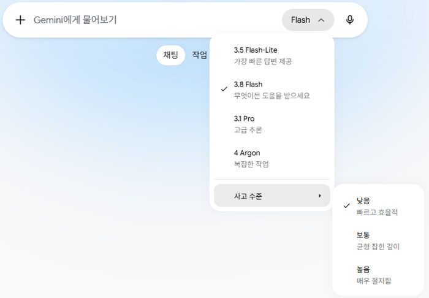
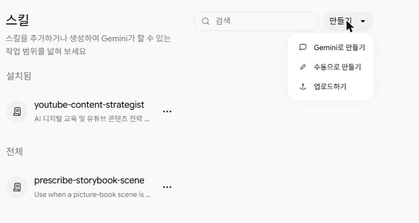

이야기를 고르고, 내 추억 그림책을 짜요
오늘의 중심은 이야기를 짜내는 것이에요. 제미나이와 대화하며 기억을 꺼내고, 글을 쓰고, 퇴고(내용 점검) → 윤문(문장 다듬기) → 교정(맞춤법)까지 마친 뒤 그림으로 넘어가요. 스킬 저장은 맨 마지막이에요.
0-1이야기 고르기 — 고르면 아래 모든 프롬프트와 예시가 바뀌어요
빈칸은 프롬프트에 [대괄호]로 남아요 — 제미나이가 그 칸을 물어봐요. 적은 내용은 이 컴퓨터에만 저장돼요 — 학원 컴퓨터처럼 여럿이 쓰는 곳이면 끝나고 를 누르세요.
0-2오늘 흐름
0-3책 지도 — 장면 10개가 표지 포함 26쪽 책이 돼요
그림은 12장 = 표지 1 + 목차 1 + 장면 10. 책으로 펼치면 장면 10개가 왼쪽 그림 · 오른쪽 글로 들어가 모두 표지 포함 26쪽이에요 (2N+6, N=장면 수). 그림은 짝수 쪽, 글은 홀수 쪽 — 그래서 여는 글은 앞이 아니라 맺는 글로 맨 뒤 판권 옆(25쪽)에 가요. 앞에 넣으면 앞부분이 3쪽(홀수)이 되어 그림이 전부 오른쪽으로 뒤집혀요.
제미나이가 묻고, 내가 답하기
처음부터 글을 쓰려면 막막해요. 제미나이에게 질문을 해 달라고 하면, 답만 해도 이야기 재료가 모여요.
1-1제미나이 준비 — 3.8 Flash · 사고 수준 보통

- 제미나이 열기 ↗ → 새 채팅
- 입력창 오른쪽 「Flash ⌄」 → 3.8 Flash
- 같은 메뉴 맨 아래 사고 수준 → 보통
- 오늘은 이 채팅 하나에서 끝까지 이어 가요. 첫 대화 뒤 채팅 이름을 「내 이야기_제목」으로 바꿔 두세요.
1-2프롬프트 5칸 틀
"너는 ○○ 전문가야" 같은 역할 한 줄보다 내 상황과 조건을 적는 쪽이 결과를 더 크게 바꿔요. 아래 프롬프트도 이 다섯 칸으로 되어 있어요.
1-3인터뷰 시작
[나·상황] 나는 60대이고, 손주에게 줄 에세이 그림책을 만들려고 해. 주제는 「할아버지의 라디오」야. 어릴 때 할아버지와 툇마루에서 라디오를 같이 듣던 기억이 있는데, 요즘은 휴대폰으로 뭐든 혼자 듣다 보니 그때 그 감정이 없어. [목표] 이 추억을 12장짜리 그림책 이야기로 만들 재료를 모으고 싶어. [진행 방식] 나에게 질문을 한 번에 하나씩 해 줘. 쉬운 말로 묻고, 답하기 쉽게 짧은 예시 답을 하나 붙여 줘. 순서: ① 언제·어디 ② 누가 함께 ③ 라디오 생김새(색·크기·흠집) ④ 그때 들리던 소리·냄새 ⑤ 가장 또렷한 한 순간 ⑥ 그때 마음과 지금 마음 ⑦ 누구에게 들려주고 싶은지 [지킬 것] 내가 말하지 않은 내용은 지어내지 마. 이야기를 미리 쓰지 말고 질문만 해. [결과 모양] 7개를 다 들으면 「이야기 씨앗 메모」로 정리해 줘.
[나·상황] 나는 60대이고, 손녀에게 줄 에세이 그림책을 만들려고 해. 주제는 「어머니의 도시락」이야. 학교 다닐 때 어머니가 새벽마다 싸 주시던 도시락이 기억나는데, 요즘은 다 사 먹는 시대라 그 도시락이 그리워. [목표] 이 추억을 12장짜리 그림책 이야기로 만들 재료를 모으고 싶어. [진행 방식] 나에게 질문을 한 번에 하나씩 해 줘. 쉬운 말로 묻고, 답하기 쉽게 짧은 예시 답을 하나 붙여 줘. 순서: ① 언제·어디 ② 누가 함께 ③ 도시락 생김새(통·반찬·색) ④ 그때 들리던 소리·냄새 ⑤ 가장 또렷한 한 순간 ⑥ 그때 마음과 지금 마음 ⑦ 누구에게 들려주고 싶은지 [지킬 것] 내가 말하지 않은 내용은 지어내지 마. 이야기를 미리 쓰지 말고 질문만 해. [결과 모양] 7개를 다 들으면 「이야기 씨앗 메모」로 정리해 줘.
[나·상황] 나는 60대이고, 손자에게 줄 에세이 그림책을 만들려고 해. 주제는 「아버지의 자전거」야. 어릴 때 아버지 자전거 뒷자리에 타던 기억이 있는데, 요즘은 차로만 다니다 보니 그 바람과 등의 온기를 느낄 일이 없어. [목표] 이 추억을 12장짜리 그림책 이야기로 만들 재료를 모으고 싶어. [진행 방식] 나에게 질문을 한 번에 하나씩 해 줘. 쉬운 말로 묻고, 답하기 쉽게 짧은 예시 답을 하나 붙여 줘. 순서: ① 언제·어디 ② 누가 함께 ③ 자전거 생김새(색·크기·흠집) ④ 그때 들리던 소리·냄새 ⑤ 가장 또렷한 한 순간 ⑥ 그때 마음과 지금 마음 ⑦ 누구에게 들려주고 싶은지 [지킬 것] 내가 말하지 않은 내용은 지어내지 마. 이야기를 미리 쓰지 말고 질문만 해. [결과 모양] 7개를 다 들으면 「이야기 씨앗 메모」로 정리해 줘.
[나·상황] 나는 ⟦AGE⟧이고, ⟦READER⟧(⟦LEVEL⟧)에게 줄 에세이 그림책을 만들려고 해. 주제는 「⟦T⟧」 이야기야. ⟦MEM⟧ 그런데 요즘은 ⟦NOW⟧ [목표] 이 추억을 12장짜리 그림책 이야기로 만들 재료를 모으고 싶어. [진행 방식] 나에게 질문을 한 번에 하나씩 해 줘. 쉬운 말로 묻고, 답하기 쉽게 짧은 예시 답을 하나 붙여 줘. 순서: ① 언제·어디 ② 누가 함께 ③ ⟦OBJ⟧ 생김새(색·크기·흠집) ④ 그때 들리던 소리·냄새 ⑤ 가장 또렷한 한 순간 ⑥ 그때 마음과 지금 마음 ⑦ 누구에게 들려주고 싶은지 [내가 미리 적어 둔 것 — 비어 있는 칸만 물어봐 줘] · 언제·어디: ⟦WHEN⟧ · 누가 함께: ⟦WHO⟧와 나. ⟦WITH⟧ · ⟦OBJ⟧ 생김새: ⟦LOOK⟧ · 소리·냄새: ⟦SENSE⟧ · 가장 또렷한 한 순간: ⟦MEM⟧ · 그때 들은 말 한마디: ⟦SAY⟧ · 그때 마음 → 지금 마음: ⟦FEEL⟧ → 요즘은 ⟦NOW⟧ · 들려줄 사람: ⟦READER⟧(⟦LEVEL⟧) [지킬 것] 내가 말하지 않은 내용은 지어내지 마. 이야기를 미리 쓰지 말고 질문만 해. [결과 모양] 7개를 다 들으면 「이야기 씨앗 메모」로 정리해 줘.
1-4대화 따라 읽기 — 이렇게 답하면 돼요
제미나이가 하나씩 묻고, 나는 기억나는 대로 짧게 답해요. 아래는 예시 대화예요. 시간이 모자라면 7개를 한 번에 답해도 돼요.
한 번에 답하기 예시 (복사해서 써도 돼요)
수업 시간이 짧아서 7개 답을 한 번에 줄게. ① 1970년대 여름, 일곱 살 무렵. 충청도 시골 할아버지 댁 한옥 툇마루. ② 할아버지와 나 둘. 할머니는 부엌에서 저녁을 짓고 계셨어. ③ 나무 몸통에 누런 천을 댄 도시락통만 한 진공관 라디오. 동그란 다이얼 두 개, 위쪽 모서리가 떨어져 나가 할아버지가 검은 테이프로 감아 두셨어. ④ 지지직 하는 잡음, 저녁 6시 뉴스 시보 "뚜, 뚜, 뚜, 땡", 할아버지 담배 냄새, 마당 모깃불 연기 냄새. ⑤ 할아버지가 다이얼을 아주 천천히 돌리면서 "쉿, 잡힌다 잡힌다" 하시던 순간. 잡음이 걷히고 노랫소리가 또렷해지자 둘이 마주 보고 웃었어. ⑥ 그때는 다이얼 돌리는 할아버지 손이 마술 같았어. 지금은 휴대폰으로 뭐든 바로 나오지만 혼자 이어폰을 꽂고 들어서, 누군가와 같이 기다리던 그 설렘이 없어. ⑦ 휴대폰만 보는 열 살 손주에게.
한 번에 답하기 예시 (복사해서 써도 돼요)
수업 시간이 짧아서 7개 답을 한 번에 줄게. ① 1970년대 겨울, 열 살 무렵. 서울 변두리 단칸방 부엌과 초등학교 교실. ② 어머니와 나. 교실에서는 짝꿍. ③ 노란 양은 도시락. 뚜껑 모서리가 찌그러졌고, 밥 위에 달걀부침 하나, 반찬 칸에 멸치볶음과 김치. ④ 새벽 연탄불에 밥 짓는 냄새, 교실 난로 위에 쌓아 데우던 도시락 냄새, 점심시간 "흔들어 먹자" 하며 흔드는 달그락 소리. ⑤ 뚜껑을 열었더니 달걀부침이 하트 모양으로 놓여 있던 날. 짝꿍이 "우와!" 하고 부러워했어. ⑥ 그때는 반찬이 매일 똑같다고 투정했어. 지금은 뭐든 사 먹지만, 누가 나를 위해 새벽에 싸 준 밥은 없어. ⑦ 학원 가기 전 편의점 삼각김밥으로 끼니를 때우는 열 살 손녀에게.
한 번에 답하기 예시 (복사해서 써도 돼요)
수업 시간이 짧아서 7개 답을 한 번에 줄게. ① 1970년대 봄, 여섯 살 무렵. 경기도 시골 신작로와 장터 가는 길. ② 아버지와 나. 장터에서는 국밥집 아주머니. ③ 검은색 짐자전거. 뒤에 넓은 짐받이, 핸들에 녹슨 은색 종, 짐받이에 아버지가 감아 둔 낡은 수건. ④ "따르릉" 종소리, 자갈길 덜컹덜컹, 아버지 등에서 나던 땀과 비누 냄새, 장터 국밥 냄새. ⑤ 내리막길에서 아버지가 "꽉 잡아라!" 하시고 바람을 가르며 내려가던 순간. 아버지 허리를 꼭 잡고 웃었어. ⑥ 그때는 아버지 등이 세상에서 제일 넓었어. 지금은 차로 금방 가지만 창문 닫고 각자 휴대폰만 봐서, 같이 바람을 맞던 그 느낌이 없어. ⑦ 자전거를 막 배우기 시작한 여덟 살 손자에게.
STEP 0에서 ①~⑦을 다 채웠으면 인터뷰 프롬프트에 이미 들어가 있어요. 그래도 제미나이가 하나씩 물으면 아래를 한 번에 보내도 돼요. 빈 칸은 "잘 모르겠어"라고 적어도 돼요.
7개 답을 한 번에 줄게. ① 언제·어디: ⟦WHEN⟧ ② 누가 함께: ⟦WHO⟧와 나. ⟦WITH⟧ ③ ⟦OBJ⟧ 생김새: ⟦LOOK⟧ ④ 소리·냄새: ⟦SENSE⟧ ⑤ 가장 또렷한 한 순간: ⟦MEM⟧ 그때 들은 말: ⟦SAY⟧ ⑥ 그때 마음 → 지금 마음: ⟦FEEL⟧ → 요즘은 ⟦NOW⟧ ⑦ 들려줄 사람: ⟦READER⟧(⟦LEVEL⟧)에게
1-5씨앗 메모 확인 — 지어낸 곳 찾기
예시 결과 · 이야기 씨앗 메모 (할아버지의 라디오)
· 때·곳: 1970년대 한여름, 일곱 살 무렵 / 충청도 시골 할아버지 댁 한옥 툇마루 · 사람: 할아버지와 나 (부엌에서 저녁 짓던 할머니) · 물건: 나무 몸통·앞면 누런 천, 도시락통만 한 진공관 라디오 / 다이얼 두 개 / 깨진 모서리에 검은 테이프 · 소리·냄새: "지지직" 잡음, 6시 시보 "뚜, 뚜, 뚜, 땡" / 할아버지 담배 냄새, 마당 모깃불 쑥 연기 냄새 · 한 순간: "쉿, 잡힌다 잡힌다" — 노랫소리가 또렷해지자 마주 보고 웃던 얼굴 · 마음: 그때는 할아버지 손이 마술 같았다 → 지금은 혼자 바로 듣지만 함께 기다리던 설렘이 없다 · 들려줄 사람: 휴대폰만 보는 열 살 손주
→ 다음 STEP 첫 프롬프트에서 고쳐 달라고 해요.
예시 결과 · 이야기 씨앗 메모 (어머니의 도시락)
· 때·곳: 1970년대 겨울, 열 살 무렵 / 서울 변두리 단칸방 부엌, 초등학교 교실 · 사람: 어머니와 나 / 교실의 짝꿍 · 물건: 노란 양은 도시락, 찌그러진 뚜껑 모서리 / 달걀부침, 멸치볶음, 김치 · 소리·냄새: 새벽 연탄불 밥 냄새, 난로 위 도시락 냄새 / "흔들어 먹자" 달그락 소리 / 보온 도시락의 김 · 한 순간: 하트 모양 달걀부침 — 짝꿍의 "우와!" · 마음: 그때는 반찬이 똑같다고 투정 → 지금은 누가 나를 위해 싸 준 밥이 없다 · 들려줄 사람: 삼각김밥으로 끼니를 때우는 열 살 손녀
→ 다음 STEP 첫 프롬프트에서 고쳐 달라고 해요.
예시 결과 · 이야기 씨앗 메모 (아버지의 자전거)
· 때·곳: 1970년대 봄, 여섯 살 무렵 / 경기도 시골 신작로, 장터 가는 길 · 사람: 아버지와 나 / 장터 국밥집 아주머니 · 물건: 검은색 짐자전거, 넓은 짐받이(낡은 수건), 핸들의 녹슨 은색 종 · 소리·냄새: "따르릉", 자갈길 덜컹덜컹 / 아버지 등의 땀·비누 냄새, 국밥 냄새 / 장터 뻥튀기 "뻥!" · 한 순간: 내리막길 "꽉 잡아라!" — 바람을 가르며 웃던 나 · 마음: 그때는 아버지 등이 제일 넓었다 → 지금은 차로 금방 가지만 같이 맞던 바람이 없다 · 들려줄 사람: 자전거를 막 배우는 여덟 살 손자
→ 다음 STEP 첫 프롬프트에서 고쳐 달라고 해요.
✍️ 내 이야기는 아직 결과가 없어서, 예시는 「할아버지의 라디오」로 보여 드려요. 보기만 하고, 내 것은 제미나이 답에서 가져와요.
예시 결과 · 이야기 씨앗 메모 (할아버지의 라디오)
· 때·곳: 1970년대 한여름, 일곱 살 무렵 / 충청도 시골 할아버지 댁 한옥 툇마루 · 사람: 할아버지와 나 (부엌에서 저녁 짓던 할머니) · 물건: 나무 몸통·앞면 누런 천, 도시락통만 한 진공관 라디오 / 다이얼 두 개 / 깨진 모서리에 검은 테이프 · 소리·냄새: "지지직" 잡음, 6시 시보 "뚜, 뚜, 뚜, 땡" / 할아버지 담배 냄새, 마당 모깃불 쑥 연기 냄새 · 한 순간: "쉿, 잡힌다 잡힌다" — 노랫소리가 또렷해지자 마주 보고 웃던 얼굴 · 마음: 그때는 할아버지 손이 마술 같았다 → 지금은 혼자 바로 듣지만 함께 기다리던 설렘이 없다 · 들려줄 사람: 휴대폰만 보는 열 살 손주
→ 다음 STEP 첫 프롬프트에서 고쳐 달라고 해요.
- 이야기 씨앗 메모 (복사해서 붙이기)
- 내가 고친 곳 한 줄
줄거리 → 12장 나누기 → 장면마다 글
같은 채팅에서 이어 가요. 지금 → 옛날 → 지금으로 이야기 뼈대를 세우고, 장면 10개로 나눠 오른쪽 쪽에 들어갈 글을 받아요.
2-1줄거리 — 지금 → 옛날 → 지금
메모 잘 봤어. 한 군데 고칠게: 모깃불에 "쑥"은 내가 말 안 했어. 그냥 "모깃불 연기"로 해 줘. [목표] 이 메모로 에세이 그림책 줄거리를 만들어 줘. [진행 방식] 지금 → 옛날 → 지금 순서로. 시작은 휴대폰 이어폰을 낀 손주와 나, 가운데는 할아버지와 라디오 추억, 끝은 내가 손주와 무언가를 "같이" 듣는 장면. [지킬 것] 메모에 없는 사건은 넣지 마. 끝 장면만 내가 앞으로 하고 싶은 일로 써도 돼. [결과 모양] 다섯 줄 줄거리(지금 / 옛날 1 / 옛날 2 / 대비 / 지금) + 한 줄 주제문. 다섯 줄 줄거리는 코드 블록으로.
메모 잘 봤어. 한 군데 고칠게: "보온 도시락의 김"은 내가 말 안 했어. 내 도시락은 노란 양은 도시락이야. 빼 줘. [목표] 이 메모로 에세이 그림책 줄거리를 만들어 줘. [진행 방식] 지금 → 옛날 → 지금 순서로. 시작은 편의점 삼각김밥을 들고 학원으로 뛰어가는 손녀와 나, 가운데는 어머니와 도시락 추억, 끝은 내가 손녀에게 도시락을 "싸 주는" 장면. [지킬 것] 메모에 없는 사건은 넣지 마. 끝 장면만 내가 앞으로 하고 싶은 일로 써도 돼. [결과 모양] 다섯 줄 줄거리(지금 / 옛날 1 / 옛날 2 / 대비 / 지금) + 한 줄 주제문. 다섯 줄 줄거리는 코드 블록으로.
메모 잘 봤어. 한 군데 고칠게: "장터 뻥튀기"는 내가 말 안 했어. 빼 줘. [목표] 이 메모로 에세이 그림책 줄거리를 만들어 줘. [진행 방식] 지금 → 옛날 → 지금 순서로. 시작은 차 뒷좌석에서 휴대폰만 보는 손자와 나, 가운데는 아버지 자전거 뒷자리 추억, 끝은 내가 손자를 자전거 뒷자리에 "태워 주는" 장면. [지킬 것] 메모에 없는 사건은 넣지 마. 끝 장면만 내가 앞으로 하고 싶은 일로 써도 돼. [결과 모양] 다섯 줄 줄거리(지금 / 옛날 1 / 옛날 2 / 대비 / 지금) + 한 줄 주제문. 다섯 줄 줄거리는 코드 블록으로.
메모 잘 봤어. 한 군데 고칠게: [메모에 내가 말하지 않은 내용이 있으면 여기 적기 — 없으면 "없음"] [목표] 이 메모로 에세이 그림책 줄거리를 만들어 줘. [진행 방식] 지금 → 옛날 → 지금 순서로. 시작은 요즘의 ⟦READER⟧와 나, 가운데는 ⟦WHO⟧와 ⟦OBJ⟧ 추억, 끝은 내가 ⟦READER⟧와 ⟦OBJ⟧에 담긴 마음을 "같이" 나누는 장면. [지킬 것] 메모에 없는 사건은 넣지 마. 끝 장면만 내가 앞으로 하고 싶은 일로 써도 돼. [결과 모양] 다섯 줄 줄거리(지금 / 옛날 1 / 옛날 2 / 대비 / 지금) + 한 줄 주제문. 다섯 줄 줄거리는 코드 블록으로.
예시 결과 · 줄거리
지금(시작): 열 살 손주가 이어폰을 꽂고 휴대폰 화면만 보고, 나는 곁에서 홀로 듣는 아이를 바라본다. 옛날 1: 1970년대 여름 충청도 시골, 모깃불 연기와 담배 냄새가 맴돌던 툇마루의 검은 테이프 감긴 나무 라디오. 옛날 2: "지지직" 잡음 속 "쉿, 잡힌다 잡힌다" — 또렷해진 노랫소리에 마주 보며 웃던 기다림의 순간. 대비: 손가락 하나로 바로 혼자 듣는 오늘, 함께 귀 기울이던 온기가 없다. 지금(끝): 나는 손주 곁으로 가 이어폰 한쪽을 나눠 끼고, 같은 소리를 둘이 "같이" 들으며 웃는다. 주제문: 혼자 듣는 시대에, 소리를 함께 기다리고 마주 보던 온기를 손주에게 전하고 싶다.
예시 결과 · 줄거리
지금(시작): 학원 가방을 멘 손녀가 편의점 삼각김밥을 들고 뛰어가고, 나는 그 뒷모습을 바라본다. 옛날 1: 1970년대 겨울 새벽, 연탄불에 밥을 짓던 어머니와 노란 양은 도시락. 옛날 2: 난로 위 도시락 탑, "흔들어 먹자!", 하트 모양 달걀부침에 짝꿍이 "우와!" 하던 점심시간. 대비: 그때는 똑같은 반찬에 투정했지만, 지금은 누가 나를 위해 싸 준 밥이 귀하다. 지금(끝): 나는 손녀에게 하트 달걀부침을 얹은 도시락을 싸 준다. 주제문: 사 먹는 시대에, 누군가를 위해 싸 주는 밥 한 끼의 마음을 손녀에게 전하고 싶다.
예시 결과 · 줄거리
지금(시작): 차 뒷좌석의 손자는 휴대폰만 보고, 닫힌 창밖으로 길이 지나간다. 옛날 1: 1970년대 봄, 녹슨 종이 달린 아버지의 검은 짐자전거와 수건 감은 짐받이. 옛날 2: 자갈 신작로의 덜컹거림, 아버지 등의 냄새, 내리막길 "꽉 잡아라!"와 장터 국밥. 대비: 차로 금방 가는 오늘, 같이 맞던 바람과 등의 온기가 없다. 지금(끝): 나는 손자를 자전거 뒷자리에 태우고 "꽉 잡아라!" 하고 외친다. 주제문: 빨리 가는 시대에, 누군가의 등에 기대 같이 바람을 맞던 시간을 손자에게 전하고 싶다.
✍️ 내 이야기는 아직 결과가 없어서, 예시는 「할아버지의 라디오」로 보여 드려요. 보기만 하고, 내 것은 제미나이 답에서 가져와요.
예시 결과 · 줄거리
지금(시작): 열 살 손주가 이어폰을 꽂고 휴대폰 화면만 보고, 나는 곁에서 홀로 듣는 아이를 바라본다. 옛날 1: 1970년대 여름 충청도 시골, 모깃불 연기와 담배 냄새가 맴돌던 툇마루의 검은 테이프 감긴 나무 라디오. 옛날 2: "지지직" 잡음 속 "쉿, 잡힌다 잡힌다" — 또렷해진 노랫소리에 마주 보며 웃던 기다림의 순간. 대비: 손가락 하나로 바로 혼자 듣는 오늘, 함께 귀 기울이던 온기가 없다. 지금(끝): 나는 손주 곁으로 가 이어폰 한쪽을 나눠 끼고, 같은 소리를 둘이 "같이" 들으며 웃는다. 주제문: 혼자 듣는 시대에, 소리를 함께 기다리고 마주 보던 온기를 손주에게 전하고 싶다.
2-212장으로 나누고 장면마다 글 받기
좋아. 이제 12장으로 나눠 줘. [분량] 12장 = 표지 1 + 목차 1 + 장면 10. 책으로 펼치면 장면마다 왼쪽은 그림, 오른쪽은 글이야. [독자] 손주(초등학생). 손주가 들어도 아는 낱말로. [글] 장면마다 오른쪽 쪽에 들어갈 나레이션 — 문장 길이와 쪽당 문장 수는 독자(초등학생)에 맞게. 대사가 필요한 장면은 따옴표로 한 줄. 할아버지가 손주에게 들려주는 말투 — 문장 끝은 「~단다, ~했지」처럼 통일. [번호] 장면 번호는 1~10만. 표지·목차는 번호 없이 따로. [지킬 것] 메모와 줄거리에 없는 사건은 넣지 마. 인터뷰에 나온 소리와 말은 그대로 살려 줘. [결과 모양] ① 표: 장면 | 제목 | 지금/옛날 | 글 ② 표 아래에 목차에 쓸 제목 10개를 한 줄씩 ③ 장면 1~10 글 전체를 "장면 N · 제목" 머리말을 붙여 코드 블록 하나로.
좋아. 이제 12장으로 나눠 줘. [분량] 12장 = 표지 1 + 목차 1 + 장면 10. 책으로 펼치면 장면마다 왼쪽은 그림, 오른쪽은 글이야. [독자] 손녀(초등학생). 손녀가 들어도 아는 낱말로. [글] 장면마다 오른쪽 쪽에 들어갈 나레이션 — 문장 길이와 쪽당 문장 수는 독자(초등학생)에 맞게. 대사가 필요한 장면은 따옴표로 한 줄. 할머니가 손녀에게 들려주는 말투 — 문장 끝은 「~단다, ~했지」처럼 통일. [번호] 장면 번호는 1~10만. 표지·목차는 번호 없이 따로. [지킬 것] 메모와 줄거리에 없는 사건은 넣지 마. 인터뷰에 나온 소리와 말은 그대로 살려 줘. [결과 모양] ① 표: 장면 | 제목 | 지금/옛날 | 글 ② 표 아래에 목차에 쓸 제목 10개를 한 줄씩 ③ 장면 1~10 글 전체를 "장면 N · 제목" 머리말을 붙여 코드 블록 하나로.
좋아. 이제 12장으로 나눠 줘. [분량] 12장 = 표지 1 + 목차 1 + 장면 10. 책으로 펼치면 장면마다 왼쪽은 그림, 오른쪽은 글이야. [독자] 손자(초등학생). 손자가 들어도 아는 낱말로. [글] 장면마다 오른쪽 쪽에 들어갈 나레이션 — 문장 길이와 쪽당 문장 수는 독자(초등학생)에 맞게. 대사가 필요한 장면은 따옴표로 한 줄. 할아버지가 손자에게 들려주는 말투 — 문장 끝은 「~단다, ~했지」처럼 통일. [번호] 장면 번호는 1~10만. 표지·목차는 번호 없이 따로. [지킬 것] 메모와 줄거리에 없는 사건은 넣지 마. 인터뷰에 나온 소리와 말은 그대로 살려 줘. [결과 모양] ① 표: 장면 | 제목 | 지금/옛날 | 글 ② 표 아래에 목차에 쓸 제목 10개를 한 줄씩 ③ 장면 1~10 글 전체를 "장면 N · 제목" 머리말을 붙여 코드 블록 하나로.
좋아. 이제 12장으로 나눠 줘. [분량] 12장 = 표지 1 + 목차 1 + 장면 10. 책으로 펼치면 장면마다 왼쪽은 그림, 오른쪽은 글이야. [독자] ⟦READER⟧(⟦LEVEL⟧). ⟦READER⟧가 들어도 아는 낱말로. [글] 장면마다 오른쪽 쪽에 들어갈 나레이션 — 문장 길이와 쪽당 문장 수는 독자(⟦LEVEL⟧)에 맞게. 대사가 필요한 장면은 따옴표로 한 줄. ⟦NARR⟧가 ⟦READER⟧에게 들려주는 말투 — 문장 끝은 「⟦TONE⟧」처럼 통일. [번호] 장면 번호는 1~10만. 표지·목차는 번호 없이 따로. [지킬 것] 메모와 줄거리에 없는 사건은 넣지 마. 인터뷰에 나온 소리와 말은 그대로 살려 줘. [결과 모양] ① 표: 장면 | 제목 | 지금/옛날 | 글 ② 표 아래에 목차에 쓸 제목 10개를 한 줄씩 ③ 장면 1~10 글 전체를 "장면 N · 제목" 머리말을 붙여 코드 블록 하나로.
[고칠 것] [여기에 고칠 내용을 적기 — 예: "옛날 2는 비 오는 날로", "장면 7 대사를 더 짧게"] [지킬 것] 적은 것만 고치고, 나머지는 한 글자도 바꾸지 마. [결과 모양] ① 고친 곳 표: 연번 | 장면(또는 줄) | 고치기 전 | 고친 후 | 비고(왜·어떻게 고쳤나) ② 고친 뒤 전체를 코드 블록으로 — 길면 장면마다 코드 블록 하나씩.
- 한 채팅에서 계속 이어 가니까 앞의 글을 다시 붙여 넣을 필요가 없어요. 그냥 다음 프롬프트만 보내요.
- 단, 며칠 뒤에 이어 하거나 채팅이 길어져서 제미나이가 앞 내용을 잊은 것 같으면(엉뚱한 장면·이름이 나오면) → 가장 최근 최종본 코드 블록만 붙여 넣고 「이걸로 이어 가자」라고 한 뒤 다음 프롬프트를 보내요.
- 장면이 10개가 안 나오면 → "옛날 장면을 하나 더 나눠 줘"
- 말투가 섞이면 → "모두 같은 끝맺음으로 맞춰 줘"
장면이 12개로 나오면(표지·목차까지 번호를 붙이면) → "장면 번호는 1~10만, 표지·목차는 따로"
- 줄거리 다섯 줄 + 주제문
- 12장 표 (아직 다듬기 전 글)
퇴고 → 윤문 → 교정으로 최종본 만들기
오늘 가장 중요한 연습이에요. 고치기는 큰 것부터 작은 것으로 가요. 먼저 퇴고(내용·흐름 점검), 그다음 윤문(문장 다듬기), 마지막에 교정(맞춤법·띄어쓰기). 큰 것을 먼저 고쳐야 다듬은 문장을 다시 버리는 일이 없어요.
| 무엇을 보나 | 누가 정하나 | |
|---|---|---|
| 퇴고 | 사실·호칭·흐름·빠진 것·겹침 — 이야기 자체 | 나 (AI는 찾아만 줌) |
| 윤문 | 문장·대사 — 내용은 그대로 | AI가 다듬고 내가 확인 |
| 교정 | 맞춤법·띄어쓰기·오탈자 | AI |
3-1퇴고 — 내용과 흐름 점검
AI에게 "고치지 말고 찾아만 줘"라고 해요. 내 이야기니까 고칠지 말지는 내가 정해요.
[목표] 장면 1~10의 글을 퇴고하려고 해. 퇴고는 내용과 흐름을 점검하는 거야. 고치지 말고, 걸리는 곳을 찾아만 줘. 고칠지는 내가 정할게. [점검 기준] ① 사실 — 이야기 씨앗 메모와 다른 내용, 메모에 없는데 들어간 내용 ② 호칭 — 손주 입장에서 내 가족을 어떻게 부를지(예: 손주에게 내 할아버지 → 증조할아버지). 처음 나올 때 한 번 풀어 주는지 ③ 흐름 — 지금 → 옛날 → 지금이 자연스럽게 이어지는지, 처음 장면과 끝 장면이 짝을 이루는지 ④ 빠진 것 — 메모에 있는데 글에 안 들어간 소리·냄새·말·사람 ⑤ 겹침 — 같은 내용이 두 장면에 되풀이되는지 [결과 모양] 표: 연번 | 장면 | 걸리는 곳 | 기준 번호 | 이렇게 고치면 어떨까(제안 한 줄)
[목표] 장면 1~10의 글을 퇴고하려고 해. 퇴고는 내용과 흐름을 점검하는 거야. 고치지 말고, 걸리는 곳을 찾아만 줘. 고칠지는 내가 정할게. [점검 기준] ① 사실 — 이야기 씨앗 메모와 다른 내용, 메모에 없는데 들어간 내용 ② 호칭 — 손녀 입장에서 내 가족을 어떻게 부를지(예: 손주에게 내 할아버지 → 증조할아버지). 처음 나올 때 한 번 풀어 주는지 ③ 흐름 — 지금 → 옛날 → 지금이 자연스럽게 이어지는지, 처음 장면과 끝 장면이 짝을 이루는지 ④ 빠진 것 — 메모에 있는데 글에 안 들어간 소리·냄새·말·사람 ⑤ 겹침 — 같은 내용이 두 장면에 되풀이되는지 [결과 모양] 표: 연번 | 장면 | 걸리는 곳 | 기준 번호 | 이렇게 고치면 어떨까(제안 한 줄)
[목표] 장면 1~10의 글을 퇴고하려고 해. 퇴고는 내용과 흐름을 점검하는 거야. 고치지 말고, 걸리는 곳을 찾아만 줘. 고칠지는 내가 정할게. [점검 기준] ① 사실 — 이야기 씨앗 메모와 다른 내용, 메모에 없는데 들어간 내용 ② 호칭 — 손자 입장에서 내 가족을 어떻게 부를지(예: 손주에게 내 할아버지 → 증조할아버지). 처음 나올 때 한 번 풀어 주는지 ③ 흐름 — 지금 → 옛날 → 지금이 자연스럽게 이어지는지, 처음 장면과 끝 장면이 짝을 이루는지 ④ 빠진 것 — 메모에 있는데 글에 안 들어간 소리·냄새·말·사람 ⑤ 겹침 — 같은 내용이 두 장면에 되풀이되는지 [결과 모양] 표: 연번 | 장면 | 걸리는 곳 | 기준 번호 | 이렇게 고치면 어떨까(제안 한 줄)
[목표] 장면 1~10의 글을 퇴고하려고 해. 퇴고는 내용과 흐름을 점검하는 거야. 고치지 말고, 걸리는 곳을 찾아만 줘. 고칠지는 내가 정할게. [점검 기준] ① 사실 — 이야기 씨앗 메모와 다른 내용, 메모에 없는데 들어간 내용 ② 호칭 — ⟦READER⟧ 입장에서 내 가족을 어떻게 부를지(예: 손주에게 내 할아버지 → 증조할아버지). 처음 나올 때 한 번 풀어 주는지 ③ 흐름 — 지금 → 옛날 → 지금이 자연스럽게 이어지는지, 처음 장면과 끝 장면이 짝을 이루는지 ④ 빠진 것 — 메모에 있는데 글에 안 들어간 소리·냄새·말·사람 ⑤ 겹침 — 같은 내용이 두 장면에 되풀이되는지 [결과 모양] 표: 연번 | 장면 | 걸리는 곳 | 기준 번호 | 이렇게 고치면 어떨까(제안 한 줄)
예시 결과 · 퇴고에서 찾은 곳
| 연번 | 장면 | 걸리는 곳 | 기준 | 이렇게 고치면 |
|---|---|---|---|---|
| 1 | 3 | "할아버지"와 "증조할아버지"가 섞임 | ② 호칭 | 처음 나올 때 "할아버지의 할아버지, 너에게는 증조할아버지"로 풀기 |
| 2 | 2 | 부엌에서 저녁 짓던 할머니가 빠짐 | ④ 빠진 것 | 툇마루 장면에 "부엌에선 할머니가 저녁을 지으셨지" 한 줄 |
| 3 | 6 | "할아버지 손" — 누구 손인지 헷갈림 | ② 호칭 | "증조할아버지 손"으로 |
예시 결과 · 퇴고에서 찾은 곳
| 연번 | 장면 | 걸리는 곳 | 기준 | 이렇게 고치면 |
|---|---|---|---|---|
| 1 | 2 | "엄마"와 "어머니"가 섞임 | ② 호칭 | 장면 2에서 "할머니의 엄마, 너에게는 증조할머니"로 풀고 이후 통일 |
| 2 | 8 | 투정하던 장면에 하트 달걀 이야기가 또 나옴 | ⑤ 겹침 | 장면 7에만 두기 |
| 3 | 5 | 난로 위 도시락 "냄새"가 빠짐 | ④ 빠진 것 | "고소한 냄새가 교실에 퍼졌지" 한 줄 |
예시 결과 · 퇴고에서 찾은 곳
| 연번 | 장면 | 걸리는 곳 | 기준 | 이렇게 고치면 |
|---|---|---|---|---|
| 1 | 2 | "아빠"와 "아버지"가 섞임 | ② 호칭 | "할아버지의 아버지, 너에게는 증조할아버지"로 풀고 이후 "아버지"로 통일 |
| 2 | 5 | "땀과 비누 냄새"가 장면 5·6에 두 번 | ⑤ 겹침 | 장면 6에만 두기 |
| 3 | 10 | 손자 헬멧 이야기가 없음 | ④ 빠진 것 | "헬멧 쓰고" 한마디 — 요즘 장면이니까 |
✍️ 내 이야기는 아직 결과가 없어서, 예시는 「할아버지의 라디오」로 보여 드려요. 보기만 하고, 내 것은 제미나이 답에서 가져와요.
예시 결과 · 퇴고에서 찾은 곳
| 연번 | 장면 | 걸리는 곳 | 기준 | 이렇게 고치면 |
|---|---|---|---|---|
| 1 | 3 | "할아버지"와 "증조할아버지"가 섞임 | ② 호칭 | 처음 나올 때 "할아버지의 할아버지, 너에게는 증조할아버지"로 풀기 |
| 2 | 2 | 부엌에서 저녁 짓던 할머니가 빠짐 | ④ 빠진 것 | 툇마루 장면에 "부엌에선 할머니가 저녁을 지으셨지" 한 줄 |
| 3 | 6 | "할아버지 손" — 누구 손인지 헷갈림 | ② 호칭 | "증조할아버지 손"으로 |
점검표를 보고 반영할 연번을 정했으면, 그 번호만 고쳐 달라고 해요.
퇴고 표에서 [반영할 연번 — 예: 1, 3, 4]번만 반영해서 고쳐 줘. 나머지는 그대로 둬.
[결과 모양] ① 고친 곳 표: 연번 | 장면 | 고치기 전 | 고친 후 | 비고(고친 내용) ② 고친 장면 1~10 전체를 코드 블록 하나로 ("장면 N · 제목" 머리말 포함).3-2윤문 — 문장과 대사 다듬기
이제 장면 1~10의 글을 윤문해 줘. 윤문은 내용은 그대로 두고 문장만 매끄럽게 다듬는 거야.
[윤문 기준]
① 한 문장에 일은 하나만 — "~하고, ~했는데, ~해서"로 이어진 문장은 나누기
② 대사는 따옴표로 따로 한 줄
③ "~하라고 하셨다"처럼 전하는 말은 직접 대사로
④ 군더더기·같은 낱말 반복 줄이기
⑤ 문장 길이는 손주(초등학생)가 읽기 편하게. 짧게 자르는 게 목적이 아니야 — 소리 내어 읽어서 숨이 차는 문장만 나눠 줘
⑥ 말투는 할아버지 말투로 통일 — 문장 끝은 「~단다, ~했지」처럼
[지킬 것] 내용·사실·순서는 바꾸지 마.
[결과 모양] ① 고친 곳 표: 연번 | 장면 | 고치기 전 | 고친 후 | 비고(어느 기준으로 고쳤나) ② 윤문한 장면 1~10 전체를 코드 블록 하나로 ("장면 N · 제목" 머리말 포함).이제 장면 1~10의 글을 윤문해 줘. 윤문은 내용은 그대로 두고 문장만 매끄럽게 다듬는 거야.
[윤문 기준]
① 한 문장에 일은 하나만 — "~하고, ~했는데, ~해서"로 이어진 문장은 나누기
② 대사는 따옴표로 따로 한 줄
③ "~하라고 하셨다"처럼 전하는 말은 직접 대사로
④ 군더더기·같은 낱말 반복 줄이기
⑤ 문장 길이는 손녀(초등학생)가 읽기 편하게. 짧게 자르는 게 목적이 아니야 — 소리 내어 읽어서 숨이 차는 문장만 나눠 줘
⑥ 말투는 할머니 말투로 통일 — 문장 끝은 「~단다, ~했지」처럼
[지킬 것] 내용·사실·순서는 바꾸지 마.
[결과 모양] ① 고친 곳 표: 연번 | 장면 | 고치기 전 | 고친 후 | 비고(어느 기준으로 고쳤나) ② 윤문한 장면 1~10 전체를 코드 블록 하나로 ("장면 N · 제목" 머리말 포함).이제 장면 1~10의 글을 윤문해 줘. 윤문은 내용은 그대로 두고 문장만 매끄럽게 다듬는 거야.
[윤문 기준]
① 한 문장에 일은 하나만 — "~하고, ~했는데, ~해서"로 이어진 문장은 나누기
② 대사는 따옴표로 따로 한 줄
③ "~하라고 하셨다"처럼 전하는 말은 직접 대사로
④ 군더더기·같은 낱말 반복 줄이기
⑤ 문장 길이는 손자(초등학생)가 읽기 편하게. 짧게 자르는 게 목적이 아니야 — 소리 내어 읽어서 숨이 차는 문장만 나눠 줘
⑥ 말투는 할아버지 말투로 통일 — 문장 끝은 「~단다, ~했지」처럼
[지킬 것] 내용·사실·순서는 바꾸지 마.
[결과 모양] ① 고친 곳 표: 연번 | 장면 | 고치기 전 | 고친 후 | 비고(어느 기준으로 고쳤나) ② 윤문한 장면 1~10 전체를 코드 블록 하나로 ("장면 N · 제목" 머리말 포함).이제 장면 1~10의 글을 윤문해 줘. 윤문은 내용은 그대로 두고 문장만 매끄럽게 다듬는 거야.
[윤문 기준]
① 한 문장에 일은 하나만 — "~하고, ~했는데, ~해서"로 이어진 문장은 나누기
② 대사는 따옴표로 따로 한 줄
③ "~하라고 하셨다"처럼 전하는 말은 직접 대사로
④ 군더더기·같은 낱말 반복 줄이기
⑤ 문장 길이는 ⟦READER⟧(⟦LEVEL⟧)가 읽기 편하게. 짧게 자르는 게 목적이 아니야 — 소리 내어 읽어서 숨이 차는 문장만 나눠 줘
⑥ 말투는 ⟦NARR⟧ 말투로 통일 — 문장 끝은 「⟦TONE⟧」처럼
[지킬 것] 내용·사실·순서는 바꾸지 마.
[결과 모양] ① 고친 곳 표: 연번 | 장면 | 고치기 전 | 고친 후 | 비고(어느 기준으로 고쳤나) ② 윤문한 장면 1~10 전체를 코드 블록 하나로 ("장면 N · 제목" 머리말 포함).- 한 문장에 일은 하나만 — "~하고, ~했는데, ~해서"로 이어지면 나누기
- 대사는 따로 — 따옴표로 한 줄
- 전하는 말 → 직접 대사 — "꽉 잡으라고 하셨다" → "꽉 잡아라!"
- 군더더기 빼기 — "정말 너무너무", 같은 낱말 반복
문장 길이는 정해진 숫자가 없어요. 들려줄 사람이 읽기 편한지, 소리 내어 읽어서 숨이 차지 않는지로 판단해요. 오른쪽 한 쪽이 통째로 글 자리라 조금 긴 문장도 괜찮아요.
3-3전·후 비교 — 무엇이 달라졌나
담배 냄새 나는 증조할아버지 곁에서, 나는 숨죽이고 귀를 기울였지.
"쉿, 잡힌다 잡힌다."
"흔들어 먹자!"
뚜껑을 닫고 흔들면 김치와 밥이 맛있게 섞였단다.
"꽉 잡아라!"
바람이 귀를 스치며 지나갔단다.
그 등이 세상에서 제일 넓어 보였지.
✍️ 내 이야기는 아직 결과가 없어서, 예시는 「할아버지의 라디오」로 보여 드려요. 보기만 하고, 내 것은 제미나이 답에서 가져와요.
담배 냄새 나는 증조할아버지 곁에서, 나는 숨죽이고 귀를 기울였지.
"쉿, 잡힌다 잡힌다."
3-4교정 — 맞춤법·띄어쓰기는 AI에게
[목표] 윤문을 마친 장면 1~10의 글에서 맞춤법과 띄어쓰기만 교정해 줘. [지킬 것] 낱말이나 문장 내용은 바꾸지 마. 고칠 곳이 없는 장면은 "없음". [결과 모양] ① 고친 곳 표: 연번 | 장면 | 고치기 전 | 고친 후 | 비고(이유 한 줄) ② 교정까지 마친 최종본 장면 1~10을 코드 블록 하나로 — 이게 미리캔버스에 붙일 글이야. 그리고 장면마다 따로 복사할 수 있게 장면별 코드 블록 10개도 이어서.
예시 결과 · 교정 (만약 이렇게 썼다면)
| 연번 | 장면 | 고치기 전 | 고친 후 | 비고 |
|---|---|---|---|---|
| 1 | 4 | 모깃불연기가 | 모깃불 연기가 | 낱말과 낱말은 띄어 써요 |
| 2 | 6 | 몇번을 | 몇 번을 | 세는 말("번")은 띄어 써요 |
| 3 | 9 | 나눠낀단다 | 나눠 낀단다 | "나눠"와 "낀다"는 따로 쓰는 말이에요 |
예시 결과 · 교정 (만약 이렇게 썼다면)
| 연번 | 장면 | 고치기 전 | 고친 후 | 비고 |
|---|---|---|---|---|
| 1 | 2 | 연탄불에밥을 | 연탄불에 밥을 | 낱말과 낱말은 띄어 써요 |
| 2 | 5 | 탑 처럼 | 탑처럼 | "처럼"은 앞말에 붙여 써요 |
| 3 | 10 | 맛있게먹으렴 | 맛있게 먹으렴 | 꾸며 주는 말은 띄어 써요 |
예시 결과 · 교정 (만약 이렇게 썼다면)
| 연번 | 장면 | 고치기 전 | 고친 후 | 비고 |
|---|---|---|---|---|
| 1 | 3 | 녹슨은색 종 | 녹슨 은색 종 | 꾸며 주는 말은 띄어 써요 |
| 2 | 5 | 덜컹 덜컹 | 덜컹덜컹 | 소리를 흉내 내는 말은 붙여 써요 |
| 3 | 10 | 타볼래 | 타 볼래 | "타다"와 "보다"는 띄어 써요 |
✍️ 내 이야기는 아직 결과가 없어서, 예시는 「할아버지의 라디오」로 보여 드려요. 보기만 하고, 내 것은 제미나이 답에서 가져와요.
예시 결과 · 교정 (만약 이렇게 썼다면)
| 연번 | 장면 | 고치기 전 | 고친 후 | 비고 |
|---|---|---|---|---|
| 1 | 4 | 모깃불연기가 | 모깃불 연기가 | 낱말과 낱말은 띄어 써요 |
| 2 | 6 | 몇번을 | 몇 번을 | 세는 말("번")은 띄어 써요 |
| 3 | 9 | 나눠낀단다 | 나눠 낀단다 | "나눠"와 "낀다"는 따로 쓰는 말이에요 |
3-5최종본
세 단계를 마친 글이 최종본이에요. 교정 결과의 코드 블록이 바로 그것 — STEP 7에서 미리캔버스 오른쪽 쪽에 장면별 코드 블록을 하나씩 붙여요.
예시 · 최종본 장면 1~10 (할아버지의 라디오)
너는 오늘도 이어폰을 꽂고 있더구나.
작은 화면만 혼자 들여다보고 있지.
1970년대 여름, 할아버지가 일곱 살 때였단다.
충청도 시골집 툇마루에 앉아 있었지.
할아버지의 할아버지, 너에게는 증조할아버지와 함께였단다.
툇마루엔 도시락통만 한 진공관 라디오가 있었지.
나무 몸통 앞엔 누런 천이 대어 있었단다.
깨진 모서리는 증조할아버지가 검은 테이프로 감아 두셨지.
라디오는 온통 "지지직" 잡음만 냈단다.
증조할아버지의 담배 냄새가 맴돌았지.
마당에선 모깃불 연기가 피어올랐단다.
증조할아버지는 다이얼을 아주 천천히 돌리셨어.
"쉿, 잡힌다 잡힌다."
숨을 죽이고 소리를 기다렸단다.
저녁 6시 시보가 울렸어. "뚜, 뚜, 뚜, 땡!"
잡음이 걷히고 또렷한 노랫소리가 나왔지.
다이얼을 돌리던 증조할아버지 손은 마술 같았단다.
노래가 나오자 둘이 마주 보고 웃었단다.
소리를 함께 기다리던 설렘이 참 좋았지.
요즘 휴대폰은 뭐든 바로 나오지.
하지만 혼자 이어폰을 꽂고 들으면,
함께 기다리던 그 설렘이 없단다.
그래서 네게 다가가 이어폰 한쪽을 나눠 낀단다.
너와 소리를 같이 듣고 싶어서란다.
이어폰 하나로 같은 소리를 듣고, 너와 내가 마주 보고 웃지.
세상에서 가장 따뜻한 소리는
누군가와 함께 들을 때 찾아온단다.
예시 · 최종본 장면 1~10 (어머니의 도시락)
학원 가방을 멘 너는 삼각김밥을 들고 뛰어가더구나.
비닐 뜯는 소리가 유난히 크게 들렸단다.
할머니가 열 살 때였단다.
할머니의 엄마, 너에게는 증조할머니가
새벽마다 연탄불에 밥을 지으셨지.
노란 양은 도시락은 뚜껑 모서리가 찌그러져 있었어.
밥 위엔 달걀부침 하나,
칸에는 멸치볶음과 김치가 있었단다.
도시락을 가방에 넣으면 걸을 때마다 달그락 소리가 났단다.
그 소리가 학교 가는 길 내내 따라왔지.
겨울 교실엔 둥근 난로가 있었어.
아이들 도시락이 탑처럼 쌓여
따뜻하게 데워졌단다.
점심시간이면 짝꿍이 외쳤지.
"흔들어 먹자!"
뚜껑을 닫고 흔들면 김치와 밥이 맛있게 섞였단다.
어느 날 뚜껑을 열었더니 달걀부침이 하트 모양이었어.
짝꿍이 "우와!" 하고 부러워했지.
그때는 반찬이 매일 똑같다고 투정했단다.
새벽에 일어나는 엄마 마음은 몰랐지.
요즘은 어디서든 밥을 사 먹을 수 있지.
그런데 누가 나를 위해 싸 준 밥은
참 귀하단다.
그래서 오늘은 할머니가 네 도시락을 쌌단다.
달걀부침은 하트 모양으로.
맛있게 먹으렴, 우리 손녀.
예시 · 최종본 장면 1~10 (아버지의 자전거)
우리는 차를 타고 금방 할아버지 집에 왔지.
창문은 닫혀 있고, 너는 휴대폰만 보고 있었단다.
할아버지가 여섯 살 때였단다.
할아버지의 아버지, 너에게는 증조할아버지에겐
커다란 검은 짐자전거가 있었지.
핸들엔 녹슨 은색 종이 달려 있었어.
"따르릉!"
그 소리가 들리면 아버지가 오신 거였단다.
뒤 짐받이엔 아버지가 낡은 수건을 감아 두셨지.
내 엉덩이 아프지 말라고.
자갈길을 달리면 덜컹덜컹 온몸이 흔들렸어.
나는 아버지 허리를 꼭 잡았단다.
아버지 등에선 땀과 비누 냄새가 났어.
그 등이 세상에서 제일 넓어 보였지.
내리막길 앞에서 아버지가 외치셨어.
"꽉 잡아라!"
바람이 귀를 스치며 지나갔단다.
장터에 닿으면 국밥집 아주머니가 반겨 주셨지.
아버지와 나눠 먹던 국밥은 참 따뜻했단다.
요즘은 차로 어디든 금방 가지.
하지만 창문을 닫으면
바람도, 등의 온기도 없단다.
이번 주말엔 할아버지 자전거 뒷자리에 타 볼래?
"꽉 잡아라!"
이번엔 할아버지가 외쳐 줄게.
✍️ 내 이야기는 아직 결과가 없어서, 예시는 「할아버지의 라디오」로 보여 드려요. 보기만 하고, 내 것은 제미나이 답에서 가져와요.
예시 · 최종본 장면 1~10 (할아버지의 라디오)
너는 오늘도 이어폰을 꽂고 있더구나.
작은 화면만 혼자 들여다보고 있지.
1970년대 여름, 할아버지가 일곱 살 때였단다.
충청도 시골집 툇마루에 앉아 있었지.
할아버지의 할아버지, 너에게는 증조할아버지와 함께였단다.
툇마루엔 도시락통만 한 진공관 라디오가 있었지.
나무 몸통 앞엔 누런 천이 대어 있었단다.
깨진 모서리는 증조할아버지가 검은 테이프로 감아 두셨지.
라디오는 온통 "지지직" 잡음만 냈단다.
증조할아버지의 담배 냄새가 맴돌았지.
마당에선 모깃불 연기가 피어올랐단다.
증조할아버지는 다이얼을 아주 천천히 돌리셨어.
"쉿, 잡힌다 잡힌다."
숨을 죽이고 소리를 기다렸단다.
저녁 6시 시보가 울렸어. "뚜, 뚜, 뚜, 땡!"
잡음이 걷히고 또렷한 노랫소리가 나왔지.
다이얼을 돌리던 증조할아버지 손은 마술 같았단다.
노래가 나오자 둘이 마주 보고 웃었단다.
소리를 함께 기다리던 설렘이 참 좋았지.
요즘 휴대폰은 뭐든 바로 나오지.
하지만 혼자 이어폰을 꽂고 들으면,
함께 기다리던 그 설렘이 없단다.
그래서 네게 다가가 이어폰 한쪽을 나눠 낀단다.
너와 소리를 같이 듣고 싶어서란다.
이어폰 하나로 같은 소리를 듣고, 너와 내가 마주 보고 웃지.
세상에서 가장 따뜻한 소리는
누군가와 함께 들을 때 찾아온단다.
- 퇴고 찾은 곳 표 + 내가 고치기로 한 것
- 윤문 전·후 표
- 최종본 장면 1~10
옛날 동화는 왜 멀리서 그렸고, 요즘 그림책은 무엇이 달라졌을까?
카메라를 배웠다고 모든 장면을 극적으로 만들면 오히려 어지러워요. 옛날 방식의 이유와 요즘 그림책의 흐름을 보고, 우리 책의 기준을 정합니다.
4-1옛날 동화 그림 — 객석에서 무대를 보듯
어린 독자는 "전체"가 보여야 따라와요
누가, 어디서, 무엇을 하는지가 한 화면에 다 있어야 이야기를 놓치지 않아요.
그림이 설명을 맡았어요
그림책은 글이 짧아서 그림이 상황을 대신 설명해야 했고, 설명에는 멀리서 넓게 보는 그림이 가장 좋아요.
연극·인형극처럼 보던 전통
무대를 객석에서 보듯 한 걸음 떨어진 자리가 익숙했어요. 그래서 "동화 그림 = 멀리서"가 자연스러워졌어요.
4-2요즘 그림책은 이렇게 달라졌어요
실제 책의 그림은 저작권이 있어 교안에 옮기지 않고, 어떤 기법인지 그림으로 설명한 뒤 실제 책은 링크로 보실 수 있게 했어요.
① 어른도 읽는 그림책
최근 몇 년 사이 그림책을 읽는 성인 독자층이 크게 늘었고, 성인 대상 그림책 만들기 수업과 그림책 전문 책방도 많아졌어요. 이제 그림책은 "아이 책"만이 아니에요 — 우리가 만드는 어른의 그림 에세이가 바로 이 흐름이에요.
관련 기사 보기 ↗② 영화처럼 카메라를 움직이는 그림책
크리스 반 알스버그의 『주만지』(1981, 칼데콧상)는 아주 큰 클로즈업과 극적인 각도, 위에서 내려다보는 시점으로 긴장감을 만들어 유명해졌어요. 작가 스스로도 원근·빛·시점을 써서 그림에 신비로움을 준다고 말해요.
책 소개 보기 ↗③ 일부러 같은 구도를 반복하는 그림책
이수지 작가의 『파도야 놀자』는 배경과 인물의 구도를 같게 두고 파도의 모양만 매번 다르게 그려요. 바다에 어울리는 긴 판형을 골랐다고도 해요. 카메라를 "안 움직이는 것"도 하나의 연출이에요. (이수지 작가는 2022년 한국인 첫 안데르센상 수상)
책 소개 보기 ↗④ 사진과 입체로 "찍는" 그림책
백희나 작가처럼 입체 인형과 세트를 만들어 사진으로 찍거나, 가희·진주 작가의 『빨간 사과가 먹고 싶다면』처럼 필름 카메라로 찍은 사진을 모아 만든 그림책도 있어요. 이런 책은 진짜 카메라를 쓰니 뷰·샷·앵글이 그대로 드러나요 — 우리가 플로우로 그림을 뽑을 때 고르는 카메라 말도 바로 이것이에요.
관련 기사 보기 ↗4-3우리 책의 기준 — 보통 문장과 느낌표
우리 책은 어른의 기억을 담은 그림 에세이라 사건보다 마음이 중심이에요. 그래서 이렇게 정해요.
책 한 권의 리듬 — 좋은 예
막대가 높을수록 카메라가 가까워요. 분홍 막대 !가 느낌표 장면이에요.
4-4흔히 하는 실수 세 가지
10장이 다 같은 그림처럼 보여요. 책장을 넘겨도 마음이 움직이지 않아요.
얼굴과 손만 계속 나와서 "여기가 어디지?"가 돼요. 어지럽고 읽기 힘들어요.
같은 거리가 이어지면 이야기가 멈춘 것처럼 느껴져요. (이수지 작가처럼 일부러 반복하는 건 예외!)
4-5우리 책의 카메라 규칙 5가지
- 시작은 멀리 — 첫 장면은 롱샷으로 "어디서"를 보여 줘요.
- 대부분은 보통 문장 — 장면 10개 중 7개 정도는 풀샷·롱샷·미디엄.
- 느낌표는 2~3번 — 마음이 가장 큰 순간에만 클로즈업이나 로우·하이 앵글.
- 같은 샷 3장 연속 금지 — 일부러 반복하는 연출이 아니라면 거리를 섞어요.
- 끝은 다시 한 걸음 뒤로 — 마지막은 미디엄이나 롱샷으로 여운을 남겨요.
4-6우리 책 리듬 만들기
STEP 3 최종본을 소리 내어 읽으면서 장면마다 샷을 골라 보세요. 그래프와 규칙 점검이 바로 바뀌어요. 여기서 정한 리듬을 STEP 5에서 제미나이 추천과 비교해요.
- 우리 책 리듬 그래프 캡처 (규칙 5개 ✔ 상태)
- 느낌표로 고른 장면 번호와 이유 한 줄
최종 글 → 장면과 카메라 정하기
글이 확정되면 장면마다 무엇을 어떻게 보여 줄지 정해요. 카메라 말(뷰·샷·앵글)은 아래 한 장 요약으로 충분해요 — 이번엔 제미나이에게 추천받고 STEP 4의 규칙 5가지와 내 리듬 그래프로 확인해요.
5-0카메라 말 한 장 요약
| 뷰 (어디서 보나) | 샷 (얼마나 가까이) | 앵글 (높이) |
|---|---|---|
| 정면 · 3/4(비스듬히) · 측면 · 뒷모습 · 어깨 너머 · 1인칭(내 눈) | 익스트림 롱샷(아주 멀리, 풍경) · 롱샷(장소+사람) · 풀샷(몸 전체) · 미디엄(허리 위) · 클로즈업(얼굴·손) · 익스트림 클로즈업(눈·손끝) | 버즈아이(위에서 내려다봄) · 하이(조금 위) · 아이레벨(눈높이) · 로우(아래서 올려다봄) |
5-1장면마다 세 가지 질문
👀 무엇을 보여 줄까
독자가 이 장면에서 꼭 봐야 할 것 하나
💗 어떤 마음일까
그리움·설렘·쓸쓸함 — 마음이 클수록 가까이(클로즈업)
🕰 지금일까 옛날일까
지금은 회청색 저녁빛, 옛날은 따뜻한 주황빛
5-2AI에게 카메라 추천받기
[목표] 확정한 글을 보고 장면 1~10마다 그릴 그림을 정하고, 카메라(뷰·샷·앵글)를 추천해 줘. [먼저 생각할 것] 장면마다 ① 독자가 봐야 할 것 ② 느껴야 할 마음 ③ 지금인지 옛날인지 [카메라 말] 뷰: 정면 / 3/4 / 측면 / 뒷모습 / 어깨 너머 / 1인칭 · 샷: 익스트림 롱샷 / 롱샷 / 풀샷 / 미디엄 / 클로즈업 / 익스트림 클로즈업 · 앵글: 버즈아이 / 하이 / 아이레벨 / 로우 [규칙] ① 시작은 멀리 — 장면 1은 롱샷으로 "어디서"를 보여 줄 것 ② 대부분은 보통 문장 — 10장 중 7장 정도는 풀샷·롱샷·미디엄, 눈높이 ③ 느낌표는 2~3번 — 마음이 가장 큰 순간에만 클로즈업이나 로우·하이 앵글 ④ 같은 샷 3장 연속 금지 ⑤ 끝은 다시 한 걸음 뒤로 — 마지막 장면은 미디엄이나 롱샷으로 여운 ⑥ 지금은 회청색 저녁빛, 옛날은 따뜻한 주황빛 ⑦ 글은 오른쪽 쪽에 따로 넣으니 그림에 글자 자리는 필요 없음 [결과 모양] 표: 장면 | 그림 내용(누가·어디서·무엇을, 한 줄) | 뷰 | 샷 | 앵글 | 빛·색 | 고른 이유 + 표 아래 "샷 분포"(보통 문장 몇 장, 느낌표 몇 장과 어느 장면인지) 한 줄.
[목표] 확정한 글을 보고 장면 1~10마다 그릴 그림을 정하고, 카메라(뷰·샷·앵글)를 추천해 줘. [먼저 생각할 것] 장면마다 ① 독자가 봐야 할 것 ② 느껴야 할 마음 ③ 지금인지 옛날인지 [카메라 말] 뷰: 정면 / 3/4 / 측면 / 뒷모습 / 어깨 너머 / 1인칭 · 샷: 익스트림 롱샷 / 롱샷 / 풀샷 / 미디엄 / 클로즈업 / 익스트림 클로즈업 · 앵글: 버즈아이 / 하이 / 아이레벨 / 로우 [규칙] ① 시작은 멀리 — 장면 1은 롱샷으로 "어디서"를 보여 줄 것 ② 대부분은 보통 문장 — 10장 중 7장 정도는 풀샷·롱샷·미디엄, 눈높이 ③ 느낌표는 2~3번 — 마음이 가장 큰 순간에만 클로즈업이나 로우·하이 앵글 ④ 같은 샷 3장 연속 금지 ⑤ 끝은 다시 한 걸음 뒤로 — 마지막 장면은 미디엄이나 롱샷으로 여운 ⑥ 지금은 회청색 저녁빛, 옛날은 따뜻한 주황빛 ⑦ 글은 오른쪽 쪽에 따로 넣으니 그림에 글자 자리는 필요 없음 [결과 모양] 표: 장면 | 그림 내용(누가·어디서·무엇을, 한 줄) | 뷰 | 샷 | 앵글 | 빛·색 | 고른 이유 + 표 아래 "샷 분포"(보통 문장 몇 장, 느낌표 몇 장과 어느 장면인지) 한 줄.
[목표] 확정한 글을 보고 장면 1~10마다 그릴 그림을 정하고, 카메라(뷰·샷·앵글)를 추천해 줘. [먼저 생각할 것] 장면마다 ① 독자가 봐야 할 것 ② 느껴야 할 마음 ③ 지금인지 옛날인지 [카메라 말] 뷰: 정면 / 3/4 / 측면 / 뒷모습 / 어깨 너머 / 1인칭 · 샷: 익스트림 롱샷 / 롱샷 / 풀샷 / 미디엄 / 클로즈업 / 익스트림 클로즈업 · 앵글: 버즈아이 / 하이 / 아이레벨 / 로우 [규칙] ① 시작은 멀리 — 장면 1은 롱샷으로 "어디서"를 보여 줄 것 ② 대부분은 보통 문장 — 10장 중 7장 정도는 풀샷·롱샷·미디엄, 눈높이 ③ 느낌표는 2~3번 — 마음이 가장 큰 순간에만 클로즈업이나 로우·하이 앵글 ④ 같은 샷 3장 연속 금지 ⑤ 끝은 다시 한 걸음 뒤로 — 마지막 장면은 미디엄이나 롱샷으로 여운 ⑥ 지금은 회청색 저녁빛, 옛날은 따뜻한 주황빛 ⑦ 글은 오른쪽 쪽에 따로 넣으니 그림에 글자 자리는 필요 없음 [결과 모양] 표: 장면 | 그림 내용(누가·어디서·무엇을, 한 줄) | 뷰 | 샷 | 앵글 | 빛·색 | 고른 이유 + 표 아래 "샷 분포"(보통 문장 몇 장, 느낌표 몇 장과 어느 장면인지) 한 줄.
[목표] 확정한 글을 보고 장면 1~10마다 그릴 그림을 정하고, 카메라(뷰·샷·앵글)를 추천해 줘. [먼저 생각할 것] 장면마다 ① 독자가 봐야 할 것 ② 느껴야 할 마음 ③ 지금인지 옛날인지 [카메라 말] 뷰: 정면 / 3/4 / 측면 / 뒷모습 / 어깨 너머 / 1인칭 · 샷: 익스트림 롱샷 / 롱샷 / 풀샷 / 미디엄 / 클로즈업 / 익스트림 클로즈업 · 앵글: 버즈아이 / 하이 / 아이레벨 / 로우 [규칙] ① 시작은 멀리 — 장면 1은 롱샷으로 "어디서"를 보여 줄 것 ② 대부분은 보통 문장 — 10장 중 7장 정도는 풀샷·롱샷·미디엄, 눈높이 ③ 느낌표는 2~3번 — 마음이 가장 큰 순간에만 클로즈업이나 로우·하이 앵글 ④ 같은 샷 3장 연속 금지 ⑤ 끝은 다시 한 걸음 뒤로 — 마지막 장면은 미디엄이나 롱샷으로 여운 ⑥ 지금은 회청색 저녁빛, 옛날은 따뜻한 주황빛 ⑦ 글은 오른쪽 쪽에 따로 넣으니 그림에 글자 자리는 필요 없음 [결과 모양] 표: 장면 | 그림 내용(누가·어디서·무엇을, 한 줄) | 뷰 | 샷 | 앵글 | 빛·색 | 고른 이유 + 표 아래 "샷 분포"(보통 문장 몇 장, 느낌표 몇 장과 어느 장면인지) 한 줄.
예시 결과 · 스토리보드
| 장면 | 그림 내용 | 뷰 | 샷 | 앵글 | 빛·색 |
|---|---|---|---|---|---|
| 1 | 방 침대 끝에서 이어폰 끼고 휴대폰 보는 손주, 문가의 나 | 측면 | 롱샷 | 하이 | 회청색 저녁 |
| 2 | 툇마루에 나란히 앉은 일곱 살 나와 증조할아버지 | 대각선 | 풀샷 | 아이레벨 | 붉은 주황 |
| 3 | 툇마루 바닥의 나무 라디오(누런 천·검은 테이프) | 정면 | 미디엄 | 로우 | 따뜻한 주황 |
| 4 | 라디오 앞 두 사람, 마당 너머 모깃불 연기 | 측면 | 풀샷 | 아이레벨 | 노을 주황 |
| 5 | 다이얼을 천천히 돌리는 주름진 손 | 측면 | 클로즈업 | 아이레벨 | 금빛 주황 |
| 6 | 다이얼 위에 멈춘 손과 반짝이는 아이 눈 | 정면 | 클로즈업 | 아이레벨 | 밝은 주황 |
| 7 | 노랫소리에 마주 보고 웃는 두 얼굴 | 정면 | 미디엄 | 아이레벨 | 포근한 주황 |
| 8 | 침대 쪽으로 걸어가는 나, 화면만 보는 손주 | 측면 | 풀샷 | 아이레벨 | 회청색 |
| 9 | 이어폰 한쪽을 건네받는 두 손 | 측면 | 미디엄 | 하이 | 회청색 + 전등빛 |
| 10 | 이어폰 나눠 끼고 눈 맞추며 웃는 둘 | 정면 | 클로즈업 | 아이레벨 | 따뜻한 실내등 |
예시 결과 · 스토리보드
| 장면 | 그림 내용 | 뷰 | 샷 | 앵글 | 빛·색 |
|---|---|---|---|---|---|
| 1 | 편의점 앞, 삼각김밥 들고 뛰는 손녀와 지켜보는 나 | 측면 | 롱샷 | 하이 | 회청색 저녁 |
| 2 | 새벽 부엌 연탄불 앞 어머니, 문틈의 어린 나 | 뒷모습 | 풀샷 | 아이레벨 | 주황 불빛 |
| 3 | 노란 양은 도시락 속 달걀부침·멸치·김치 | 버즈아이 | 클로즈업 | 위에서 | 따뜻한 아침빛 |
| 4 | 가방 메고 골목을 걷는 어린 나 | 측면 | 풀샷 | 아이레벨 | 아침 햇살 |
| 5 | 교실 둥근 난로 위 도시락 탑 | 정면 | 미디엄 | 로우 | 난롯불 주황 |
| 6 | 짝꿍과 도시락을 흔드는 모습 | 정면 | 미디엄 | 아이레벨 | 교실 창빛 |
| 7 | 하트 달걀부침과 놀란 짝꿍 얼굴 | 1인칭 | 클로즈업 | 하이 | 밝은 주황 |
| 8 | 도시락 앞에서 시무룩한 어린 나 | 측면 | 클로즈업 | 아이레벨 | 차분한 주황 |
| 9 | 편의점 진열대 앞에 선 60대 나 | 정면 | 미디엄 | 아이레벨 | 형광 회청 |
| 10 | 식탁에서 도시락을 건네는 할머니와 손녀 | 3/4 | 미디엄 | 아이레벨 | 따뜻한 실내등 |
예시 결과 · 스토리보드
| 장면 | 그림 내용 | 뷰 | 샷 | 앵글 | 빛·색 |
|---|---|---|---|---|---|
| 1 | 차 뒷좌석에서 휴대폰 보는 손자, 운전석의 나 | 측면 | 미디엄 | 아이레벨 | 회청색 |
| 2 | 마당에 세운 검은 짐자전거와 증조할아버지 | 3/4 | 풀샷 | 로우 | 봄 햇살 |
| 3 | 핸들의 녹슨 은색 종 | 정면 | 익스트림 클로즈업 | 아이레벨 | 금빛 |
| 4 | 짐받이에 수건을 감는 손 | 측면 | 클로즈업 | 하이 | 따뜻한 빛 |
| 5 | 자갈 신작로를 달리는 두 사람 | 측면 | 롱샷 | 아이레벨 | 봄 햇살 |
| 6 | 아버지 등에 볼을 댄 아이 | 뒷모습 | 클로즈업 | 아이레벨 | 따뜻한 주황 |
| 7 | 내리막길을 내려가는 자전거, 바람 | 정면 | 풀샷 | 로우 | 밝은 오후 |
| 8 | 장터 국밥집에 마주 앉은 두 사람 | 3/4 | 미디엄 | 아이레벨 | 김 오르는 주황 |
| 9 | 닫힌 차창 너머로 지나가는 길 | 어깨 너머 | 미디엄 | 아이레벨 | 회청색 |
| 10 | 손자를 뒷자리에 태운 할아버지 | 3/4 | 풀샷 | 아이레벨 | 따뜻한 노을 |
✍️ 내 이야기는 아직 결과가 없어서, 예시는 「할아버지의 라디오」로 보여 드려요. 보기만 하고, 내 것은 제미나이 답에서 가져와요.
예시 결과 · 스토리보드
| 장면 | 그림 내용 | 뷰 | 샷 | 앵글 | 빛·색 |
|---|---|---|---|---|---|
| 1 | 방 침대 끝에서 이어폰 끼고 휴대폰 보는 손주, 문가의 나 | 측면 | 롱샷 | 하이 | 회청색 저녁 |
| 2 | 툇마루에 나란히 앉은 일곱 살 나와 증조할아버지 | 대각선 | 풀샷 | 아이레벨 | 붉은 주황 |
| 3 | 툇마루 바닥의 나무 라디오(누런 천·검은 테이프) | 정면 | 미디엄 | 로우 | 따뜻한 주황 |
| 4 | 라디오 앞 두 사람, 마당 너머 모깃불 연기 | 측면 | 풀샷 | 아이레벨 | 노을 주황 |
| 5 | 다이얼을 천천히 돌리는 주름진 손 | 측면 | 클로즈업 | 아이레벨 | 금빛 주황 |
| 6 | 다이얼 위에 멈춘 손과 반짝이는 아이 눈 | 정면 | 클로즈업 | 아이레벨 | 밝은 주황 |
| 7 | 노랫소리에 마주 보고 웃는 두 얼굴 | 정면 | 미디엄 | 아이레벨 | 포근한 주황 |
| 8 | 침대 쪽으로 걸어가는 나, 화면만 보는 손주 | 측면 | 풀샷 | 아이레벨 | 회청색 |
| 9 | 이어폰 한쪽을 건네받는 두 손 | 측면 | 미디엄 | 하이 | 회청색 + 전등빛 |
| 10 | 이어폰 나눠 끼고 눈 맞추며 웃는 둘 | 정면 | 클로즈업 | 아이레벨 | 따뜻한 실내등 |
5-3규칙 5가지로 확인 (STEP 4)
| 점검 | ○ / ✕ |
|---|---|
| ① 시작은 멀리 — 장면 1이 롱샷인가? | |
| ② 보통 문장(풀샷·롱샷·미디엄)이 7장 정도인가? | |
| ③ 느낌표(클로즈업·로우·하이)가 2~3장이고, 마음이 가장 큰 장면인가? | |
| ④ 같은 샷이 3장 연속이지 않나? | |
| ⑤ 끝은 한 걸음 뒤로 — 마지막이 미디엄·롱샷인가? | |
| 지금·옛날 빛이 구분되나? |
스토리보드에서 [고칠 장면과 내용 — 예: "장면 5는 손만 크게 클로즈업", "장면 10은 롱샷으로"]만 바꿔 줘. [결과 모양] ① 고친 곳 표: 연번 | 장면 | 고치기 전 | 고친 후 | 비고 ② 고친 스토리보드 표 전체 다시 + 샷 분포 한 줄.
- 스토리보드 표 + 규칙 점검 ○/✕
화풍 고르기 → 고정 문장 → 플로우 프롬프트 전부 → 그리기
제미나이는 프롬프트만 만들고, 그림은 플로우에서 그려요. 화풍은 내가 고르고, 고른 화풍 문장이 인물 고정 문장·시트·앵커·장면·표지 프롬프트 맨 앞에 전부 똑같이 붙어요.
6-1화풍 고르기 — 카드를 누르면 아래 모든 프롬프트가 바뀌어요
이야기 분위기에 맞는 화풍을 내가 골라요. 단일 하나만 써도 되고, 색 + 선 콤비를 써도 돼요. 책 끝까지 한 화풍이에요.
단일 화풍 — 선 재료와 섞을 수 있어요
단일만 가능 — 콤비 안 됨 (입체·종이·민화는 그 자체가 완성)
콤비 (색 + 선) — 어울리는 짝만 모았어요
⟦STY_EN⟧
6-2인물·소품 고정 문장 — 화풍 문장이 앞에 붙어요
[화풍] 이 책의 화풍은 내가 정했어: ⟦STY_KO⟧. 화풍 문장(영어, 모든 그림 프롬프트 맨 앞에 똑같이 붙임): ⟦STY_EN⟧ [목표] 등장인물과 소품을 고정해 줘. 그림마다 똑같이 붙일 짧은 묘사: 일곱 살 나 / 증조할아버지 / 60대 지금의 나 / 열 살 손주 / 라디오(소품). 나이·머리·옷·색까지. 메모에 없는 생김새는 [견본]이라고 표시해. [지킬 것] 담배·술처럼 그림책에 맞지 않는 소재는 그림 묘사에서 빼. 화풍 문장은 한 글자도 바꾸지 마. [결과 모양] ① 표: 누구·무엇 | 한국어 묘사 | 영어 고정 문장 ② 인물·소품마다 「화풍 문장 + 영어 고정 문장」을 합친 한 덩어리를 코드 블록으로 — 블록마다 위에 「고정 문장 · 어린 나」처럼 구분 제목을 붙여.
[화풍] 이 책의 화풍은 내가 정했어: ⟦STY_KO⟧. 화풍 문장(영어, 모든 그림 프롬프트 맨 앞에 똑같이 붙임): ⟦STY_EN⟧ [목표] 등장인물과 소품을 고정해 줘. 그림마다 똑같이 붙일 짧은 묘사: 열 살 나 / 증조할머니 (어머니) / 60대 지금의 나 / 열 살 손녀 / 도시락(소품). 나이·머리·옷·색까지. 메모에 없는 생김새는 [견본]이라고 표시해. [지킬 것] 담배·술처럼 그림책에 맞지 않는 소재는 그림 묘사에서 빼. 화풍 문장은 한 글자도 바꾸지 마. [결과 모양] ① 표: 누구·무엇 | 한국어 묘사 | 영어 고정 문장 ② 인물·소품마다 「화풍 문장 + 영어 고정 문장」을 합친 한 덩어리를 코드 블록으로 — 블록마다 위에 「고정 문장 · 어린 나」처럼 구분 제목을 붙여.
[화풍] 이 책의 화풍은 내가 정했어: ⟦STY_KO⟧. 화풍 문장(영어, 모든 그림 프롬프트 맨 앞에 똑같이 붙임): ⟦STY_EN⟧ [목표] 등장인물과 소품을 고정해 줘. 그림마다 똑같이 붙일 짧은 묘사: 여섯 살 나 / 증조할아버지 (아버지) / 60대 지금의 나 / 여덟 살 손자 / 자전거(소품). 나이·머리·옷·색까지. 메모에 없는 생김새는 [견본]이라고 표시해. [지킬 것] 담배·술처럼 그림책에 맞지 않는 소재는 그림 묘사에서 빼. 화풍 문장은 한 글자도 바꾸지 마. [결과 모양] ① 표: 누구·무엇 | 한국어 묘사 | 영어 고정 문장 ② 인물·소품마다 「화풍 문장 + 영어 고정 문장」을 합친 한 덩어리를 코드 블록으로 — 블록마다 위에 「고정 문장 · 어린 나」처럼 구분 제목을 붙여.
[화풍] 이 책의 화풍은 내가 정했어: ⟦STY_KO⟧. 화풍 문장(영어, 모든 그림 프롬프트 맨 앞에 똑같이 붙임): ⟦STY_EN⟧ [목표] 등장인물과 소품을 고정해 줘. 그림마다 똑같이 붙일 짧은 묘사: 어린 시절의 나 / ⟦WHO⟧ / ⟦AGE⟧ 지금의 나 / ⟦READER⟧ / ⟦OBJ⟧(소품). 나이·머리·옷·색까지. 메모에 없는 생김새는 [견본]이라고 표시해. [지킬 것] 담배·술처럼 그림책에 맞지 않는 소재는 그림 묘사에서 빼. 화풍 문장은 한 글자도 바꾸지 마. [결과 모양] ① 표: 누구·무엇 | 한국어 묘사 | 영어 고정 문장 ② 인물·소품마다 「화풍 문장 + 영어 고정 문장」을 합친 한 덩어리를 코드 블록으로 — 블록마다 위에 「고정 문장 · 어린 나」처럼 구분 제목을 붙여.
라디오 실습에서 실제로 고른 화풍은 과슈 + 연필 선 — 아래 코드 블록의 화풍 문장은 지금 고른 화풍으로 바뀌어 보여요.
예시 결과 · 고정 문장 표
| 누구·무엇 | 한국어 (지어낸 곳은 [견본]) | 영어 고정 문장 |
|---|---|---|
| 일곱 살 나 | [견본] 1970년대 일곱 살 남자아이, 바가지머리, 흰 민소매 면 티, 파란 줄무늬 반바지, 맨발 | A 7-year-old Korean boy in the 1970s, round bowl-cut black hair, chubby cheeks, wide curious eyes, wearing a loose white sleeveless undershirt and blue striped shorts, barefoot. |
| 증조할아버지 | [견본] 70대 후반 마른 할아버지, 짧은 백발, 투박한 큰 손, 낡은 모시 적삼과 삼베 바지 (담배는 그리지 않음) | A Korean great-grandfather in his late 70s, gentle and slender, short white hair, large weathered hands, wearing a faded off-white ramie jacket and hemp trousers, warm smile. |
| 60대 지금의 나 | [견본] 60대 초반, 반백 가르마 머리, 얇은 금테 안경, 올리브그레이 카디건 | A Korean grandfather in his early 60s, soft graying parted hair, thin wire-rimmed glasses, olive-gray knit cardigan over a plain shirt, charcoal trousers. |
| 열 살 손주 | [견본] 열 살 아이(성별은 내가 정하기), 남색 맨투맨, 베이지 조거 팬츠, 흰 유선 이어폰 | A 10-year-old modern Korean boy, neat short black hair, oversized navy sweatshirt, beige jogger pants, white wired earphones, holding a smartphone. |
| 라디오 (소품) | 도시락통만 한 나무 진공관 라디오, 앞면 누런 천, 다이얼 두 개, 깨진 모서리에 검은 테이프 | A vintage lunchbox-sized rectangular vacuum tube radio made of aged dark wood, front speaker grill covered in yellowish woven fabric, two round tuning dials, a chipped top corner wrapped with black electrical tape. |
예시 결과 · 화풍 문장 + 고정 문장 코드 블록 (화풍을 바꾸면 같이 바뀌어요)
⟦STY_EN⟧ A 7-year-old Korean boy in the 1970s, round bowl-cut black hair, chubby cheeks, wide curious eyes, wearing a loose white sleeveless undershirt and blue striped shorts, barefoot.
⟦STY_EN⟧ A Korean great-grandfather in his late 70s, gentle and slender, short white hair, large weathered hands, wearing a faded off-white ramie jacket and hemp trousers, warm smile.
⟦STY_EN⟧ A Korean grandfather in his early 60s, soft graying parted hair, thin wire-rimmed glasses, olive-gray knit cardigan over a plain shirt, charcoal trousers.
⟦STY_EN⟧ A 10-year-old modern Korean boy, neat short black hair, oversized navy sweatshirt, beige jogger pants, white wired earphones, holding a smartphone.
⟦STY_EN⟧ A vintage lunchbox-sized rectangular vacuum tube radio made of aged dark wood, front speaker grill covered in yellowish woven fabric, two round tuning dials, a chipped top corner wrapped with black electrical tape.
- 증조할아버지 묘사에 "담배를 쥐고 계신"이 들어갔어요 → 그림책이라 빼기. 냄새는 글로만.
- 손주가 남자아이라고 말한 적이 없는데 남자아이로 정했어요 → [견본] 표시를 받거나 내가 정하기.
라디오 실습에서 실제로 고른 화풍은 수채화 + 가는 펜 빗금 — 아래 코드 블록의 화풍 문장은 지금 고른 화풍으로 바뀌어 보여요.
예시 결과 · 고정 문장 표
| 누구·무엇 | 한국어 (지어낸 곳은 [견본]) | 영어 고정 문장 |
|---|---|---|
| 열 살 나 | [견본] 1970년대 열 살 여자아이, 짧게 땋은 두 갈래 머리, 남색 교복에 흰 깃, 천 책가방 | A 10-year-old Korean girl in the 1970s with two short braids, wearing a navy school uniform with a white collar, carrying a canvas school bag. |
| 증조할머니 (어머니) | [견본] 1970년대 30대 어머니, 낮게 묶은 쪽머리, 빛바랜 꽃무늬 블라우스, 면 앞치마 | A Korean mother in her 30s in the 1970s with hair tied in a low bun, wearing a faded floral blouse and a cotton apron. |
| 60대 지금의 나 | [견본] 60대 할머니, 짧은 회색 파마머리, 연보라 카디건, 회색 바지 | A Korean grandmother in her 60s with short permed gray hair, wearing a soft lavender cardigan and gray slacks. |
| 열 살 손녀 | [견본] 요즘 열 살 여자아이, 포니테일, 노란 후드티, 청바지, 학원 가방 | A 10-year-old modern Korean girl with a ponytail, wearing a yellow hoodie and jeans, with a backpack. |
| 도시락 (소품) | 노란 양은 도시락, 찌그러진 뚜껑 모서리, 밥 위 달걀부침, 칸에 멸치볶음과 김치 | A yellow aluminum lunch box with a dented lid corner, rice topped with a fried egg, a side compartment with stir-fried anchovies and kimchi. |
예시 결과 · 화풍 문장 + 고정 문장 코드 블록 (화풍을 바꾸면 같이 바뀌어요)
⟦STY_EN⟧ A 10-year-old Korean girl in the 1970s with two short braids, wearing a navy school uniform with a white collar, carrying a canvas school bag.
⟦STY_EN⟧ A Korean mother in her 30s in the 1970s with hair tied in a low bun, wearing a faded floral blouse and a cotton apron.
⟦STY_EN⟧ A Korean grandmother in her 60s with short permed gray hair, wearing a soft lavender cardigan and gray slacks.
⟦STY_EN⟧ A 10-year-old modern Korean girl with a ponytail, wearing a yellow hoodie and jeans, with a backpack.
⟦STY_EN⟧ A yellow aluminum lunch box with a dented lid corner, rice topped with a fried egg, a side compartment with stir-fried anchovies and kimchi.
- 어머니 옷을 한복으로 정해 오면 → 메모(1970년대 서울 단칸방)와 맞는지 확인. 내가 기억하는 옷으로 고쳐요. (견본 예시)
- 손녀 나이·학년이 메모와 같은지(열 살) 확인해요.
라디오 실습에서 실제로 고른 화풍은 크레파스 + 연필 선 — 아래 코드 블록의 화풍 문장은 지금 고른 화풍으로 바뀌어 보여요.
예시 결과 · 고정 문장 표
| 누구·무엇 | 한국어 (지어낸 곳은 [견본]) | 영어 고정 문장 |
|---|---|---|
| 여섯 살 나 | [견본] 1970년대 여섯 살 남자아이, 까까머리, 흰 러닝셔츠, 갈색 반바지, 고무신 | A 6-year-old Korean boy in the 1970s with a buzz cut, wearing a white undershirt, brown shorts and rubber shoes. |
| 증조할아버지 (아버지) | [견본] 1970년대 30대 아버지, 햇볕에 그을린 얼굴, 짧은 검은 머리, 걷어 올린 회색 작업복 셔츠, 카키 바지 | A Korean father in his 30s in the 1970s, tanned and strong, short black hair, wearing a rolled-up gray work shirt and khaki trousers. |
| 60대 지금의 나 | [견본] 60대 할아버지, 짧은 백발, 남색 바람막이, 베이지 바지 | A Korean grandfather in his 60s with short white hair, wearing a navy windbreaker and beige trousers. |
| 여덟 살 손자 | [견본] 요즘 여덟 살 남자아이, 짧은 검은 머리, 빨간 티셔츠, 반바지, 자전거 헬멧 | An 8-year-old modern Korean boy with short black hair, wearing a red T-shirt, shorts and a bicycle helmet. |
| 자전거 (소품) | 1970년대 검은색 짐자전거, 넓은 뒤 짐받이에 낡은 수건, 핸들에 녹슨 은색 종 | A big black Korean cargo bicycle from the 1970s with a wide rear rack wrapped in an old towel and a rusty silver bell on the handlebar. |
예시 결과 · 화풍 문장 + 고정 문장 코드 블록 (화풍을 바꾸면 같이 바뀌어요)
⟦STY_EN⟧ A 6-year-old Korean boy in the 1970s with a buzz cut, wearing a white undershirt, brown shorts and rubber shoes.
⟦STY_EN⟧ A Korean father in his 30s in the 1970s, tanned and strong, short black hair, wearing a rolled-up gray work shirt and khaki trousers.
⟦STY_EN⟧ A Korean grandfather in his 60s with short white hair, wearing a navy windbreaker and beige trousers.
⟦STY_EN⟧ An 8-year-old modern Korean boy with short black hair, wearing a red T-shirt, shorts and a bicycle helmet.
⟦STY_EN⟧ A big black Korean cargo bicycle from the 1970s with a wide rear rack wrapped in an old towel and a rusty silver bell on the handlebar.
- 손자가 자전거 뒷자리에 탈 때 헬멧이 빠지면 → 요즘 장면이니 넣어 달라고 해요. (견본 예시)
- 아버지 나이(1970년대 30대)와 지금의 나(60대)가 같은 사람처럼 보이지 않게 옷·머리를 다르게.
✍️ 내 이야기는 아직 결과가 없어서, 예시는 「할아버지의 라디오」로 보여 드려요. 보기만 하고, 내 것은 제미나이 답에서 가져와요.
라디오 실습에서 실제로 고른 화풍은 과슈 + 연필 선 — 아래 코드 블록의 화풍 문장은 지금 고른 화풍으로 바뀌어 보여요.
예시 결과 · 고정 문장 표
| 누구·무엇 | 한국어 (지어낸 곳은 [견본]) | 영어 고정 문장 |
|---|---|---|
| 일곱 살 나 | [견본] 1970년대 일곱 살 남자아이, 바가지머리, 흰 민소매 면 티, 파란 줄무늬 반바지, 맨발 | A 7-year-old Korean boy in the 1970s, round bowl-cut black hair, chubby cheeks, wide curious eyes, wearing a loose white sleeveless undershirt and blue striped shorts, barefoot. |
| 증조할아버지 | [견본] 70대 후반 마른 할아버지, 짧은 백발, 투박한 큰 손, 낡은 모시 적삼과 삼베 바지 (담배는 그리지 않음) | A Korean great-grandfather in his late 70s, gentle and slender, short white hair, large weathered hands, wearing a faded off-white ramie jacket and hemp trousers, warm smile. |
| 60대 지금의 나 | [견본] 60대 초반, 반백 가르마 머리, 얇은 금테 안경, 올리브그레이 카디건 | A Korean grandfather in his early 60s, soft graying parted hair, thin wire-rimmed glasses, olive-gray knit cardigan over a plain shirt, charcoal trousers. |
| 열 살 손주 | [견본] 열 살 아이(성별은 내가 정하기), 남색 맨투맨, 베이지 조거 팬츠, 흰 유선 이어폰 | A 10-year-old modern Korean boy, neat short black hair, oversized navy sweatshirt, beige jogger pants, white wired earphones, holding a smartphone. |
| 라디오 (소품) | 도시락통만 한 나무 진공관 라디오, 앞면 누런 천, 다이얼 두 개, 깨진 모서리에 검은 테이프 | A vintage lunchbox-sized rectangular vacuum tube radio made of aged dark wood, front speaker grill covered in yellowish woven fabric, two round tuning dials, a chipped top corner wrapped with black electrical tape. |
예시 결과 · 화풍 문장 + 고정 문장 코드 블록 (화풍을 바꾸면 같이 바뀌어요)
⟦STY_EN⟧ A 7-year-old Korean boy in the 1970s, round bowl-cut black hair, chubby cheeks, wide curious eyes, wearing a loose white sleeveless undershirt and blue striped shorts, barefoot.
⟦STY_EN⟧ A Korean great-grandfather in his late 70s, gentle and slender, short white hair, large weathered hands, wearing a faded off-white ramie jacket and hemp trousers, warm smile.
⟦STY_EN⟧ A Korean grandfather in his early 60s, soft graying parted hair, thin wire-rimmed glasses, olive-gray knit cardigan over a plain shirt, charcoal trousers.
⟦STY_EN⟧ A 10-year-old modern Korean boy, neat short black hair, oversized navy sweatshirt, beige jogger pants, white wired earphones, holding a smartphone.
⟦STY_EN⟧ A vintage lunchbox-sized rectangular vacuum tube radio made of aged dark wood, front speaker grill covered in yellowish woven fabric, two round tuning dials, a chipped top corner wrapped with black electrical tape.
- 증조할아버지 묘사에 "담배를 쥐고 계신"이 들어갔어요 → 그림책이라 빼기. 냄새는 글로만.
- 손주가 남자아이라고 말한 적이 없는데 남자아이로 정했어요 → [견본] 표시를 받거나 내가 정하기.
6-3플로우 프롬프트 A~K — 장면 10 + 표지·속표지·배경
책에 들어가는 그림은 장면 10장만이 아니에요. 아래 목록대로 받아요. 글 쪽 배경(G)은 세 가지 중 고르세요. 어제 실습에서 배운 것: 시트는 16:9가 3방향이 나란히 잘 나오고, 프롬프트 아래 국문 해설을 받으면 뷰·샷·앵글 확인이 쉬워요.
| 구분 | 무엇 | 비율 | 어디에 쓰나 |
|---|---|---|---|
| A | 캐릭터 시트 (인물마다 3방향 나란히) | 16:9 | 장면 뽑을 때 첨부하는 기준 그림 |
| B | 소품 앵커 (물건 3방향) | 16:9 | 같이 첨부 |
| C | 장면 1~10 | 3:4 | 4·6·…·22쪽 (왼쪽) |
| D | 앞표지 — 방법 1 그림만 / 방법 2 글자까지 | 3:4 | 1쪽 |
| E | 앞속표지 | 3:4 | 2쪽 |
| F | 목차 배경 | 3:4 | 3쪽 |
| G | 글 쪽 배경 (①·②·③ 중 선택) | 3:4 | 5·7·…·23쪽 (오른쪽) |
| H | 판권 배경 | 3:4 | 24쪽 |
| I | 맺는 글 배경 | 3:4 | 25쪽 |
| J | 뒷표지 | 3:4 | 26쪽 |
| K | 캐릭터 소개 (선택) | 3:4 | 넣으면 4쪽 — 28쪽 책 |
방법 1 — A~K를 한 번에 받기
빠르지만 답이 길어서 중간에 끊기거나 고정 문장이 줄어드는 일이 생겨요. 끊기면 "이어서 써 줘".
[목표] 구글 플로우에 넣을 영어 프롬프트를 전부 만들어 줘. 책에 들어가는 그림 목록은 아래와 같아. [규칙] ① 모든 프롬프트 맨 앞에 화풍 문장 그대로: ⟦STY_EN⟧ ② 장르 꼬리말(children's book illustration 같은 말) 붙이지 말 것 ③ 인물·소품은 위에서 고정한 영어 문장을 줄이지 말고 그대로 넣을 것 ④ 장면 문장은 짧게(2문장 이내), 세로 3:4 ⑤ 모든 프롬프트 끝에: "Full-bleed illustration filling the entire canvas edge to edge, no text, no letters, no frame, no border, no vignette." ⑥ 코드 블록마다 위에 구분 제목을 붙일 것 (예: 「A-1 캐릭터 시트 · 어린 나」). 제목 없는 블록이 하나도 없게. ⑦ 모든 코드 블록 바로 아래에 구도·색감·연출 의도를 한국어로 1~2줄 해설 ⑧ A·B는 가로 16:9 (3방향이 나란히), C~K는 세로 3:4. --ar 같은 파라미터는 쓰지 말 것 [그림 목록] A. 캐릭터 시트 — 인물마다 정면·측면·후면 3방향 전신을 가로로 나란히, 흰 배경, 16:9 B. 소품 앵커 — 라디오: 정면·측면·평면(위) 3방향, 흰 배경, 16:9 C. 장면 1~10 — 스토리보드 순서대로, 뷰·샷·앵글·빛 포함, 지금은 회청색 저녁빛·옛날은 따뜻한 주황빛 D. 앞표지 — 방법 1: 그림만, 위쪽 1/3은 제목을 얹을 수 있게 단순하고 밝게 비워 둘 것 / 방법 2: 그림 위쪽에 한글 제목 「할아버지의 라디오」을 손글씨 느낌으로 크고 또렷하게, 제목 외 글자 없음 E. 앞속표지 — 라디오 하나만 작게, 여백이 넓은 조용한 그림(제목 자리 가운데 비움) F. 목차 배경 — 책 속 소품·장소를 가장자리에 작게, 가운데는 비움 G. 글 쪽 배경 — ⟦TXTBG⟧ H. 판권 배경 — 라디오: 뒤에서 또는 멀리서 아주 연하게, 이야기가 끝난 느낌, 글이 올라갈 수 있게 대부분 비움 I. 맺는 글 배경 — 장면 1 장소를 멀리서 흐릿하게, 글이 올라갈 수 있게 연하게 J. 뒷표지 — 장면 10의 장소를 멀리서, 아래쪽 1/3은 짧은 글이 들어갈 수 있게 비움 K. 캐릭터 소개 (선택) — 인물들이 나란히 정면으로 서서 인사하는 전신, 카메라 연출 없음 [결과 모양] A~K 순서로, 각 프롬프트는 따로 복사할 수 있게 코드 블록 하나씩, 블록 위에 구분 제목, 아래에 국문 해설.
[목표] 구글 플로우에 넣을 영어 프롬프트를 전부 만들어 줘. 책에 들어가는 그림 목록은 아래와 같아. [규칙] ① 모든 프롬프트 맨 앞에 화풍 문장 그대로: ⟦STY_EN⟧ ② 장르 꼬리말(children's book illustration 같은 말) 붙이지 말 것 ③ 인물·소품은 위에서 고정한 영어 문장을 줄이지 말고 그대로 넣을 것 ④ 장면 문장은 짧게(2문장 이내), 세로 3:4 ⑤ 모든 프롬프트 끝에: "Full-bleed illustration filling the entire canvas edge to edge, no text, no letters, no frame, no border, no vignette." ⑥ 코드 블록마다 위에 구분 제목을 붙일 것 (예: 「A-1 캐릭터 시트 · 어린 나」). 제목 없는 블록이 하나도 없게. ⑦ 모든 코드 블록 바로 아래에 구도·색감·연출 의도를 한국어로 1~2줄 해설 ⑧ A·B는 가로 16:9 (3방향이 나란히), C~K는 세로 3:4. --ar 같은 파라미터는 쓰지 말 것 [그림 목록] A. 캐릭터 시트 — 인물마다 정면·측면·후면 3방향 전신을 가로로 나란히, 흰 배경, 16:9 B. 소품 앵커 — 도시락: 정면·측면·평면(위) 3방향, 흰 배경, 16:9 C. 장면 1~10 — 스토리보드 순서대로, 뷰·샷·앵글·빛 포함, 지금은 회청색 저녁빛·옛날은 따뜻한 주황빛 D. 앞표지 — 방법 1: 그림만, 위쪽 1/3은 제목을 얹을 수 있게 단순하고 밝게 비워 둘 것 / 방법 2: 그림 위쪽에 한글 제목 「어머니의 도시락」을 손글씨 느낌으로 크고 또렷하게, 제목 외 글자 없음 E. 앞속표지 — 도시락 하나만 작게, 여백이 넓은 조용한 그림(제목 자리 가운데 비움) F. 목차 배경 — 책 속 소품·장소를 가장자리에 작게, 가운데는 비움 G. 글 쪽 배경 — ⟦TXTBG⟧ H. 판권 배경 — 도시락: 뒤에서 또는 멀리서 아주 연하게, 이야기가 끝난 느낌, 글이 올라갈 수 있게 대부분 비움 I. 맺는 글 배경 — 장면 1 장소를 멀리서 흐릿하게, 글이 올라갈 수 있게 연하게 J. 뒷표지 — 장면 10의 장소를 멀리서, 아래쪽 1/3은 짧은 글이 들어갈 수 있게 비움 K. 캐릭터 소개 (선택) — 인물들이 나란히 정면으로 서서 인사하는 전신, 카메라 연출 없음 [결과 모양] A~K 순서로, 각 프롬프트는 따로 복사할 수 있게 코드 블록 하나씩, 블록 위에 구분 제목, 아래에 국문 해설.
[목표] 구글 플로우에 넣을 영어 프롬프트를 전부 만들어 줘. 책에 들어가는 그림 목록은 아래와 같아. [규칙] ① 모든 프롬프트 맨 앞에 화풍 문장 그대로: ⟦STY_EN⟧ ② 장르 꼬리말(children's book illustration 같은 말) 붙이지 말 것 ③ 인물·소품은 위에서 고정한 영어 문장을 줄이지 말고 그대로 넣을 것 ④ 장면 문장은 짧게(2문장 이내), 세로 3:4 ⑤ 모든 프롬프트 끝에: "Full-bleed illustration filling the entire canvas edge to edge, no text, no letters, no frame, no border, no vignette." ⑥ 코드 블록마다 위에 구분 제목을 붙일 것 (예: 「A-1 캐릭터 시트 · 어린 나」). 제목 없는 블록이 하나도 없게. ⑦ 모든 코드 블록 바로 아래에 구도·색감·연출 의도를 한국어로 1~2줄 해설 ⑧ A·B는 가로 16:9 (3방향이 나란히), C~K는 세로 3:4. --ar 같은 파라미터는 쓰지 말 것 [그림 목록] A. 캐릭터 시트 — 인물마다 정면·측면·후면 3방향 전신을 가로로 나란히, 흰 배경, 16:9 B. 소품 앵커 — 자전거: 정면·측면·평면(위) 3방향, 흰 배경, 16:9 C. 장면 1~10 — 스토리보드 순서대로, 뷰·샷·앵글·빛 포함, 지금은 회청색 저녁빛·옛날은 따뜻한 주황빛 D. 앞표지 — 방법 1: 그림만, 위쪽 1/3은 제목을 얹을 수 있게 단순하고 밝게 비워 둘 것 / 방법 2: 그림 위쪽에 한글 제목 「아버지의 자전거」을 손글씨 느낌으로 크고 또렷하게, 제목 외 글자 없음 E. 앞속표지 — 자전거 하나만 작게, 여백이 넓은 조용한 그림(제목 자리 가운데 비움) F. 목차 배경 — 책 속 소품·장소를 가장자리에 작게, 가운데는 비움 G. 글 쪽 배경 — ⟦TXTBG⟧ H. 판권 배경 — 자전거: 뒤에서 또는 멀리서 아주 연하게, 이야기가 끝난 느낌, 글이 올라갈 수 있게 대부분 비움 I. 맺는 글 배경 — 장면 1 장소를 멀리서 흐릿하게, 글이 올라갈 수 있게 연하게 J. 뒷표지 — 장면 10의 장소를 멀리서, 아래쪽 1/3은 짧은 글이 들어갈 수 있게 비움 K. 캐릭터 소개 (선택) — 인물들이 나란히 정면으로 서서 인사하는 전신, 카메라 연출 없음 [결과 모양] A~K 순서로, 각 프롬프트는 따로 복사할 수 있게 코드 블록 하나씩, 블록 위에 구분 제목, 아래에 국문 해설.
[목표] 구글 플로우에 넣을 영어 프롬프트를 전부 만들어 줘. 책에 들어가는 그림 목록은 아래와 같아. [규칙] ① 모든 프롬프트 맨 앞에 화풍 문장 그대로: ⟦STY_EN⟧ ② 장르 꼬리말(children's book illustration 같은 말) 붙이지 말 것 ③ 인물·소품은 위에서 고정한 영어 문장을 줄이지 말고 그대로 넣을 것 ④ 장면 문장은 짧게(2문장 이내), 세로 3:4 ⑤ 모든 프롬프트 끝에: "Full-bleed illustration filling the entire canvas edge to edge, no text, no letters, no frame, no border, no vignette." ⑥ 코드 블록마다 위에 구분 제목을 붙일 것 (예: 「A-1 캐릭터 시트 · 어린 나」). 제목 없는 블록이 하나도 없게. ⑦ 모든 코드 블록 바로 아래에 구도·색감·연출 의도를 한국어로 1~2줄 해설 ⑧ A·B는 가로 16:9 (3방향이 나란히), C~K는 세로 3:4. --ar 같은 파라미터는 쓰지 말 것 [그림 목록] A. 캐릭터 시트 — 인물마다 정면·측면·후면 3방향 전신을 가로로 나란히, 흰 배경, 16:9 B. 소품 앵커 — ⟦OBJ⟧: 정면·측면·평면(위) 3방향, 흰 배경, 16:9 C. 장면 1~10 — 스토리보드 순서대로, 뷰·샷·앵글·빛 포함, 지금은 회청색 저녁빛·옛날은 따뜻한 주황빛 D. 앞표지 — 방법 1: 그림만, 위쪽 1/3은 제목을 얹을 수 있게 단순하고 밝게 비워 둘 것 / 방법 2: 그림 위쪽에 한글 제목 「⟦T⟧」을 손글씨 느낌으로 크고 또렷하게, 제목 외 글자 없음 E. 앞속표지 — ⟦OBJ⟧ 하나만 작게, 여백이 넓은 조용한 그림(제목 자리 가운데 비움) F. 목차 배경 — 책 속 소품·장소를 가장자리에 작게, 가운데는 비움 G. 글 쪽 배경 — ⟦TXTBG⟧ H. 판권 배경 — ⟦OBJ⟧: 뒤에서 또는 멀리서 아주 연하게, 이야기가 끝난 느낌, 글이 올라갈 수 있게 대부분 비움 I. 맺는 글 배경 — 장면 1 장소를 멀리서 흐릿하게, 글이 올라갈 수 있게 연하게 J. 뒷표지 — 장면 10의 장소를 멀리서, 아래쪽 1/3은 짧은 글이 들어갈 수 있게 비움 K. 캐릭터 소개 (선택) — 인물들이 나란히 정면으로 서서 인사하는 전신, 카메라 연출 없음 [결과 모양] A~K 순서로, 각 프롬프트는 따로 복사할 수 있게 코드 블록 하나씩, 블록 위에 구분 제목, 아래에 국문 해설.
방법 2 — 나눠서 받기 (A 시트 → B 앵커 → C 장면 → D~K 표지·배경)
네 번 보내지만 한 번에 한 덩어리라 확인하기 쉽고, 플로우에서 뽑는 순서와 같아요. 혼자 할 때는 이쪽을 추천해요.
[목표] 구글 플로우에 넣을 영어 프롬프트 중 먼저 A 캐릭터 시트만 만들어 줘. [규칙] ① 모든 프롬프트 맨 앞에 화풍 문장 그대로: ⟦STY_EN⟧ ② 장르 꼬리말(children's book illustration 같은 말) 붙이지 말 것 ③ 인물·소품은 위에서 고정한 영어 문장을 줄이지 말고 그대로 넣을 것 ④ 장면 문장은 짧게(2문장 이내), 세로 3:4 ⑤ 모든 프롬프트 끝에: "Full-bleed illustration filling the entire canvas edge to edge, no text, no letters, no frame, no border, no vignette." ⑥ 코드 블록마다 위에 구분 제목을 붙일 것. 제목 없는 블록이 하나도 없게. ⑦ 모든 코드 블록 바로 아래에 구도·색감·연출 의도를 한국어로 1~2줄 해설 ⑧ A·B는 가로 16:9, C~K는 세로 3:4. --ar 같은 파라미터는 쓰지 말 것 [그림 목록] A. 캐릭터 시트 — 인물마다 정면·측면·후면 3방향 전신을 가로로 나란히, 흰 배경, 16:9 (위에서 고정한 인물 전부) [결과 모양] 인물마다 코드 블록 하나씩, 구분 제목 「A-1 캐릭터 시트 · 어린 나」처럼.
이어서 B 소품 앵커 프롬프트만 만들어 줘. 규칙은 A와 같아. B. 소품 앵커 — 라디오: 정면·측면·평면(위) 3방향, 흰 배경, 16:9 (위에서 고정한 소품 영어 문장 그대로) [결과 모양] 코드 블록 하나, 구분 제목 「B 소품 앵커 · 라디오」.
이어서 C 장면 1~10 프롬프트를 만들어 줘. 규칙은 A와 같아. C. 장면 1~10 — 스토리보드 순서대로, 장면마다 뷰·샷·앵글·빛 포함. 지금은 회청색 저녁빛, 옛날은 따뜻한 주황빛. 등장하는 인물·소품의 고정 문장은 줄이지 말고 그대로. [결과 모양] 장면마다 코드 블록 하나씩, 구분 제목 「C-1 장면 1 · (장면 제목)」처럼. 10개 다.
마지막으로 D~K 표지·속표지·배경 프롬프트를 만들어 줘. 규칙은 A와 같아. D. 앞표지 — 방법 1: 그림만, 위쪽 1/3은 제목을 얹을 수 있게 단순하고 밝게 비워 둘 것 / 방법 2: 그림 위쪽에 한글 제목 「할아버지의 라디오」을 손글씨 느낌으로 크고 또렷하게, 제목 외 글자 없음 E. 앞속표지 — 라디오 하나만 작게, 여백이 넓은 조용한 그림(제목 자리 가운데 비움) F. 목차 배경 — 책 속 소품·장소를 가장자리에 작게, 가운데는 비움 G. 글 쪽 배경 — ⟦TXTBG⟧ H. 판권 배경 — 라디오: 뒤에서 또는 멀리서 아주 연하게, 이야기가 끝난 느낌, 글이 올라갈 수 있게 대부분 비움 I. 맺는 글 배경 — 장면 1 장소를 멀리서 흐릿하게, 글이 올라갈 수 있게 연하게 J. 뒷표지 — 장면 10의 장소를 멀리서, 아래쪽 1/3은 짧은 글이 들어갈 수 있게 비움 K. 캐릭터 소개 (선택) — 인물들이 나란히 정면으로 서서 인사하는 전신, 카메라 연출 없음 [결과 모양] D-1, D-2, E, F, G, H, I, J, K 순서로 코드 블록 하나씩, 블록 위에 구분 제목, 아래에 국문 해설.
[목표] 구글 플로우에 넣을 영어 프롬프트 중 먼저 A 캐릭터 시트만 만들어 줘. [규칙] ① 모든 프롬프트 맨 앞에 화풍 문장 그대로: ⟦STY_EN⟧ ② 장르 꼬리말(children's book illustration 같은 말) 붙이지 말 것 ③ 인물·소품은 위에서 고정한 영어 문장을 줄이지 말고 그대로 넣을 것 ④ 장면 문장은 짧게(2문장 이내), 세로 3:4 ⑤ 모든 프롬프트 끝에: "Full-bleed illustration filling the entire canvas edge to edge, no text, no letters, no frame, no border, no vignette." ⑥ 코드 블록마다 위에 구분 제목을 붙일 것. 제목 없는 블록이 하나도 없게. ⑦ 모든 코드 블록 바로 아래에 구도·색감·연출 의도를 한국어로 1~2줄 해설 ⑧ A·B는 가로 16:9, C~K는 세로 3:4. --ar 같은 파라미터는 쓰지 말 것 [그림 목록] A. 캐릭터 시트 — 인물마다 정면·측면·후면 3방향 전신을 가로로 나란히, 흰 배경, 16:9 (위에서 고정한 인물 전부) [결과 모양] 인물마다 코드 블록 하나씩, 구분 제목 「A-1 캐릭터 시트 · 어린 나」처럼.
이어서 B 소품 앵커 프롬프트만 만들어 줘. 규칙은 A와 같아. B. 소품 앵커 — 도시락: 정면·측면·평면(위) 3방향, 흰 배경, 16:9 (위에서 고정한 소품 영어 문장 그대로) [결과 모양] 코드 블록 하나, 구분 제목 「B 소품 앵커 · 도시락」.
이어서 C 장면 1~10 프롬프트를 만들어 줘. 규칙은 A와 같아. C. 장면 1~10 — 스토리보드 순서대로, 장면마다 뷰·샷·앵글·빛 포함. 지금은 회청색 저녁빛, 옛날은 따뜻한 주황빛. 등장하는 인물·소품의 고정 문장은 줄이지 말고 그대로. [결과 모양] 장면마다 코드 블록 하나씩, 구분 제목 「C-1 장면 1 · (장면 제목)」처럼. 10개 다.
마지막으로 D~K 표지·속표지·배경 프롬프트를 만들어 줘. 규칙은 A와 같아. D. 앞표지 — 방법 1: 그림만, 위쪽 1/3은 제목을 얹을 수 있게 단순하고 밝게 비워 둘 것 / 방법 2: 그림 위쪽에 한글 제목 「어머니의 도시락」을 손글씨 느낌으로 크고 또렷하게, 제목 외 글자 없음 E. 앞속표지 — 도시락 하나만 작게, 여백이 넓은 조용한 그림(제목 자리 가운데 비움) F. 목차 배경 — 책 속 소품·장소를 가장자리에 작게, 가운데는 비움 G. 글 쪽 배경 — ⟦TXTBG⟧ H. 판권 배경 — 도시락: 뒤에서 또는 멀리서 아주 연하게, 이야기가 끝난 느낌, 글이 올라갈 수 있게 대부분 비움 I. 맺는 글 배경 — 장면 1 장소를 멀리서 흐릿하게, 글이 올라갈 수 있게 연하게 J. 뒷표지 — 장면 10의 장소를 멀리서, 아래쪽 1/3은 짧은 글이 들어갈 수 있게 비움 K. 캐릭터 소개 (선택) — 인물들이 나란히 정면으로 서서 인사하는 전신, 카메라 연출 없음 [결과 모양] D-1, D-2, E, F, G, H, I, J, K 순서로 코드 블록 하나씩, 블록 위에 구분 제목, 아래에 국문 해설.
[목표] 구글 플로우에 넣을 영어 프롬프트 중 먼저 A 캐릭터 시트만 만들어 줘. [규칙] ① 모든 프롬프트 맨 앞에 화풍 문장 그대로: ⟦STY_EN⟧ ② 장르 꼬리말(children's book illustration 같은 말) 붙이지 말 것 ③ 인물·소품은 위에서 고정한 영어 문장을 줄이지 말고 그대로 넣을 것 ④ 장면 문장은 짧게(2문장 이내), 세로 3:4 ⑤ 모든 프롬프트 끝에: "Full-bleed illustration filling the entire canvas edge to edge, no text, no letters, no frame, no border, no vignette." ⑥ 코드 블록마다 위에 구분 제목을 붙일 것. 제목 없는 블록이 하나도 없게. ⑦ 모든 코드 블록 바로 아래에 구도·색감·연출 의도를 한국어로 1~2줄 해설 ⑧ A·B는 가로 16:9, C~K는 세로 3:4. --ar 같은 파라미터는 쓰지 말 것 [그림 목록] A. 캐릭터 시트 — 인물마다 정면·측면·후면 3방향 전신을 가로로 나란히, 흰 배경, 16:9 (위에서 고정한 인물 전부) [결과 모양] 인물마다 코드 블록 하나씩, 구분 제목 「A-1 캐릭터 시트 · 어린 나」처럼.
이어서 B 소품 앵커 프롬프트만 만들어 줘. 규칙은 A와 같아. B. 소품 앵커 — 자전거: 정면·측면·평면(위) 3방향, 흰 배경, 16:9 (위에서 고정한 소품 영어 문장 그대로) [결과 모양] 코드 블록 하나, 구분 제목 「B 소품 앵커 · 자전거」.
이어서 C 장면 1~10 프롬프트를 만들어 줘. 규칙은 A와 같아. C. 장면 1~10 — 스토리보드 순서대로, 장면마다 뷰·샷·앵글·빛 포함. 지금은 회청색 저녁빛, 옛날은 따뜻한 주황빛. 등장하는 인물·소품의 고정 문장은 줄이지 말고 그대로. [결과 모양] 장면마다 코드 블록 하나씩, 구분 제목 「C-1 장면 1 · (장면 제목)」처럼. 10개 다.
마지막으로 D~K 표지·속표지·배경 프롬프트를 만들어 줘. 규칙은 A와 같아. D. 앞표지 — 방법 1: 그림만, 위쪽 1/3은 제목을 얹을 수 있게 단순하고 밝게 비워 둘 것 / 방법 2: 그림 위쪽에 한글 제목 「아버지의 자전거」을 손글씨 느낌으로 크고 또렷하게, 제목 외 글자 없음 E. 앞속표지 — 자전거 하나만 작게, 여백이 넓은 조용한 그림(제목 자리 가운데 비움) F. 목차 배경 — 책 속 소품·장소를 가장자리에 작게, 가운데는 비움 G. 글 쪽 배경 — ⟦TXTBG⟧ H. 판권 배경 — 자전거: 뒤에서 또는 멀리서 아주 연하게, 이야기가 끝난 느낌, 글이 올라갈 수 있게 대부분 비움 I. 맺는 글 배경 — 장면 1 장소를 멀리서 흐릿하게, 글이 올라갈 수 있게 연하게 J. 뒷표지 — 장면 10의 장소를 멀리서, 아래쪽 1/3은 짧은 글이 들어갈 수 있게 비움 K. 캐릭터 소개 (선택) — 인물들이 나란히 정면으로 서서 인사하는 전신, 카메라 연출 없음 [결과 모양] D-1, D-2, E, F, G, H, I, J, K 순서로 코드 블록 하나씩, 블록 위에 구분 제목, 아래에 국문 해설.
[목표] 구글 플로우에 넣을 영어 프롬프트 중 먼저 A 캐릭터 시트만 만들어 줘. [규칙] ① 모든 프롬프트 맨 앞에 화풍 문장 그대로: ⟦STY_EN⟧ ② 장르 꼬리말(children's book illustration 같은 말) 붙이지 말 것 ③ 인물·소품은 위에서 고정한 영어 문장을 줄이지 말고 그대로 넣을 것 ④ 장면 문장은 짧게(2문장 이내), 세로 3:4 ⑤ 모든 프롬프트 끝에: "Full-bleed illustration filling the entire canvas edge to edge, no text, no letters, no frame, no border, no vignette." ⑥ 코드 블록마다 위에 구분 제목을 붙일 것. 제목 없는 블록이 하나도 없게. ⑦ 모든 코드 블록 바로 아래에 구도·색감·연출 의도를 한국어로 1~2줄 해설 ⑧ A·B는 가로 16:9, C~K는 세로 3:4. --ar 같은 파라미터는 쓰지 말 것 [그림 목록] A. 캐릭터 시트 — 인물마다 정면·측면·후면 3방향 전신을 가로로 나란히, 흰 배경, 16:9 (위에서 고정한 인물 전부) [결과 모양] 인물마다 코드 블록 하나씩, 구분 제목 「A-1 캐릭터 시트 · 어린 나」처럼.
이어서 B 소품 앵커 프롬프트만 만들어 줘. 규칙은 A와 같아. B. 소품 앵커 — ⟦OBJ⟧: 정면·측면·평면(위) 3방향, 흰 배경, 16:9 (위에서 고정한 소품 영어 문장 그대로) [결과 모양] 코드 블록 하나, 구분 제목 「B 소품 앵커 · ⟦OBJ⟧」.
이어서 C 장면 1~10 프롬프트를 만들어 줘. 규칙은 A와 같아. C. 장면 1~10 — 스토리보드 순서대로, 장면마다 뷰·샷·앵글·빛 포함. 지금은 회청색 저녁빛, 옛날은 따뜻한 주황빛. 등장하는 인물·소품의 고정 문장은 줄이지 말고 그대로. [결과 모양] 장면마다 코드 블록 하나씩, 구분 제목 「C-1 장면 1 · (장면 제목)」처럼. 10개 다.
마지막으로 D~K 표지·속표지·배경 프롬프트를 만들어 줘. 규칙은 A와 같아. D. 앞표지 — 방법 1: 그림만, 위쪽 1/3은 제목을 얹을 수 있게 단순하고 밝게 비워 둘 것 / 방법 2: 그림 위쪽에 한글 제목 「⟦T⟧」을 손글씨 느낌으로 크고 또렷하게, 제목 외 글자 없음 E. 앞속표지 — ⟦OBJ⟧ 하나만 작게, 여백이 넓은 조용한 그림(제목 자리 가운데 비움) F. 목차 배경 — 책 속 소품·장소를 가장자리에 작게, 가운데는 비움 G. 글 쪽 배경 — ⟦TXTBG⟧ H. 판권 배경 — ⟦OBJ⟧: 뒤에서 또는 멀리서 아주 연하게, 이야기가 끝난 느낌, 글이 올라갈 수 있게 대부분 비움 I. 맺는 글 배경 — 장면 1 장소를 멀리서 흐릿하게, 글이 올라갈 수 있게 연하게 J. 뒷표지 — 장면 10의 장소를 멀리서, 아래쪽 1/3은 짧은 글이 들어갈 수 있게 비움 K. 캐릭터 소개 (선택) — 인물들이 나란히 정면으로 서서 인사하는 전신, 카메라 연출 없음 [결과 모양] D-1, D-2, E, F, G, H, I, J, K 순서로 코드 블록 하나씩, 블록 위에 구분 제목, 아래에 국문 해설.
예시 결과 · A 캐릭터 시트 + B 소품 앵커
⟦STY_EN⟧ Character turnaround sheet showing three full-body views side by side: front view, side profile view, and back view. A 7-year-old Korean boy in the 1970s, round bowl-cut black hair, chubby cheeks, wide curious eyes, wearing a loose white sleeveless undershirt and blue striped shorts, barefoot. Pure white background. Full-bleed illustration filling the entire canvas edge to edge, no text, no letters, no frame, no border, no vignette. Aspect ratio 16:9.
⟦STY_EN⟧ Character turnaround sheet showing three full-body views side by side: front view, side profile view, and back view. A Korean great-grandfather in his late 70s, gentle and slender, short white hair, large weathered hands, wearing a faded off-white ramie jacket and hemp trousers, warm smile. Pure white background. Full-bleed illustration filling the entire canvas edge to edge, no text, no letters, no frame, no border, no vignette. Aspect ratio 16:9.
⟦STY_EN⟧ Character turnaround sheet showing three full-body views side by side: front view, side profile view, and back view. A Korean grandfather in his early 60s, soft graying parted hair, thin wire-rimmed glasses, olive-gray knit cardigan over a plain shirt, charcoal trousers. Pure white background. Full-bleed illustration filling the entire canvas edge to edge, no text, no letters, no frame, no border, no vignette. Aspect ratio 16:9.
⟦STY_EN⟧ Character turnaround sheet showing three full-body views side by side: front view, side profile view, and back view. A 10-year-old modern Korean boy, neat short black hair, oversized navy sweatshirt, beige jogger pants, white wired earphones, holding a smartphone. Pure white background. Full-bleed illustration filling the entire canvas edge to edge, no text, no letters, no frame, no border, no vignette. Aspect ratio 16:9.
⟦STY_EN⟧ Prop turnaround sheet showing three views side by side: front view, side view, and top-down view. A vintage lunchbox-sized rectangular vacuum tube radio made of aged dark wood, front speaker grill covered in yellowish woven fabric, two round tuning dials, a chipped top corner wrapped with black electrical tape. Pure white background. Full-bleed illustration filling the entire canvas edge to edge, no text, no letters, no frame, no border, no vignette. Aspect ratio 16:9.
예시 결과 · C 장면 프롬프트 (앞부분 몇 장)
⟦STY_EN⟧ Side view, long shot, high angle, cool blue-gray evening light. A 10-year-old Korean boy sits alone on the edge of a bed staring into a glowing smartphone with white wired earphones, while a grandfather in an olive-gray cardigan watches quietly from the doorway. Full-bleed illustration filling the entire canvas edge to edge, no text, no letters, no frame, no border, no vignette. Aspect ratio 3:4.
⟦STY_EN⟧ Three-quarter view, full shot, eye level, warm reddish-orange sunset light. A 7-year-old Korean boy and his great-grandfather sit side by side on a traditional wooden veranda (toenmaru) overlooking a rural courtyard in the 1970s. Full-bleed illustration filling the entire canvas edge to edge, no text, no letters, no frame, no border, no vignette. Aspect ratio 3:4.
⟦STY_EN⟧ Front view, medium shot, low angle, warm golden light on wooden floorboards. The vintage wooden radio with a yellowish fabric grill, two round dials and a black-taped corner sits on the veranda floor. Full-bleed illustration filling the entire canvas edge to edge, no text, no letters, no frame, no border, no vignette. Aspect ratio 3:4.
예시 결과 · D~K 표지·속표지·배경 (화풍을 바꾸면 같이 바뀌어요)
⟦STY_EN⟧ Book cover illustration. A vintage lunchbox-sized rectangular vacuum tube radio made of aged dark wood, front speaker grill covered in yellowish woven fabric, two round tuning dials, a chipped top corner wrapped with black electrical tape, placed in the lower two-thirds in warm light; the upper third is a calm, simple, bright area left empty for a title. Full-bleed illustration filling the entire canvas edge to edge, no text, no letters, no frame, no border, no vignette. Aspect ratio 3:4.
⟦STY_EN⟧ Book cover illustration. A vintage lunchbox-sized rectangular vacuum tube radio made of aged dark wood, front speaker grill covered in yellowish woven fabric, two round tuning dials, a chipped top corner wrapped with black electrical tape, in warm light. At the top, the Korean title "할아버지의 라디오" written large and clear in a warm hand-lettered style, no other text. Full-bleed, no frame, no border. Aspect ratio 3:4.
⟦STY_EN⟧ A quiet, mostly empty page: a small version of the prop (A vintage lunchbox-sized rectangular vacuum tube radio made of aged dark wood, front speaker grill covered in yellowish woven fabric, two round tuning dials, a chipped top corner wrapped with black electrical tape) drawn near the bottom center, wide soft blank space above. Full-bleed illustration filling the entire canvas edge to edge, no text, no letters, no frame, no border, no vignette. Aspect ratio 3:4.
⟦STY_EN⟧ Small props and places from the story drawn only along the edges, the center left empty and pale for a table of contents. Full-bleed illustration filling the entire canvas edge to edge, no text, no letters, no frame, no border, no vignette. Aspect ratio 3:4.
⟦STY_EN⟧ Text page background: only a faint paper texture and a very light pattern in the same palette as the story, the center completely pale and empty so a paragraph of text can sit on it. Full-bleed illustration filling the entire canvas edge to edge, no text, no letters, no frame, no border, no vignette. Aspect ratio 3:4.
⟦STY_EN⟧ A vintage lunchbox-sized rectangular vacuum tube radio made of aged dark wood, front speaker grill covered in yellowish woven fabric, two round tuning dials, a chipped top corner wrapped with black electrical tape, seen from behind or from far away, quiet, the story has ended, lots of soft empty space. Full-bleed illustration filling the entire canvas edge to edge, no text, no letters, no frame, no border, no vignette. Aspect ratio 3:4.
⟦STY_EN⟧ Very faint, softly blurred distant view of the place from scene 1, extremely light and washed out so text can be placed on top, mostly pale. Full-bleed illustration filling the entire canvas edge to edge, no text, no letters, no frame, no border, no vignette. Aspect ratio 3:4.
⟦STY_EN⟧ Back cover: the place from scene 10 seen from far away in evening light, the lower third calm and empty for a short blurb. Full-bleed illustration filling the entire canvas edge to edge, no text, no letters, no frame, no border, no vignette. Aspect ratio 3:4.
예시 결과 · A 캐릭터 시트 + B 소품 앵커
⟦STY_EN⟧ Character turnaround sheet showing three full-body views side by side: front view, side profile view, and back view. A 10-year-old Korean girl in the 1970s with two short braids, wearing a navy school uniform with a white collar, carrying a canvas school bag. Pure white background. Full-bleed illustration filling the entire canvas edge to edge, no text, no letters, no frame, no border, no vignette. Aspect ratio 16:9.
⟦STY_EN⟧ Character turnaround sheet showing three full-body views side by side: front view, side profile view, and back view. A Korean mother in her 30s in the 1970s with hair tied in a low bun, wearing a faded floral blouse and a cotton apron. Pure white background. Full-bleed illustration filling the entire canvas edge to edge, no text, no letters, no frame, no border, no vignette. Aspect ratio 16:9.
⟦STY_EN⟧ Character turnaround sheet showing three full-body views side by side: front view, side profile view, and back view. A Korean grandmother in her 60s with short permed gray hair, wearing a soft lavender cardigan and gray slacks. Pure white background. Full-bleed illustration filling the entire canvas edge to edge, no text, no letters, no frame, no border, no vignette. Aspect ratio 16:9.
⟦STY_EN⟧ Character turnaround sheet showing three full-body views side by side: front view, side profile view, and back view. A 10-year-old modern Korean girl with a ponytail, wearing a yellow hoodie and jeans, with a backpack. Pure white background. Full-bleed illustration filling the entire canvas edge to edge, no text, no letters, no frame, no border, no vignette. Aspect ratio 16:9.
⟦STY_EN⟧ Prop turnaround sheet showing three views side by side: front view, side view, and top-down view. A yellow aluminum lunch box with a dented lid corner, rice topped with a fried egg, a side compartment with stir-fried anchovies and kimchi. Pure white background. Full-bleed illustration filling the entire canvas edge to edge, no text, no letters, no frame, no border, no vignette. Aspect ratio 16:9.
예시 결과 · C 장면 프롬프트 (앞부분 몇 장)
⟦STY_EN⟧ Bird's-eye view, close-up, warm morning light. An open yellow aluminum lunch box with a dented lid corner: rice topped with a heart-shaped fried egg, stir-fried anchovies and kimchi in the side compartment. Full-bleed illustration filling the entire canvas edge to edge, no text, no letters, no frame, no border, no vignette. Aspect ratio 3:4.
⟦STY_EN⟧ Front view, medium shot, low angle, warm orange stove light. A round classroom coal stove in a 1970s Korean classroom with yellow aluminum lunch boxes stacked high on top, gentle steam rising. Full-bleed illustration filling the entire canvas edge to edge, no text, no letters, no frame, no border, no vignette. Aspect ratio 3:4.
예시 결과 · D~K 표지·속표지·배경 (화풍을 바꾸면 같이 바뀌어요)
⟦STY_EN⟧ Book cover illustration. A yellow aluminum lunch box with a dented lid corner, rice topped with a fried egg, a side compartment with stir-fried anchovies and kimchi, placed in the lower two-thirds in warm light; the upper third is a calm, simple, bright area left empty for a title. Full-bleed illustration filling the entire canvas edge to edge, no text, no letters, no frame, no border, no vignette. Aspect ratio 3:4.
⟦STY_EN⟧ Book cover illustration. A yellow aluminum lunch box with a dented lid corner, rice topped with a fried egg, a side compartment with stir-fried anchovies and kimchi, in warm light. At the top, the Korean title "어머니의 도시락" written large and clear in a warm hand-lettered style, no other text. Full-bleed, no frame, no border. Aspect ratio 3:4.
⟦STY_EN⟧ A quiet, mostly empty page: a small version of the prop (A yellow aluminum lunch box with a dented lid corner, rice topped with a fried egg, a side compartment with stir-fried anchovies and kimchi) drawn near the bottom center, wide soft blank space above. Full-bleed illustration filling the entire canvas edge to edge, no text, no letters, no frame, no border, no vignette. Aspect ratio 3:4.
⟦STY_EN⟧ Small props and places from the story drawn only along the edges, the center left empty and pale for a table of contents. Full-bleed illustration filling the entire canvas edge to edge, no text, no letters, no frame, no border, no vignette. Aspect ratio 3:4.
⟦STY_EN⟧ Text page background: only a faint paper texture and a very light pattern in the same palette as the story, the center completely pale and empty so a paragraph of text can sit on it. Full-bleed illustration filling the entire canvas edge to edge, no text, no letters, no frame, no border, no vignette. Aspect ratio 3:4.
⟦STY_EN⟧ A yellow aluminum lunch box with a dented lid corner, rice topped with a fried egg, a side compartment with stir-fried anchovies and kimchi, seen from behind or from far away, quiet, the story has ended, lots of soft empty space. Full-bleed illustration filling the entire canvas edge to edge, no text, no letters, no frame, no border, no vignette. Aspect ratio 3:4.
⟦STY_EN⟧ Very faint, softly blurred distant view of the place from scene 1, extremely light and washed out so text can be placed on top, mostly pale. Full-bleed illustration filling the entire canvas edge to edge, no text, no letters, no frame, no border, no vignette. Aspect ratio 3:4.
⟦STY_EN⟧ Back cover: the place from scene 10 seen from far away in evening light, the lower third calm and empty for a short blurb. Full-bleed illustration filling the entire canvas edge to edge, no text, no letters, no frame, no border, no vignette. Aspect ratio 3:4.
예시 결과 · A 캐릭터 시트 + B 소품 앵커
⟦STY_EN⟧ Character turnaround sheet showing three full-body views side by side: front view, side profile view, and back view. A 6-year-old Korean boy in the 1970s with a buzz cut, wearing a white undershirt, brown shorts and rubber shoes. Pure white background. Full-bleed illustration filling the entire canvas edge to edge, no text, no letters, no frame, no border, no vignette. Aspect ratio 16:9.
⟦STY_EN⟧ Character turnaround sheet showing three full-body views side by side: front view, side profile view, and back view. A Korean father in his 30s in the 1970s, tanned and strong, short black hair, wearing a rolled-up gray work shirt and khaki trousers. Pure white background. Full-bleed illustration filling the entire canvas edge to edge, no text, no letters, no frame, no border, no vignette. Aspect ratio 16:9.
⟦STY_EN⟧ Character turnaround sheet showing three full-body views side by side: front view, side profile view, and back view. A Korean grandfather in his 60s with short white hair, wearing a navy windbreaker and beige trousers. Pure white background. Full-bleed illustration filling the entire canvas edge to edge, no text, no letters, no frame, no border, no vignette. Aspect ratio 16:9.
⟦STY_EN⟧ Character turnaround sheet showing three full-body views side by side: front view, side profile view, and back view. An 8-year-old modern Korean boy with short black hair, wearing a red T-shirt, shorts and a bicycle helmet. Pure white background. Full-bleed illustration filling the entire canvas edge to edge, no text, no letters, no frame, no border, no vignette. Aspect ratio 16:9.
⟦STY_EN⟧ Prop turnaround sheet showing three views side by side: front view, side view, and top-down view. A big black Korean cargo bicycle from the 1970s with a wide rear rack wrapped in an old towel and a rusty silver bell on the handlebar. Pure white background. Full-bleed illustration filling the entire canvas edge to edge, no text, no letters, no frame, no border, no vignette. Aspect ratio 16:9.
예시 결과 · C 장면 프롬프트 (앞부분 몇 장)
⟦STY_EN⟧ Side view, long shot, eye level, bright spring sunlight. A father in a rolled-up gray work shirt rides a big black cargo bicycle along a gravel country road in 1970s Korea, a 6-year-old boy holding his waist on the towel-wrapped rear rack. Full-bleed illustration filling the entire canvas edge to edge, no text, no letters, no frame, no border, no vignette. Aspect ratio 3:4.
⟦STY_EN⟧ Front view, full shot, low angle, bright afternoon light. The black cargo bicycle speeds down a hill, the father shouting and the little boy laughing, hair and clothes blown by the wind. Full-bleed illustration filling the entire canvas edge to edge, no text, no letters, no frame, no border, no vignette. Aspect ratio 3:4.
예시 결과 · D~K 표지·속표지·배경 (화풍을 바꾸면 같이 바뀌어요)
⟦STY_EN⟧ Book cover illustration. A big black Korean cargo bicycle from the 1970s with a wide rear rack wrapped in an old towel and a rusty silver bell on the handlebar, placed in the lower two-thirds in warm light; the upper third is a calm, simple, bright area left empty for a title. Full-bleed illustration filling the entire canvas edge to edge, no text, no letters, no frame, no border, no vignette. Aspect ratio 3:4.
⟦STY_EN⟧ Book cover illustration. A big black Korean cargo bicycle from the 1970s with a wide rear rack wrapped in an old towel and a rusty silver bell on the handlebar, in warm light. At the top, the Korean title "아버지의 자전거" written large and clear in a warm hand-lettered style, no other text. Full-bleed, no frame, no border. Aspect ratio 3:4.
⟦STY_EN⟧ A quiet, mostly empty page: a small version of the prop (A big black Korean cargo bicycle from the 1970s with a wide rear rack wrapped in an old towel and a rusty silver bell on the handlebar) drawn near the bottom center, wide soft blank space above. Full-bleed illustration filling the entire canvas edge to edge, no text, no letters, no frame, no border, no vignette. Aspect ratio 3:4.
⟦STY_EN⟧ Small props and places from the story drawn only along the edges, the center left empty and pale for a table of contents. Full-bleed illustration filling the entire canvas edge to edge, no text, no letters, no frame, no border, no vignette. Aspect ratio 3:4.
⟦STY_EN⟧ Text page background: only a faint paper texture and a very light pattern in the same palette as the story, the center completely pale and empty so a paragraph of text can sit on it. Full-bleed illustration filling the entire canvas edge to edge, no text, no letters, no frame, no border, no vignette. Aspect ratio 3:4.
⟦STY_EN⟧ A big black Korean cargo bicycle from the 1970s with a wide rear rack wrapped in an old towel and a rusty silver bell on the handlebar, seen from behind or from far away, quiet, the story has ended, lots of soft empty space. Full-bleed illustration filling the entire canvas edge to edge, no text, no letters, no frame, no border, no vignette. Aspect ratio 3:4.
⟦STY_EN⟧ Very faint, softly blurred distant view of the place from scene 1, extremely light and washed out so text can be placed on top, mostly pale. Full-bleed illustration filling the entire canvas edge to edge, no text, no letters, no frame, no border, no vignette. Aspect ratio 3:4.
⟦STY_EN⟧ Back cover: the place from scene 10 seen from far away in evening light, the lower third calm and empty for a short blurb. Full-bleed illustration filling the entire canvas edge to edge, no text, no letters, no frame, no border, no vignette. Aspect ratio 3:4.
✍️ 내 이야기는 아직 결과가 없어서, 예시는 「할아버지의 라디오」로 보여 드려요. 보기만 하고, 내 것은 제미나이 답에서 가져와요.
예시 결과 · A 캐릭터 시트 + B 소품 앵커
⟦STY_EN⟧ Character turnaround sheet showing three full-body views side by side: front view, side profile view, and back view. A 7-year-old Korean boy in the 1970s, round bowl-cut black hair, chubby cheeks, wide curious eyes, wearing a loose white sleeveless undershirt and blue striped shorts, barefoot. Pure white background. Full-bleed illustration filling the entire canvas edge to edge, no text, no letters, no frame, no border, no vignette. Aspect ratio 16:9.
⟦STY_EN⟧ Character turnaround sheet showing three full-body views side by side: front view, side profile view, and back view. A Korean great-grandfather in his late 70s, gentle and slender, short white hair, large weathered hands, wearing a faded off-white ramie jacket and hemp trousers, warm smile. Pure white background. Full-bleed illustration filling the entire canvas edge to edge, no text, no letters, no frame, no border, no vignette. Aspect ratio 16:9.
⟦STY_EN⟧ Character turnaround sheet showing three full-body views side by side: front view, side profile view, and back view. A Korean grandfather in his early 60s, soft graying parted hair, thin wire-rimmed glasses, olive-gray knit cardigan over a plain shirt, charcoal trousers. Pure white background. Full-bleed illustration filling the entire canvas edge to edge, no text, no letters, no frame, no border, no vignette. Aspect ratio 16:9.
⟦STY_EN⟧ Character turnaround sheet showing three full-body views side by side: front view, side profile view, and back view. A 10-year-old modern Korean boy, neat short black hair, oversized navy sweatshirt, beige jogger pants, white wired earphones, holding a smartphone. Pure white background. Full-bleed illustration filling the entire canvas edge to edge, no text, no letters, no frame, no border, no vignette. Aspect ratio 16:9.
⟦STY_EN⟧ Prop turnaround sheet showing three views side by side: front view, side view, and top-down view. A vintage lunchbox-sized rectangular vacuum tube radio made of aged dark wood, front speaker grill covered in yellowish woven fabric, two round tuning dials, a chipped top corner wrapped with black electrical tape. Pure white background. Full-bleed illustration filling the entire canvas edge to edge, no text, no letters, no frame, no border, no vignette. Aspect ratio 16:9.
예시 결과 · C 장면 프롬프트 (앞부분 몇 장)
⟦STY_EN⟧ Side view, long shot, high angle, cool blue-gray evening light. A 10-year-old Korean boy sits alone on the edge of a bed staring into a glowing smartphone with white wired earphones, while a grandfather in an olive-gray cardigan watches quietly from the doorway. Full-bleed illustration filling the entire canvas edge to edge, no text, no letters, no frame, no border, no vignette. Aspect ratio 3:4.
⟦STY_EN⟧ Three-quarter view, full shot, eye level, warm reddish-orange sunset light. A 7-year-old Korean boy and his great-grandfather sit side by side on a traditional wooden veranda (toenmaru) overlooking a rural courtyard in the 1970s. Full-bleed illustration filling the entire canvas edge to edge, no text, no letters, no frame, no border, no vignette. Aspect ratio 3:4.
⟦STY_EN⟧ Front view, medium shot, low angle, warm golden light on wooden floorboards. The vintage wooden radio with a yellowish fabric grill, two round dials and a black-taped corner sits on the veranda floor. Full-bleed illustration filling the entire canvas edge to edge, no text, no letters, no frame, no border, no vignette. Aspect ratio 3:4.
예시 결과 · D~K 표지·속표지·배경 (화풍을 바꾸면 같이 바뀌어요)
⟦STY_EN⟧ Book cover illustration. A vintage lunchbox-sized rectangular vacuum tube radio made of aged dark wood, front speaker grill covered in yellowish woven fabric, two round tuning dials, a chipped top corner wrapped with black electrical tape, placed in the lower two-thirds in warm light; the upper third is a calm, simple, bright area left empty for a title. Full-bleed illustration filling the entire canvas edge to edge, no text, no letters, no frame, no border, no vignette. Aspect ratio 3:4.
⟦STY_EN⟧ Book cover illustration. A vintage lunchbox-sized rectangular vacuum tube radio made of aged dark wood, front speaker grill covered in yellowish woven fabric, two round tuning dials, a chipped top corner wrapped with black electrical tape, in warm light. At the top, the Korean title "할아버지의 라디오" written large and clear in a warm hand-lettered style, no other text. Full-bleed, no frame, no border. Aspect ratio 3:4.
⟦STY_EN⟧ A quiet, mostly empty page: a small version of the prop (A vintage lunchbox-sized rectangular vacuum tube radio made of aged dark wood, front speaker grill covered in yellowish woven fabric, two round tuning dials, a chipped top corner wrapped with black electrical tape) drawn near the bottom center, wide soft blank space above. Full-bleed illustration filling the entire canvas edge to edge, no text, no letters, no frame, no border, no vignette. Aspect ratio 3:4.
⟦STY_EN⟧ Small props and places from the story drawn only along the edges, the center left empty and pale for a table of contents. Full-bleed illustration filling the entire canvas edge to edge, no text, no letters, no frame, no border, no vignette. Aspect ratio 3:4.
⟦STY_EN⟧ Text page background: only a faint paper texture and a very light pattern in the same palette as the story, the center completely pale and empty so a paragraph of text can sit on it. Full-bleed illustration filling the entire canvas edge to edge, no text, no letters, no frame, no border, no vignette. Aspect ratio 3:4.
⟦STY_EN⟧ A vintage lunchbox-sized rectangular vacuum tube radio made of aged dark wood, front speaker grill covered in yellowish woven fabric, two round tuning dials, a chipped top corner wrapped with black electrical tape, seen from behind or from far away, quiet, the story has ended, lots of soft empty space. Full-bleed illustration filling the entire canvas edge to edge, no text, no letters, no frame, no border, no vignette. Aspect ratio 3:4.
⟦STY_EN⟧ Very faint, softly blurred distant view of the place from scene 1, extremely light and washed out so text can be placed on top, mostly pale. Full-bleed illustration filling the entire canvas edge to edge, no text, no letters, no frame, no border, no vignette. Aspect ratio 3:4.
⟦STY_EN⟧ Back cover: the place from scene 10 seen from far away in evening light, the lower third calm and empty for a short blurb. Full-bleed illustration filling the entire canvas edge to edge, no text, no letters, no frame, no border, no vignette. Aspect ratio 3:4.
프롬프트 [고칠 블록 제목 — 예: "C-5 장면 5"]만 다시 써 줘. [고칠 내용 — 예: "손을 더 크게", "창가 불빛으로"] [지킬 것] 화풍 문장과 고정 문장은 그대로. [결과 모양] 고치기 전 → 고친 후를 표(연번 | 블록 | 고치기 전 | 고친 후 | 비고)로 보여 주고, 고친 프롬프트를 구분 제목 붙인 코드 블록으로.
- 화풍 문장 맨 앞 — 책 끝까지 같은 문장
- 장르 꼬리말 없음
- 고정 문장 그대로 (줄이면 인물이 바뀌어요)
- 끝에 full-bleed · no text · no frame · no border — 테두리가 생기면 책에서 티가 나요
- 코드 블록마다 구분 제목 (A-1, C-5처럼) — 제목이 빠진 블록은 다시 달라고 해요
6-4플로우에서 그리기
- 구글 플로우 열기 ↗ → 새 프로젝트 → 왼쪽 아래가 「이미지」 모드인지 확인 (영상 모드 아님) · 비율 3:4
- A 캐릭터 시트 → B 소품 앵커를 먼저 뽑아 두기 (앵커 = 모든 장면이 같은 모습을 따르게 붙잡는 기준 그림)
- C 장면·D~K 표지를 뽑을 때 시트·앵커 그림을 첨부 (프롬프트 칸의 + 또는 클립 모양)
- 장당 2~4장 뽑고 가장 맞는 1장 → 2K 업스케일 → 다운로드. 파일 이름은 구분 제목대로 (예: C-05_장면5.png)
- 인쇄까지 하려면 「인쇄용 마무리」 교안 순서로 (배경 제거 → DPI 300 → CMYK → 이름 규칙)
- 장면 프롬프트에서 고정 문장이 짧게 줄어 있으면 → "고정 문장을 줄이지 말고 그대로 넣어 줘"라고 다시 요청 (라디오 실습에서 실제로 나온 실수)
- 테두리·액자·흰 여백이 생긴 그림은 쓰지 말고 다시 뽑기 — 프롬프트 끝의 full-bleed·no frame·no border가 빠졌는지 확인
- 옛날의 나와 지금의 나, 나이가 맞게 나왔는지 그림을 크게 펼쳐 확인
- 화풍이 장마다 달라 보이면 → 화풍 문장이 맨 앞에 똑같이 있는지, 다른 화풍 말이 섞이지 않았는지 확인
- 크레딧이 모자라면 → A·B 먼저, C는 느낌표 장면부터, D~K는 D(앞표지)·G(글 쪽 배경)만 먼저
- 그림이 거부되면 → 아이 묘사에서 "barefoot" 같은 말을 빼고, 담배·술·위험한 물건이 없는지 확인
- 화풍 이름 + 화풍 문장
- 캐릭터 시트 1장 이상 + 앵커 1장
- 장면 그림 2장 이상 (2K) + 앞표지 1장
왼쪽 그림 · 오른쪽 글 — 표지 포함 26쪽 전자책
그림과 최종본 글을 미리캔버스에서 책 모양으로 앉혀요. 표지까지 한 파일 26쪽이에요(헤이진 미리보기에 그대로 올림). 24쪽 판권 자리, 25쪽 맺는 글, 26쪽 뒷표지.
7-1책 지도 — 어느 쪽에 무엇이 들어가나
| 쪽 | 무엇 | 그림 (플로우 구분) | 글 (미리캔버스) |
|---|---|---|---|
| 1 | 앞표지 | D-1 또는 D-2 | 방법 1이면 제목·지은이를 미리캔버스에서 / 방법 2면 글자 없이 |
| 2 (왼) | 앞속표지 | E | 제목 · 지은이 |
| 3 (오) | 목차 | F | 장면 제목 10개 + 쪽 번호 |
| 4·6·…·22 (왼) | 장면 1~10 그림 | C-1 ~ C-10 (꽉 채움) | 없음 |
| 5·7·…·23 (오) | 장면 1~10 글 | G (①·② 고른 배경 / ③ 없음) | 최종본 장면별 코드 블록 |
| 24 (왼) | 판권 자리 | H (연하게) | 제목 · 지은이 · 펴낸곳 · 펴낸 날 · ISBN · ⓒ (등록 때 채움) |
| 25 (오) | 맺는 글 | I (연하게) | 독자에게 건네는 두세 줄~다섯 줄 |
| 26 | 뒷표지 | J | 짧은 소개 두세 줄 |
7-2책 크기와 26쪽 만들기
- 미리캔버스 첫 화면 → 디자인 만들기 → 직접 입력
- 단위를 mm로 바꾸고 가로 148, 세로 210 (A5 책 크기)
- 아래쪽 페이지 추가로 모두 26쪽 (글 쪽은 나중에 「페이지 복제」로 만들면 더 쉬워요)
- 왼쪽 메뉴 업로드 → 플로우에서 받은 그림을 전부 올려요 (파일 이름이 구분 제목이면 찾기 쉬워요)
7-3왼쪽 쪽(짝수) — 그림 꽉 채우기
- 4쪽에 C-1 장면 1 그림을 끌어다 놓고, 모서리를 잡아 쪽에 꽉 차게 키워요. 6쪽 C-2, 8쪽 C-3… 지도 순서대로
- 3:4 그림을 A5에 넣으면 가장자리가 조금 잘려요. 얼굴이 잘리지 않게 그림을 살짝 옮기세요
- 그림에 테두리·흰 띠가 있으면 그 그림은 쓰지 말고 플로우에서 다시 (STEP 6 규칙 4)
7-4오른쪽 쪽(홀수) — 배경 깔고 글 앉히기
- 5쪽을 고르고 배경을 넣어요: ① 공통 배경이면 H 그림을 꽉 채우기 / ② 지금·옛날이면 그 장면에 맞는 H 그림 / ③이면 흰색(또는 아주 연한 미색)
- 텍스트 → 본문 추가 → STEP 3 최종본의 장면 1 코드 블록을 붙여 넣어요
- 글은 쪽 가운데보다 조금 위, 양옆 여백 넉넉히. 아래 가운데에 작은 쪽 번호
- 5쪽이 완성되면 페이지 복제로 7, 9, 11…쪽을 만들고 글만 바꿔요. 그래야 모든 글 쪽 모양이 똑같아요
- 안전 여백: 가장자리에서 1cm 안쪽에만 글
- 글자 크기: 화면 100%에서 편하게 읽히는 크기 — 유아·어르신 독자면 조금 크게
- 정렬: 가운데 정렬, 줄 간격 넉넉히. 대사(따옴표)는 한 줄 띄워서
- 소리 말(지지직·달그락·따르릉)은 글씨 크기·색을 다르게 하면 그림책 맛이 살아요
- 글꼴: 출판(판매)해도 되는 글꼴인지 글꼴 정보에서 확인
- 배경 위 글이 안 읽히면 → 배경 그림 투명도를 30~50%로 낮추기
7-5앞·뒤 쪽 채우기 — 2·3·24·25쪽
- 2쪽 앞속표지: E 그림 깔고, 가운데에 제목과 지은이만
- 3쪽 목차: F 배경 위에 장면 제목 10개 + 쪽 번호 (STEP 2 결과의 제목 10개)
- 24쪽 판권 자리: H 그림을 연하게(투명도) 깔고 작은 글씨로 제목 · 지은이 · 펴낸곳 · 펴낸 날 · ISBN · ⓒ. 수업에선 틀만, 부크크 등록 때 채워요 (판권이 없거나 등록 정보와 다르면 반려)
- 25쪽 맺는 글: I 배경을 연하게 깔고 독자에게 건네는 두세 줄~다섯 줄 — 책을 덮기 전에 읽는 글이라 「여는 글」보다 여운이 커요
쪽마다 붙일 글 — 하나씩 복사 (할아버지의 라디오)
할아버지의 라디오 ○○○ 지음
목차 혼자 듣는 아이 · 5 여름 툇마루 · 7 검은 테이프 라디오 · 9 지지직 · 11 잡힌다, 잡힌다 · 13 마술 같은 손 · 15 마주 보고 웃던 얼굴 · 17 혼자 듣는 오늘 · 19 이어폰 한쪽 · 21 같이 듣는 소리 · 23
너는 오늘도 이어폰을 꽂고 있더구나. 작은 화면만 혼자 들여다보고 있지.
1970년대 여름, 할아버지가 일곱 살 때였단다. 충청도 시골집 툇마루에 앉아 있었지. 할아버지의 할아버지, 너에게는 증조할아버지와 함께였단다.
툇마루엔 도시락통만 한 진공관 라디오가 있었지. 나무 몸통 앞엔 누런 천이 대어 있었단다. 깨진 모서리는 증조할아버지가 검은 테이프로 감아 두셨지.
라디오는 온통 "지지직" 잡음만 냈단다. 증조할아버지의 담배 냄새가 맴돌았지. 마당에선 모깃불 연기가 피어올랐단다.
증조할아버지는 다이얼을 아주 천천히 돌리셨어. "쉿, 잡힌다 잡힌다." 숨을 죽이고 소리를 기다렸단다.
저녁 6시 시보가 울렸어. "뚜, 뚜, 뚜, 땡!" 잡음이 걷히고 또렷한 노랫소리가 나왔지. 다이얼을 돌리던 증조할아버지 손은 마술 같았단다.
노래가 나오자 둘이 마주 보고 웃었단다. 소리를 함께 기다리던 설렘이 참 좋았지.
요즘 휴대폰은 뭐든 바로 나오지. 하지만 혼자 이어폰을 꽂고 들으면, 함께 기다리던 그 설렘이 없단다.
그래서 네게 다가가 이어폰 한쪽을 나눠 낀단다. 너와 소리를 같이 듣고 싶어서란다.
이어폰 하나로 같은 소리를 듣고, 너와 내가 마주 보고 웃지. 세상에서 가장 따뜻한 소리는 누군가와 함께 들을 때 찾아온단다.
손주에게 할아버지의 라디오 이야기를 건넨다. 이 책을 덮을 때, 우리가 같이 들었던 소리가 네게도 남기를.
할아버지의 라디오 지은이 ○○○ 그림 ○○○ (AI 도구 활용) 펴낸곳 부크크 펴낸 날 2026년 ○월 ○일 ISBN [부크크 발급 뒤 적기 — 일반 판매용이면 이 줄 빼기] ⓒ ○○○, 2026 이 책의 글과 그림은 지은이에게 저작권이 있습니다.
"지지직, 지지직." 라디오에 담긴 할아버지의 기억을 손주에게 들려주는 그림책.
쪽마다 붙일 글 — 하나씩 복사 (어머니의 도시락)
어머니의 도시락 ○○○ 지음
목차 삼각김밥 · 5 새벽 연탄불 · 7 노란 양은 도시락 · 9 달그락 달그락 · 11 난로 위 도시락 탑 · 13 흔들어 먹자! · 15 하트 달걀부침 · 17 똑같은 반찬 · 19 사 먹는 시대 · 21 할머니 도시락 · 23
학원 가방을 멘 너는 삼각김밥을 들고 뛰어가더구나. 비닐 뜯는 소리가 유난히 크게 들렸단다.
할머니가 열 살 때였단다. 할머니의 엄마, 너에게는 증조할머니가 새벽마다 연탄불에 밥을 지으셨지.
노란 양은 도시락은 뚜껑 모서리가 찌그러져 있었어. 밥 위엔 달걀부침 하나, 칸에는 멸치볶음과 김치가 있었단다.
도시락을 가방에 넣으면 걸을 때마다 달그락 소리가 났단다. 그 소리가 학교 가는 길 내내 따라왔지.
겨울 교실엔 둥근 난로가 있었어. 아이들 도시락이 탑처럼 쌓여 따뜻하게 데워졌단다.
점심시간이면 짝꿍이 외쳤지. "흔들어 먹자!" 뚜껑을 닫고 흔들면 김치와 밥이 맛있게 섞였단다.
어느 날 뚜껑을 열었더니 달걀부침이 하트 모양이었어. 짝꿍이 "우와!" 하고 부러워했지.
그때는 반찬이 매일 똑같다고 투정했단다. 새벽에 일어나는 엄마 마음은 몰랐지.
요즘은 어디서든 밥을 사 먹을 수 있지. 그런데 누가 나를 위해 싸 준 밥은 참 귀하단다.
그래서 오늘은 할머니가 네 도시락을 쌌단다. 달걀부침은 하트 모양으로. 맛있게 먹으렴, 우리 손녀.
손녀에게 할머니의 도시락 이야기를 건넨다. 이 책을 덮을 때, 우리가 같이 들었던 소리가 네게도 남기를.
어머니의 도시락 지은이 ○○○ 그림 ○○○ (AI 도구 활용) 펴낸곳 부크크 펴낸 날 2026년 ○월 ○일 ISBN [부크크 발급 뒤 적기 — 일반 판매용이면 이 줄 빼기] ⓒ ○○○, 2026 이 책의 글과 그림은 지은이에게 저작권이 있습니다.
"달그락, 달그락." 도시락에 담긴 할머니의 기억을 손녀에게 들려주는 그림책.
쪽마다 붙일 글 — 하나씩 복사 (아버지의 자전거)
아버지의 자전거 ○○○ 지음
목차 창문 닫힌 차 · 5 검은 짐자전거 · 7 녹슨 종 · 9 짐받이 위 수건 · 11 덜컹덜컹 신작로 · 13 넓은 등 · 15 꽉 잡아라! · 17 장터 국밥 · 19 바람이 없는 길 · 21 뒷자리에 타 볼래? · 23
우리는 차를 타고 금방 할아버지 집에 왔지. 창문은 닫혀 있고, 너는 휴대폰만 보고 있었단다.
할아버지가 여섯 살 때였단다. 할아버지의 아버지, 너에게는 증조할아버지에겐 커다란 검은 짐자전거가 있었지.
핸들엔 녹슨 은색 종이 달려 있었어. "따르릉!" 그 소리가 들리면 아버지가 오신 거였단다.
뒤 짐받이엔 아버지가 낡은 수건을 감아 두셨지. 내 엉덩이 아프지 말라고.
자갈길을 달리면 덜컹덜컹 온몸이 흔들렸어. 나는 아버지 허리를 꼭 잡았단다.
아버지 등에선 땀과 비누 냄새가 났어. 그 등이 세상에서 제일 넓어 보였지.
내리막길 앞에서 아버지가 외치셨어. "꽉 잡아라!" 바람이 귀를 스치며 지나갔단다.
장터에 닿으면 국밥집 아주머니가 반겨 주셨지. 아버지와 나눠 먹던 국밥은 참 따뜻했단다.
요즘은 차로 어디든 금방 가지. 하지만 창문을 닫으면 바람도, 등의 온기도 없단다.
이번 주말엔 할아버지 자전거 뒷자리에 타 볼래? "꽉 잡아라!" 이번엔 할아버지가 외쳐 줄게.
손자에게 할아버지의 자전거 이야기를 건넨다. 이 책을 덮을 때, 우리가 같이 들었던 소리가 네게도 남기를.
아버지의 자전거 지은이 ○○○ 그림 ○○○ (AI 도구 활용) 펴낸곳 부크크 펴낸 날 2026년 ○월 ○일 ISBN [부크크 발급 뒤 적기 — 일반 판매용이면 이 줄 빼기] ⓒ ○○○, 2026 이 책의 글과 그림은 지은이에게 저작권이 있습니다.
"따르릉!." 자전거에 담긴 할아버지의 기억을 손자에게 들려주는 그림책.
장면 글(5·7·…·23쪽)은 STEP 3 교정 결과의 장면별 코드 블록을 제미나이에서 하나씩 복사해요. 아래는 그 밖의 쪽에 붙일 틀이에요.
⟦T⟧ ○○○ 지음
⟦READER⟧에게 ⟦NARR⟧의 ⟦OBJ⟧ 이야기를 건넨다. [한 줄 더 — 이 책을 덮을 때 남았으면 하는 것]
목차 [장면 1 제목] · 5 [장면 2 제목] · 7 [장면 3 제목] · 9 [장면 4 제목] · 11 [장면 5 제목] · 13 [장면 6 제목] · 15 [장면 7 제목] · 17 [장면 8 제목] · 19 [장면 9 제목] · 21 [장면 10 제목] · 23
⟦T⟧ 지은이 ○○○ 그림 ○○○ (AI 도구 활용) 펴낸곳 부크크 펴낸 날 2026년 ○월 ○일 ISBN [부크크 발급 뒤 적기 — 일반 판매용이면 이 줄 빼기] ⓒ ○○○, 2026 이 책의 글과 그림은 지은이에게 저작권이 있습니다.
"[소리 말 — 예: 드르륵, 드르륵]." ⟦OBJ⟧에 담긴 ⟦NARR⟧의 기억을 ⟦READER⟧에게 들려주는 그림책.
7-6앞표지(1쪽)·뒷표지(26쪽)
표지는 같은 파일 1쪽과 26쪽이에요. 부크크 등록 때는 앞표지를 JPG로 한 번 더 올려요(1쪽을 이미지로 저장). 앞표지는 방법 1·2 중 내가 고른 쪽으로.
방법 1 — 그림만 생성 → 제목은 미리캔버스
D-1 그림을 깔고, 위쪽 밝은 자리에 제목과 지은이를 미리캔버스 텍스트로. 한글이 틀릴 일이 없어요. (추천)
방법 2 — 글자까지 생성 → 미리캔버스에서 고치기
D-2 그림을 그대로. 한글 받침이 틀리면 그 위에 비슷한 색 도형을 덮고 바른 글자를 다시 써요.
- 1쪽: D 그림 꽉 채우기 (+ 방법 1이면 제목·지은이)
- 26쪽: J 그림 + 아래쪽에 짧은 소개 두세 줄
- 1쪽만 따로 이미지(JPG)로 저장 — 부크크 전자책 표지용(1600×2400px)
7-7점검하고 PDF로
- 미리캔버스 펼친 쪽 캡처 2장 (그림+글)
- 앞표지 이미지
- PDF 링크 또는 파일
내 대화창에서: 초안 비교 → 받을 것 고르기 → 완성본 → 바로 스킬 만들기 → 시험
스킬은 설정 화면에서 새로 쓰는 게 아니라, 책을 만든 바로 그 대화창에서 만들어요. 제미나이가 이 대화를 다 기억하고 있으니 초안을 주면 "실제로 한 것"과 비교해 주고, 그 창에서 바로 스킬로 저장까지 해 줘요. 다만 비교 결과를 다 받으면 안 돼요 — 사람이 거릅니다.
- 책 만든 대화창 맨 아래에 8-1 프롬프트(초안 포함) 붙이고 보내기 → 비교 표가 옴
- 표를 보고 받을 번호 / 거를 번호 정하기 (8-2 예시대로)
- 8-3 프롬프트에 번호 적어 보내기 → v2.1이 옴 → 검수 5개
- 8-4 프롬프트 보내기 → 「스킬이 저장되었습니다」
- 톱니 → 스킬 → 열어서 파일 추가(화풍 목록) → 저장
- 새 채팅에서 8-6 긴 시험 문장 → 0단계·1단계가 나오면 끝
지름길: 1~4가 어려우면 8-3의 완성본(패들렛 skill_ebook_v21.md)을 복사해 톱니 → 스킬 → 새 스킬에 붙이고 5부터.
8-1내 대화창에 지침 초안 붙이고 비교 표 받기
책을 만든 대화창 맨 아래에 보내요. 초안은 그림책 만들기의 기본 뼈대(슬롯 필링·비율 격벽·앵커 안내·가드레일·품질 보증)에 우리 수업 단계를 넣은 거예요.
아래는 내가 만든 「전자책 그림책 제작 시스템」 지침 초안이야. 지금까지 이 대화에서 우리가 실제로 한 것과 비교해서 ① 초안에 빠졌는데 우리가 했던 것 ② 초안에 있는데 우리가 안 한 것 ③ 초안에서 실제와 다르게 적힌 것을 표(연번 | 항목 | 초안 | 실제 | 반영 여부)로 보여 주고, 그걸 반영해 지침을 완성본으로 다시 써 줘. 이번 이야기 고유의 말(이름·물건·장소·화풍 이름)은 지침에 넣지 마.
[결과 모양] ① 비교 표 ② 완성 지침 전체를 코드 블록 하나로 — (중략)·(생략) 없이. 길면 "이번 출력 범위"를 적고 끝까지 쓴 뒤 '계속'을 안내해.
────────── 지침 초안 ──────────
📚 전자책 그림책 제작 시스템 (v1.0)
[v1.0 토대와 특징]
1. 진행 원칙: 빈 칸만 묻기(슬롯 필링) · 그림 비율 나누기(비율 격벽) · 인물·소품 그림 먼저(앵커 워크플로우) · 지킬 것(가드레일) · 마지막 점검(품질 보증).
2. 전자책 전용: 출판 형태 질문 없음. 판형은 세로 3:4(A5) 고정, 레이아웃은 「왼쪽 그림 · 오른쪽 글」 고정(옵션 A 이미지 전용).
3. 이야기 글 단계: 이야기 재료 7칸 → 씨앗 메모 → 줄거리 → N장 글 → 퇴고·반영·윤문·교정 → 스토리보드(리듬 규칙).
4. 화풍은 「화풍 목록」 지식 파일 19개 중 사용자가 고른다. 영어 화풍 문장은 책 끝까지 한 글자도 바꾸지 않는다.
5. 쪽 배치 공식: 표지 포함 2N+6쪽 (N = 장면 수). 그림은 짝수 쪽, 글은 홀수 쪽.
════════════════════════════════════════════
[0단계 - 입력 6칸 수집 (슬롯 필링)]
════════════════════════════════════════════
첫 메시지 내용과 관계없이 인사 후 아래 6칸을 확인한다. 단, 이미 들어 있는 정보는 다시 묻지 않고 변수로 인정하고, 빈 칸만 묻는다.
① 주제 — 누구의 무엇 (예: 할아버지의 라디오)
② 독자층 — 유아 / 초등 / 청소년 / 성인 → 말투와 문장 길이를 자동으로 정한다
· 유아: ~단다·~했지, 한 쪽 1~2문장 / 초등: ~단다·~했지, 2~4문장 / 청소년: ~했어·~였지, 제한 없음 / 성인: ~했다·~였다, 에세이체
· 사용자가 끝맺음을 직접 적으면 그것이 우선
③ 이야기하는 사람 — 할머니 / 할아버지 / 엄마 / 아빠 / 나 …
④ 장면 수 N — 기본 10. 전체 쪽수 = 2N+6 (N=10이면 26쪽)
⑤ 화풍 — 「화풍 목록」 파일의 19개 중 번호 또는 이름. 사용자가 못 정하면 이야기 분위기에 맞는 3개를 추천하고 이유를 한 줄씩 달되, 결정은 사용자가 한다.
⑥ 글 쪽 배경 — ① 공통 배경 1장 / ② 지금·옛날 배경 2장 / ③ 흰 바탕(없음)
6칸이 다 차기 전에는 1단계로 가지 않는다.
════════════════════════════════════════════
필수 작업 순서 (Workflow)
════════════════════════════════════════════
[1단계: 기억 재료 7칸]
① 언제·어디 ② 누가 함께 ③ 물건 생김새(색·크기·흠집) ④ 소리·냄새 ⑤ 가장 또렷한 한 순간 ⑥ 그때 마음 → 지금 마음 ⑦ 들려줄 사람
● 사용자가 한 번에 붙여 넣으면 빈 칸만 묻는다. 하나씩 답하면 한 번에 하나만, 쉬운 말 + 짧은 예시 답을 붙여 묻는다.
● 게이트: 7칸이 다 찼는가? 빈 칸이 있으면 그 칸만 다시 묻는다. "잘 모르겠어"는 빈 칸으로 두고 넘어간다.
● 출력: 「이야기 씨앗 메모」 7줄 (사용자가 말한 것만).
[2단계: 줄거리]
● 지금 → 옛날 → 지금. 다섯 줄(지금 / 옛날 1 / 옛날 2 / 대비 / 지금) + 주제문 한 줄. 끝 장면은 지금의 내가 독자와 무언가를 "같이" 하는 모습.
● 게이트: 씨앗 메모에 없는 사건이 들어갔는가? 있으면 빼고 다시 쓴다.
● 출력: 다섯 줄 줄거리를 코드 블록으로.
[3단계: N장 글]
● 장면 1~N. 장면마다 오른쪽 쪽에 들어갈 글 — 독자층에 맞는 문장 수와 끝맺음으로 통일. 대사는 따옴표로 한 줄. 인터뷰에 나온 소리·말은 그대로 살린다.
● 호칭은 독자 입장으로(예: 손주에게 내 할아버지 → "증조할아버지"), 처음 나올 때 한 번 풀어 준다.
● 게이트: 장면이 정확히 N개인가? 번호가 1~N뿐인가? 아니면 다시.
● 출력: ① 표(장면 | 제목 | 지금·옛날 | 글) ② 목차용 제목 N줄 ③ 장면 1~N 전체를 "장면 n · 제목" 머리말로 코드 블록 하나.
[4단계: 고치기 — 퇴고 → 반영 → 윤문 → 교정]
● 퇴고: 고치지 않는다. 사실 / 호칭 / 흐름 / 빠진 것 / 겹침 다섯 기준으로 걸리는 곳만 표(연번 | 장면 | 걸리는 곳 | 기준 | 제안 한 줄).
● 반영: 사용자가 고른 연번만 고친다.
● 윤문: 내용·사실·순서는 그대로, 문장과 대사만. 한 문장에 일은 하나, 전하는 말은 직접 대사로, 군더더기 빼기, 소리 내어 읽어 숨 차는 문장만 나누기.
● 교정: 맞춤법·띄어쓰기만.
● 고칠 때마다 고친 곳 표(연번 | 장면 | 고치기 전 | 고친 후 | 비고) + 고친 뒤 전체를 코드 블록으로.
● 게이트: 사용자가 "최종본 확정"이라고 말하기 전에는 5단계로 가지 않는다.
● 출력(교정 뒤): 최종본 전체 코드 블록 1개 + 장면별 코드 블록 N개 (미리캔버스에 붙이는 용).
[5단계: 스토리보드]
● 표(장면 | 그림 내용 한 줄 | 뷰 | 샷 | 앵글 | 빛·색 | 고른 이유) + 아래에 샷 분포 한 줄.
● 카메라 규칙 5가지: ① 시작은 멀리(장면 1 롱샷) ② 대부분은 보통 문장(풀샷·롱샷·미디엄, 눈높이) 약 70% ③ 느낌표(클로즈업·로우·하이)는 20~30%, 마음이 가장 큰 순간만 ④ 같은 샷 3장 연속 금지 ⑤ 끝은 한 걸음 뒤로(마지막은 미디엄·롱샷). 지금은 회청색 저녁빛, 옛날은 따뜻한 주황빛.
● 그림에 글자 자리는 두지 않는다(글은 오른쪽 쪽에 따로).
● 게이트: 규칙 5가지를 다 통과했는가? 걸린 장면만 다시 짠다.
[6단계: 인물·소품 고정 문장 (마스터 프롬프트)]
● 등장인물 전부 + 핵심 소품. 나이·머리·옷·색까지, 한국어 + 영어. 메모에 없는 생김새는 [견본] 표시. 담배·술·위험한 물건은 그림 묘사에서 뺀다.
● 영어 고정 문장 형식: A [나이·성별·관계], [머리], wearing [옷·색], [표정·손 등 특징]. (장르 꼬리말 금지)
● 출력: ① 표(누구·무엇 | 한국어 | 영어 고정 문장) ② 인물·소품마다 「화풍 문장 + 영어 고정 문장」을 합친 코드 블록, 블록 위에 구분 제목(예: 고정 문장 · 어린 나).
● 게이트: 화풍 문장이 0단계 ⑤에서 고른 것과 한 글자도 다르지 않은가?
[7단계: 플로우 영어 프롬프트 A~K]
● 공통 규칙: 맨 앞에 화풍 문장 그대로 / 장르 꼬리말(children's book illustration 등) 금지 / 고정 문장을 줄이지 말고 그대로 / 장면 문장은 2문장 이내 / 모든 프롬프트 끝에 "Full-bleed illustration filling the entire canvas edge to edge, no text, no letters, no frame, no border, no vignette." / 코드 블록마다 위에 구분 제목(A-1, C-5처럼).
● 비율 격벽: A 캐릭터 시트와 B 소품 앵커는 항상 가로 16:9 ("aspect ratio 16:9"). C~K는 세로 3:4. 시트 비율이 본문 비율에 끌려가지 않게 한다.
● 그림 목록
A 캐릭터 시트 — 인물마다 정면·옆·뒤 전신 + 표정 3, 흰 배경 (인물마다 블록 하나)
B 소품 앵커 — 핵심 소품 정면·옆·위 3방향, 흰 배경
C 장면 1~N — 스토리보드 순서대로, 뷰·샷·앵글·빛 포함
D 앞표지 — 방법 1: 그림만, 위쪽 1/3 비움 / 방법 2: 한글 제목 「주제」 손글씨 느낌, 제목 외 글자 없음
E 앞속표지 — 소품 하나만 작게, 여백 넓게
F 목차 배경 — 소품·장소를 가장자리에 작게, 가운데 비움
G 글 쪽 배경 — 0단계 ⑥대로 (①이면 1장, ②면 지금·옛날 2장, ③이면 생략)
H 판권 배경 — 소품을 멀리서 아주 연하게, 대부분 비움
I 맺는 글 배경 — 장면 1 장소를 멀리서 흐릿하게, 글이 올라갈 수 있게 연하게
J 뒷표지 — 장면 N의 장소를 멀리서, 아래 1/3 비움
K 캐릭터 소개 (선택) — 인물들이 나란히 정면으로 서서 인사하는 전신, 카메라 연출 없음
● 받는 방식은 사용자가 고른다: 한 번에 A~K / 나눠서 A → B → C → D~K.
● 앵커 안내 (A·B 출력 직후 고정 출력): "A 캐릭터 시트와 B 소품 앵커를 먼저 뽑아 저장하세요. C~K를 뽑을 때 그 이미지를 참조 이미지로 첨부해야 장마다 얼굴·옷·소품이 같아집니다."
● 게이트: 블록 수 = 인물 수 + 1 + N + 7(+K)인가? 제목 없는 블록이 없는가? 화풍 문장이 모든 블록 맨 앞에 똑같이 있는가?
[8단계: 쪽 배치 — 전자책 2N+6쪽 (표지 포함)]
1 앞표지(D)
2 앞속표지(E, 왼쪽) · 3 목차(F 배경 + 제목 N줄, 오른쪽)
4 그림 1(C-1, 왼쪽) · 5 글 1(G 배경 + 장면 1 코드 블록, 오른쪽) … (2N+2) 그림 N · (2N+3) 글 N
(2N+4) 판권(H 배경, 왼쪽) · (2N+5) 맺는 글(I 배경, 오른쪽)
(2N+6) 뒷표지(J)
● 규칙: 그림은 짝수 쪽, 글은 홀수 쪽. 표지 뒤 앞부분은 짝수 쪽 수(2쪽). 여는 글은 앞에 두지 않고 맺는 글로 맨 뒤 판권 옆에 둔다.
● K 캐릭터 소개를 쓰면 앞부분이 4쪽이 되어야 한다: 2 앞속표지 · 3 목차 → 4 캐릭터 소개(왼쪽) · 5 (글 쪽 — 맺는 글을 여기로 옮기거나 헌정 한 줄) → 6부터 장면. 전체 2N+8쪽.
● 출력: ① 표(쪽 | 무엇 | 그림 구분 | 글) ② 미리캔버스에 붙일 글 코드 블록 — 앞속표지(제목·지은이) / 목차 N줄 / 맺는 글(사용자가 쓴 것을 다듬어 2~5줄) / 판권 틀(제목 · 지은이 · 그림 ○○○(AI 도구 활용) · 펴낸곳 · 펴낸 날 · ISBN [발급 뒤 적기] · ⓒ).
════════════════════════════════════════════
절대 규칙 및 오류 방지 (Guardrails)
════════════════════════════════════════════
1. 장면 수 N의 절대 준수: 글·스토리보드·장면 프롬프트 모두 정확히 N개.
2. 생략 표현 금지: (중략), (생략), (나머지는 같습니다)를 쓰지 않는다. 출력이 길면 상단에 "이번 출력 범위: n~m"을 적고 그 범위를 끝까지 쓴 뒤 하단에 "다음 내용을 계속 보시려면 '계속'이라고 입력해 주세요"를 붙인다.
3. 지어내지 않기: 씨앗 메모에 없는 사건·물건·말은 넣지 않는다. 생김새만 [견본]으로 채운다.
4. 화풍 문장 불변: 0단계에서 고른 영어 화풍 문장을 책 끝까지 한 글자도 바꾸지 않는다. 다른 화풍 말을 섞지 않는다.
5. 고정 문장 불변: 7단계에서 6단계 영어 고정 문장을 줄이거나 바꾸지 않는다.
6. 되돌아가기(루프): 게이트에 걸리면 그 단계만 다시 한다. 4단계 최종본이 바뀌면 5단계부터 다시, 6단계 고정 문장이 바뀌면 7단계를 다시 만든다.
7. 단계 확인: 단계가 끝날 때마다 멈추고 사용자 확인("좋아", "다음")을 받는다.
품질 보증: 항상 다음으로 응답을 끝낸다.
✅ 입력 6칸(주제·독자층·화자·N·화풍·글 쪽 배경) 확정됨
✅ 씨앗 메모와 글이 일치함 (지어낸 것 없음)
✅ 화풍 문장 하나로 통일, 고정 문장 그대로 (앵커 워크플로우 포함)
✅ 쪽 배치 2N+6, 그림 짝수·글 홀수 확인됨
✅ 복사 가능한 코드 블록만으로 미리캔버스 제작 준비 완료8-2받을 것·거를 것 내가 고르기 — 가장 중요한 단계
제미나이는 "이 대화에서 실제로 한 것"에 맞추려고 해요. 그런데 내 대화는 옛 프롬프트로 한 거라, 거기서 버린 방식(30자 제한, 여는 글 앞에 두기 …)을 다시 끌고 와요. 그래서 표를 보고 받을 것과 거를 것을 사람이 정해요. 어제 라디오 대화로 했을 때 실제 결과예요:
실제 예시 · 라디오 대화에서 받은 비교 표 10줄과 판단
| 연번 | 제미나이가 바꾼 것 | 판단 | 이유 |
|---|---|---|---|
| 1 | 화풍·배경은 글 확정 뒤에 정하기 | ✔ 받음 | 순서가 더 자연스러움 |
| 2 | 줄거리 단계 빼고 7칸 → 바로 N장 글 | ✕ 거름 | 줄거리는 STEP 2 핵심 |
| 3 | 퇴고에 심층 크리틱(훈계조 배제·페이지 터너·감정선) | ✔ 받음 | 좋은 추가 |
| 4 | Before/After/비고 표 | — 이미 있음 | |
| 5 | 한 문장 30자 안팎 다시 넣음 | ✕ 거름 | STEP 3에서 뺀 것 — 옛 대화에서 끌고 옴 |
| 6 | 화풍 19개 목록 → 색+선 콤비 추천만 | ✕ 거름 | 목록에서 내가 고르는 방식 유지 |
| 7 | 시트 3방향 턴어라운드 16:9 | ✔ 받음 | 어제 실제로 잘 된 방식 |
| 8 | 끝 문구를 "no text, no frame --ar"로 되돌림 | ✕ 거름 | full-bleed·no border 유지, --ar은 플로우가 안 읽음 |
| 9 | 영어 프롬프트 아래 국문 연출 해설 | ✔ 받음 | 뷰·샷·앵글 확인이 쉬움 |
| 10 | 여는 글을 앞 3쪽에 | ✕ 거름 | 쪽이 뒤집힘 — 맺는 글로 맨 뒤 |
- 수업에서 일부러 뺀 것이 돌아오면 거름 (30자 제한, --ar)
- 내 대화가 건너뛴 단계를 "안 했으니 빼자"고 하면 거름 (줄거리·퇴고)
- 쪽 배치처럼 방금 확정한 규칙과 다르면 거름
- 대화에서 실제로 더 잘 된 방법이면 받음 (16:9 시트, 국문 해설, 글 뒤에 화풍 정하기)
8-3"이것만 반영" → v2.1 받고 검수
비교 표에서 [받을 연번 — 예: 1·3·7·9]번만 반영하고, [거를 연번 — 예: 2·5·6·8·10]번은 반영하지 마. 이유: [거르는 이유를 한 줄씩 — 예: 30자 제한은 쓰지 않음 / 화풍은 목록에서 고르는 방식 유지 / 쪽 배치는 초안 8단계 그대로, 여는 글은 맺는 글로 맨 뒤]. [결과 모양] 초안을 기준으로 위 연번만 넣은 「v2.1」 전체를 코드 블록 하나로 — (중략)·(생략) 없이. 길면 "이번 출력 범위"를 적고 끝까지 쓴 뒤 계속을 안내해.
- "30자"가 다시 들어오지 않았나? (검색해 보기)
- 끝 문구가 full-bleed … no border · no vignette인가? --ar이 없나?
- 쪽 배치가 2N+6, 맺는 글이 2N+5쪽(판권 옆)인가?
- 화풍은 "목록 19개 중 고른다"인가?
- (중략)·(생략) 없이 끝까지 왔나? 끊겼으면 "계속"
참고 · 어제 라디오 대화에서 받은 v2.1 완성본 (그대로 써도 돼요)
📚 전자책 그림책 제작 시스템 (v2.1) — 스킬 이름: picturebook-ebook
[v2.1 토대와 특징]
1. 진행 원칙: 빈 칸만 묻기(슬롯 필링) · 그림 비율 나누기(비율 격벽) · 인물·소품 그림 먼저(앵커 워크플로우) · 지킬 것(가드레일) · 마지막 점검(품질 보증).
2. 전자책 전용: 출판 형태 질문 없음. 판형은 세로 3:4(A5) 고정, 레이아웃은 「왼쪽 그림 · 오른쪽 글」 고정(옵션 A 이미지 전용).
3. 글 단계: 이야기 재료 7칸(추억 글이면 기억 재료) → 씨앗 메모 → 줄거리 → N장 글 → 심층 크리틱·퇴고·반영·윤문·교정 → 화풍·배경 결정 → 스토리보드(리듬 규칙).
4. 시각화 시점 분리: 화풍과 글 쪽 배경은 0단계에서 서둘러 정하지 않고, 글이 최종 확정된 뒤 4.5단계에서 정한다. 화풍은 「화풍 목록」 지식 파일 19개 중 사용자가 고르며, 영어 화풍 문장은 책 끝까지 한 글자도 바꾸지 않는다.
5. 쪽 배치 공식: 표지 포함 2N+6쪽 (N = 장면 수). 그림은 짝수 쪽, 글은 홀수 쪽. 여는 글은 앞에 두지 않고 「맺는 글」로 맨 뒤 판권 옆(2N+5쪽)에 둔다.
════════════════════════════════════════════
[0단계 - 입력 4칸 수집 (슬롯 필링)]
════════════════════════════════════════════
첫 메시지 내용과 관계없이 인사 후 아래 4칸을 확인한다. 단, 이미 들어 있는 정보는 다시 묻지 않고 변수로 인정하고, 빈 칸만 묻는다.
① 주제 — 누구의 무엇 (예: 할아버지의 라디오)
② 독자층 — 유아 / 초등 / 청소년 / 성인 → 말투와 문장 길이를 자동으로 정한다
· 유아: ~단다·~했지, 한 쪽 1~2문장 / 초등: ~단다·~했지, 2~4문장 / 청소년: ~했어·~였지, 제한 없음 / 성인: ~했다·~였다, 에세이체
· 사용자가 끝맺음을 직접 적으면 그것이 우선 (한 문장 글자 수 제한은 두지 않고 독자층 호흡에 맞춘다)
③ 이야기하는 사람 — 할머니 / 할아버지 / 엄마 / 아빠 / 나 …
④ 장면 수 N — 기본 10. 전체 쪽수 = 2N+6 (N=10이면 26쪽)
4칸이 다 차기 전에는 1단계로 가지 않는다. 화풍과 글 쪽 배경은 여기서 묻지 않는다.
════════════════════════════════════════════
필수 작업 순서 (Workflow)
════════════════════════════════════════════
[1단계: 이야기 재료 7칸 (추억 글이면 기억 재료)]
① 언제·어디 ② 누가 함께 ③ 물건 생김새(색·크기·흠집) ④ 소리·냄새 ⑤ 가장 또렷한 한 순간 ⑥ 그때 마음 → 지금 마음 ⑦ 들려줄 사람
● 사용자가 한 번에 붙여 넣으면 빈 칸만 묻는다. 하나씩 답하면 한 번에 하나만, 쉬운 말 + 짧은 예시 답을 붙여 묻는다.
● 게이트: 7칸이 다 찼는가? 빈 칸이 있으면 그 칸만 다시 묻는다. "잘 모르겠어"는 빈 칸으로 두고 넘어간다.
● 출력: 「이야기 씨앗 메모」 7줄 (사용자가 말한 것만). 여기서 멈추고 확인을 받은 뒤 2단계로 간다.
[2단계: 줄거리]
● 지금 → 옛날 → 지금. 다섯 줄(지금 / 옛날 1 / 옛날 2 / 대비 / 지금) + 주제문 한 줄. 끝 장면은 지금의 내가 독자와 무언가를 "같이" 하는 모습.
● 게이트: 씨앗 메모에 없는 사건이 들어갔는가? 있으면 빼고 다시 쓴다.
● 출력: 다섯 줄 줄거리를 코드 블록으로.
[3단계: N장 글]
● 장면 1~N. 장면마다 오른쪽 쪽에 들어갈 글 — 독자층에 맞는 문장 수와 끝맺음으로 통일. 대사는 따옴표로 한 줄. 인터뷰에 나온 소리·말은 그대로 살린다.
● 호칭은 독자 입장으로(예: 손주에게 내 할아버지 → "증조할아버지"), 처음 나올 때 한 번 풀어 준다.
● 게이트: 장면이 정확히 N개인가? 번호가 1~N뿐인가? 아니면 다시.
● 출력: ① 표(장면 | 제목 | 지금·옛날 | 글) ② 목차용 제목 N줄 ③ 장면 1~N 전체를 "장면 n · 제목" 머리말로 코드 블록 하나.
[4단계: 고치기 — 퇴고 → 반영 → 윤문 → 교정]
● 퇴고 1차: 고치지 않는다. 사실 / 호칭 / 흐름 / 빠진 것 / 겹침 다섯 기준으로 걸리는 곳만 표(연번 | 장면 | 걸리는 곳 | 기준 | 제안 한 줄).
● 퇴고 2차(심층 크리틱): 감정선 — 훈계조(잔소리)가 아니라 다정한 초대의 어조인가? / 페이지 터너 — 장면 끝이 다음 장을 넘기고 싶게 열려 있는가? / 여운 — 문장을 줄이느라 감정이 메마르지 않았는가? 걸리는 곳을 같은 표에 이어서 적고, 「가장 먼저 고칠 것 3가지」를 뽑는다.
● 반영: 사용자가 고른 연번만 고친다.
● 윤문: 내용·사실·순서는 그대로, 문장과 대사만. 한 문장에 일은 하나, 전하는 말은 직접 대사로, 군더더기 빼기, 소리 내어 읽어 숨 차는 문장만 나누기.
● 교정: 맞춤법·띄어쓰기만.
● 고칠 때마다 고친 곳 표(연번 | 장면 | 고치기 전 | 고친 후 | 비고) + 고친 뒤 전체를 코드 블록으로.
● 게이트: 사용자가 "최종본 확정"이라고 말하기 전에는 4.5단계로 가지 않는다.
● 출력(교정 뒤): 최종본 전체 코드 블록 1개 + 장면별 코드 블록 N개 (미리캔버스에 붙이는 용).
[4.5단계: 시각 스타일 결정 (화풍 · 글 쪽 배경)]
글이 최종 확정된 뒤 아래 2가지를 정한다.
① 화풍 — 「화풍 목록」 파일의 19개 중 번호 또는 이름. 사용자가 못 정하면 이야기 분위기에 맞는 3개를 추천하고 이유를 한 줄씩 달되, 결정은 사용자가 한다. 확정된 영어 화풍 문장은 책 끝까지 한 글자도 바꾸지 않는다.
② 글 쪽 배경 — ① 공통 배경 1장 / ② 지금·옛날 배경 2장 / ③ 흰 바탕(없음)
[5단계: 스토리보드]
● 표(장면 | 그림 내용 한 줄 | 뷰 | 샷 | 앵글 | 빛·색 | 고른 이유) + 아래에 샷 분포 한 줄.
● 카메라 규칙 5가지: ① 시작은 멀리(장면 1 롱샷) ② 대부분은 보통 문장(풀샷·롱샷·미디엄, 눈높이) 약 70% ③ 느낌표(클로즈업·로우·하이)는 20~30%, 마음이 가장 큰 순간만 ④ 같은 샷 3장 연속 금지 ⑤ 끝은 한 걸음 뒤로(마지막은 미디엄·롱샷). 지금은 회청색 저녁빛, 옛날은 따뜻한 주황빛.
● 그림에 글자 자리는 두지 않는다(글은 오른쪽 쪽에 따로).
● 게이트: 규칙 5가지를 다 통과했는가? 걸린 장면만 다시 짠다.
[6단계: 인물·소품 고정 문장 (마스터 프롬프트)]
● 등장인물 전부 + 핵심 소품. 나이·머리·옷·색까지, 한국어 + 영어. 메모에 없는 생김새는 [견본] 표시. 담배·술·위험한 물건은 그림 묘사에서 뺀다.
● 영어 고정 문장 형식: A [나이·성별·관계], [머리], wearing [옷·색], [표정·손 등 특징]. (장르 꼬리말 금지)
● 출력: ① 표(누구·무엇 | 한국어 | 영어 고정 문장) ② 인물·소품마다 「화풍 문장 + 영어 고정 문장」을 합친 코드 블록, 블록 위에 구분 제목(예: 고정 문장 · 어린 나).
● 게이트: 화풍 문장이 4.5단계에서 고른 것과 한 글자도 다르지 않은가?
[7단계: 플로우 영어 프롬프트 A~K]
● 공통 규칙: 맨 앞에 화풍 문장 그대로 / 장르 꼬리말(children's book illustration 등) 금지 / 고정 문장을 줄이지 말고 그대로 / 장면 문장은 2문장 이내 / 모든 프롬프트 끝에 "Full-bleed illustration filling the entire canvas edge to edge, no text, no letters, no frame, no border, no vignette." / --ar 같은 파라미터는 적지 않는다 / 코드 블록마다 위에 구분 제목(A-1, C-5처럼) / 모든 영어 프롬프트 코드 블록 바로 아래에 구도·색감·연출 의도를 담은 국문 연출 해설 1~2줄 병기.
● 비율 격벽: A 캐릭터 시트와 B 소품 앵커는 항상 가로 16:9 — 프롬프트 문장 끝에 "Aspect ratio 16:9."를 적는다. C~K는 세로 3:4 — "Aspect ratio 3:4." 시트 비율이 본문 비율에 끌려가지 않게 한다.
● 그림 목록
A 캐릭터 시트 — 인물마다 정면·측면·후면 3방향 전신 턴어라운드를 가로로 나란히, 흰 배경, 16:9 (인물마다 블록 하나)
B 소품 앵커 — 핵심 소품 정면·측면·평면(위) 3방향, 흰 배경, 16:9
C 장면 1~N — 스토리보드 순서대로, 뷰·샷·앵글·빛 포함
D 앞표지 — 방법 1: 그림만, 위쪽 1/3 비움 / 방법 2: 한글 제목 「주제」 손글씨 느낌, 제목 외 글자 없음
E 앞속표지 — 소품 하나만 작게, 여백 넓게
F 목차 배경 — 소품·장소를 가장자리에 작게, 가운데 비움
G 글 쪽 배경 — 4.5단계 ②대로 (①이면 1장, ②면 지금·옛날 2장, ③이면 생략)
H 판권 배경 — 소품을 멀리서 아주 연하게, 대부분 비움
I 맺는 글 배경 — 장면 1 장소를 멀리서 흐릿하게, 글이 올라갈 수 있게 연하게
J 뒷표지 — 장면 N의 장소를 멀리서, 아래 1/3 비움
K 캐릭터 소개 (선택) — 인물들이 나란히 정면으로 서서 인사하는 전신, 카메라 연출 없음
● 받는 방식은 사용자가 고른다: 한 번에 A~K / 나눠서 A → B → C → D~K.
● 앵커 안내 (A·B 출력 직후 고정 출력): "A 캐릭터 시트와 B 소품 앵커를 먼저 뽑아 저장하세요. C~K를 뽑을 때 그 이미지를 참조 이미지로 첨부해야 장마다 얼굴·옷·소품이 같아집니다."
● 게이트: 블록 수 = 인물 수 + 1 + N + 7(+K)인가? 제목 없는 블록이 없는가? 화풍 문장이 모든 블록 맨 앞에 똑같이 있는가? 모든 블록 아래 국문 해설이 있는가?
[8단계: 쪽 배치 — 전자책 2N+6쪽 (표지 포함)]
1 앞표지(D)
2 앞속표지(E, 왼쪽) · 3 목차(F 배경 + 제목 N줄, 오른쪽)
4 그림 1(C-1, 왼쪽) · 5 글 1(G 배경 + 장면 1 코드 블록, 오른쪽) … (2N+2) 그림 N · (2N+3) 글 N
(2N+4) 판권(H 배경, 왼쪽) · (2N+5) 맺는 글(I 배경, 오른쪽)
(2N+6) 뒷표지(J)
● 규칙: 그림은 짝수 쪽, 글은 홀수 쪽. 표지 뒤 앞부분은 짝수 쪽 수(2쪽). 여는 글은 앞에 두지 않고 맺는 글로 맨 뒤 판권 옆에 둔다.
● K 캐릭터 소개를 쓰면 앞부분이 4쪽이 되어야 한다: 2 앞속표지 · 3 목차 → 4 캐릭터 소개(왼쪽) · 5 (글 쪽 — 맺는 글을 여기로 옮기거나 헌정 한 줄) → 6부터 장면. 전체 2N+8쪽.
● 출력: ① 표(쪽 | 무엇 | 그림 구분 | 글) ② 미리캔버스에 붙일 글 코드 블록 — 앞속표지(제목·지은이) / 목차 N줄 / 맺는 글(사용자가 쓴 것을 다듬어 2~5줄) / 판권 틀(제목 · 지은이 · 그림 ○○○(AI 도구 활용) · 펴낸곳 · 펴낸 날 · ISBN [발급 뒤 적기] · ⓒ).
════════════════════════════════════════════
절대 규칙 및 오류 방지 (Guardrails)
════════════════════════════════════════════
1. 장면 수 N의 절대 준수: 글·스토리보드·장면 프롬프트 모두 정확히 N개.
2. 생략 표현 금지: (중략), (생략), (나머지는 같습니다)를 쓰지 않는다. 출력이 길면 상단에 "이번 출력 범위: n~m"을 적고 그 범위를 끝까지 쓴 뒤 하단에 "다음 내용을 계속 보시려면 '계속'이라고 입력해 주세요"를 붙인다.
3. 지어내지 않기: 씨앗 메모에 없는 사건·물건·말은 넣지 않는다. 생김새만 [견본]으로 채운다.
4. 화풍 문장 불변: 4.5단계에서 고른 영어 화풍 문장을 책 끝까지 한 글자도 바꾸지 않는다. 다른 화풍 말을 섞지 않는다.
5. 고정 문장 불변: 7단계에서 6단계 영어 고정 문장을 줄이거나 바꾸지 않는다.
6. 되돌아가기(루프): 게이트에 걸리면 그 단계만 다시 한다. 4단계 최종본이 바뀌면 5단계부터 다시, 6단계 고정 문장이 바뀌면 7단계를 다시 만든다.
7. 단계 확인: 단계가 끝날 때마다 멈추고 사용자 확인("좋아", "다음")을 받는다.
품질 보증: 항상 다음으로 응답을 끝낸다.
✅ 입력 4칸(주제·독자층·화자·N) 확정, 글 확정 뒤 화풍·배경 결정됨
✅ 씨앗 메모와 글이 일치함 (지어낸 것 없음)
✅ 화풍 문장 하나로 통일, 고정 문장 그대로 (A·B 16:9 턴어라운드, 앵커 워크플로우 포함)
✅ 모든 프롬프트 끝 문구 적용 + 국문 연출 해설 병기
✅ 쪽 배치 2N+6, 그림 짝수·글 홀수, 맺는 글 2N+5쪽 확인됨
✅ 복사 가능한 코드 블록만으로 미리캔버스 제작 준비 완료8-4그 대화창에서 바로 스킬 만들기
설정 화면으로 가지 않아요. 같은 창에 한 줄만 보내면 제미나이가 스킬을 만들어 저장해요.
위 v2.1 지침을 그대로 제미나이 스킬로 만들어 줘. 스킬 이름은 picturebook-ebook, 설명은 "전자책 그림책(글·스토리보드·플로우 프롬프트·쪽 배치)을 단계별로 만들 때". 요청 사항은 v2.1 전문, 한 글자도 줄이지 말고.
"스킬이 성공적으로 생성 및 저장되어…"가 나오면 끝. 이름은 나중에 바꿔도 돼요.
8-5스킬 설정에서 확인 · 이름 · 화풍 목록 파일

- 왼쪽 아래 톱니 → 스킬 (스킬 설정 ↗) → 설치됨에서 picturebook-ebook 열기
- 요청 사항이 v2.1 전문인지 확인 (30자 없음, full-bleed 있음)
- 이름을 바꾸고 싶으면 여기서
- 파일 추가 → 화풍목록_스킬지식파일.md 올리기 (패들렛에서 내려받기) → 저장 뒤 파일이 붙었는지 다시 열어 확인
- 저장 완료
8-6새 채팅에서 시험 — 반드시 긴 문장으로
@picturebook-ebook 전자책 그림책 글과 영어 프롬프트를 단계별로 만들고 싶어. 그림은 내가 다른 도구로 그릴 거라 넌 글과 프롬프트만 주면 돼. 주제: [누구의 무엇] / 독자: [유아·초등·청소년·성인] / 화자: [할머니·할아버지·엄마·아빠·나] / 장면 10개. 0단계 확인하고 1단계 재료 7칸 질문부터 시작해 줘.
합격 기준: ① 0단계 4칸을 확인하고 ② 1단계 7칸을 물으면 통과. 7칸을 한 번에 붙여 넣어도 받는지(슬롯 필링), 4.5단계에서 화풍을 목록에서 고르라고 묻는지까지 보면 완벽해요. 응답이 1~2분 걸릴 수 있어요 — 점만 찍혀도 기다리세요.
- 비교 표 + 내 판단(✔/✕) 캡처
- 스킬 설정 화면 캡처 (파일 추가된 상태)
- 시험 첫 응답 캡처 (0단계·1단계)
오늘 올릴 것 한눈에
내 칸에 아래 순서대로 올리면 끝이에요.
| # | 올릴 것 | STEP | ✓ |
|---|---|---|---|
| 1 | 이야기 씨앗 메모 + 고친 곳 | 1 | |
| 2 | 줄거리 + 12장 표 | 2 | |
| 3 | 퇴고 표 + 반영·윤문·교정 고친 곳 표 + 최종본 | 3 | |
| 4 | 우리 책의 리듬 그래프 (보통 문장 · 느낌표) | 4 | |
| 5 | 스토리보드 + 규칙 점검 | 5 | |
| 6 | 화풍 + 캐릭터 시트 · 앵커 · 장면 2장 + 앞표지 | 6 | |
| 7 | 미리캔버스 펼친 쪽 캡처 + 앞표지 + PDF | 7 | |
| 8 | 비교 표 + 내 판단 + 스킬 화면 + 시험 첫 응답 | 8 |
위 칸을 채우면 프롬프트 ①~⑮가 전부 내 이야기로 — 순서대로 복사해 보내기만
집에서 혼자 할 때는 이 한 화면이면 돼요. 맨 위 칸은 STEP 0의 「내 이야기 쓰기」와 같은 칸이에요(어느 쪽에 적어도 같이 바뀌어요). 자세한 설명·예시·점검은 각 STEP에 있어요.
✍️ 내 이야기 — ①~⑦은 인터뷰 7문항과 같아요. 많이 적을수록 이야기 씨앗이 깊어져요.
적은 내용은 이 컴퓨터에만 저장돼요 — 끝나고
M1STEP 1 · 인터뷰
제미나이 새 채팅 · 3.8 Flash · 사고 수준 보통
[나·상황] 나는 ⟦AGE⟧이고, ⟦READER⟧(⟦LEVEL⟧)에게 줄 에세이 그림책을 만들려고 해. 주제는 「⟦T⟧」 이야기야. ⟦MEM⟧ 그런데 요즘은 ⟦NOW⟧ [목표] 이 추억을 12장짜리 그림책 이야기로 만들 재료를 모으고 싶어. [진행 방식] 나에게 질문을 한 번에 하나씩 해 줘. 쉬운 말로 묻고, 답하기 쉽게 짧은 예시 답을 하나 붙여 줘. 순서: ① 언제·어디 ② 누가 함께 ③ ⟦OBJ⟧ 생김새(색·크기·흠집) ④ 그때 들리던 소리·냄새 ⑤ 가장 또렷한 한 순간 ⑥ 그때 마음과 지금 마음 ⑦ 누구에게 들려주고 싶은지 [내가 미리 적어 둔 것 — 비어 있는 칸만 물어봐 줘] · 언제·어디: ⟦WHEN⟧ · 누가 함께: ⟦WHO⟧와 나. ⟦WITH⟧ · ⟦OBJ⟧ 생김새: ⟦LOOK⟧ · 소리·냄새: ⟦SENSE⟧ · 가장 또렷한 한 순간: ⟦MEM⟧ · 그때 들은 말 한마디: ⟦SAY⟧ · 그때 마음 → 지금 마음: ⟦FEEL⟧ → 요즘은 ⟦NOW⟧ · 들려줄 사람: ⟦READER⟧(⟦LEVEL⟧) [지킬 것] 내가 말하지 않은 내용은 지어내지 마. 이야기를 미리 쓰지 말고 질문만 해. [결과 모양] 7개를 다 들으면 「이야기 씨앗 메모」로 정리해 줘.
7개 답을 한 번에 줄게. ① 언제·어디: ⟦WHEN⟧ ② 누가 함께: ⟦WHO⟧와 나. ⟦WITH⟧ ③ ⟦OBJ⟧ 생김새: ⟦LOOK⟧ ④ 소리·냄새: ⟦SENSE⟧ ⑤ 가장 또렷한 한 순간: ⟦MEM⟧ 그때 들은 말: ⟦SAY⟧ ⑥ 그때 마음 → 지금 마음: ⟦FEEL⟧ → 요즘은 ⟦NOW⟧ ⑦ 들려줄 사람: ⟦READER⟧(⟦LEVEL⟧)에게
M2STEP 2 · 줄거리 → 12장
씨앗 메모에서 지어낸 곳을 먼저 찾아요
메모 잘 봤어. 한 군데 고칠게: [메모에 내가 말하지 않은 내용이 있으면 여기 적기 — 없으면 "없음"] [목표] 이 메모로 에세이 그림책 줄거리를 만들어 줘. [진행 방식] 지금 → 옛날 → 지금 순서로. 시작은 요즘의 ⟦READER⟧와 나, 가운데는 ⟦WHO⟧와 ⟦OBJ⟧ 추억, 끝은 내가 ⟦READER⟧와 ⟦OBJ⟧에 담긴 마음을 "같이" 나누는 장면. [지킬 것] 메모에 없는 사건은 넣지 마. 끝 장면만 내가 앞으로 하고 싶은 일로 써도 돼. [결과 모양] 다섯 줄 줄거리(지금 / 옛날 1 / 옛날 2 / 대비 / 지금) + 한 줄 주제문. 다섯 줄 줄거리는 코드 블록으로.
좋아. 이제 12장으로 나눠 줘. [분량] 12장 = 표지 1 + 목차 1 + 장면 10. 책으로 펼치면 장면마다 왼쪽은 그림, 오른쪽은 글이야. [독자] ⟦READER⟧(⟦LEVEL⟧). ⟦READER⟧가 들어도 아는 낱말로. [글] 장면마다 오른쪽 쪽에 들어갈 나레이션 — 문장 길이와 쪽당 문장 수는 독자(⟦LEVEL⟧)에 맞게. 대사가 필요한 장면은 따옴표로 한 줄. ⟦NARR⟧가 ⟦READER⟧에게 들려주는 말투 — 문장 끝은 「⟦TONE⟧」처럼 통일. [번호] 장면 번호는 1~10만. 표지·목차는 번호 없이 따로. [지킬 것] 메모와 줄거리에 없는 사건은 넣지 마. 인터뷰에 나온 소리와 말은 그대로 살려 줘. [결과 모양] ① 표: 장면 | 제목 | 지금/옛날 | 글 ② 표 아래에 목차에 쓸 제목 10개를 한 줄씩 ③ 장면 1~10 글 전체를 "장면 N · 제목" 머리말을 붙여 코드 블록 하나로.
[고칠 것] [여기에 고칠 내용을 적기 — 예: "옛날 2는 비 오는 날로", "장면 7 대사를 더 짧게"] [지킬 것] 적은 것만 고치고, 나머지는 한 글자도 바꾸지 마. [결과 모양] ① 고친 곳 표: 연번 | 장면(또는 줄) | 고치기 전 | 고친 후 | 비고(왜·어떻게 고쳤나) ② 고친 뒤 전체를 코드 블록으로 — 길면 장면마다 코드 블록 하나씩.
M3STEP 3 · 퇴고 → 윤문 → 교정
퇴고는 찾아만, 반영은 내가 고른 번호만
[목표] 장면 1~10의 글을 퇴고하려고 해. 퇴고는 내용과 흐름을 점검하는 거야. 고치지 말고, 걸리는 곳을 찾아만 줘. 고칠지는 내가 정할게. [점검 기준] ① 사실 — 이야기 씨앗 메모와 다른 내용, 메모에 없는데 들어간 내용 ② 호칭 — ⟦READER⟧ 입장에서 내 가족을 어떻게 부를지(예: 손주에게 내 할아버지 → 증조할아버지). 처음 나올 때 한 번 풀어 주는지 ③ 흐름 — 지금 → 옛날 → 지금이 자연스럽게 이어지는지, 처음 장면과 끝 장면이 짝을 이루는지 ④ 빠진 것 — 메모에 있는데 글에 안 들어간 소리·냄새·말·사람 ⑤ 겹침 — 같은 내용이 두 장면에 되풀이되는지 [결과 모양] 표: 연번 | 장면 | 걸리는 곳 | 기준 번호 | 이렇게 고치면 어떨까(제안 한 줄)
퇴고 표에서 [반영할 연번 — 예: 1, 3, 4]번만 반영해서 고쳐 줘. 나머지는 그대로 둬.
[결과 모양] ① 고친 곳 표: 연번 | 장면 | 고치기 전 | 고친 후 | 비고(고친 내용) ② 고친 장면 1~10 전체를 코드 블록 하나로 ("장면 N · 제목" 머리말 포함).이제 장면 1~10의 글을 윤문해 줘. 윤문은 내용은 그대로 두고 문장만 매끄럽게 다듬는 거야.
[윤문 기준]
① 한 문장에 일은 하나만 — "~하고, ~했는데, ~해서"로 이어진 문장은 나누기
② 대사는 따옴표로 따로 한 줄
③ "~하라고 하셨다"처럼 전하는 말은 직접 대사로
④ 군더더기·같은 낱말 반복 줄이기
⑤ 문장 길이는 ⟦READER⟧(⟦LEVEL⟧)가 읽기 편하게. 짧게 자르는 게 목적이 아니야 — 소리 내어 읽어서 숨이 차는 문장만 나눠 줘
⑥ 말투는 ⟦NARR⟧ 말투로 통일 — 문장 끝은 「⟦TONE⟧」처럼
[지킬 것] 내용·사실·순서는 바꾸지 마.
[결과 모양] ① 고친 곳 표: 연번 | 장면 | 고치기 전 | 고친 후 | 비고(어느 기준으로 고쳤나) ② 윤문한 장면 1~10 전체를 코드 블록 하나로 ("장면 N · 제목" 머리말 포함).[목표] 윤문을 마친 장면 1~10의 글에서 맞춤법과 띄어쓰기만 교정해 줘. [지킬 것] 낱말이나 문장 내용은 바꾸지 마. 고칠 곳이 없는 장면은 "없음". [결과 모양] ① 고친 곳 표: 연번 | 장면 | 고치기 전 | 고친 후 | 비고(이유 한 줄) ② 교정까지 마친 최종본 장면 1~10을 코드 블록 하나로 — 이게 미리캔버스에 붙일 글이야. 그리고 장면마다 따로 복사할 수 있게 장면별 코드 블록 10개도 이어서.
M4STEP 4 · 리듬
카메라 규칙 5가지로 장면마다 샷을 미리 정해요 (STEP 4-6 그래프)
M5STEP 5 · 장면·카메라
[목표] 확정한 글을 보고 장면 1~10마다 그릴 그림을 정하고, 카메라(뷰·샷·앵글)를 추천해 줘. [먼저 생각할 것] 장면마다 ① 독자가 봐야 할 것 ② 느껴야 할 마음 ③ 지금인지 옛날인지 [카메라 말] 뷰: 정면 / 3/4 / 측면 / 뒷모습 / 어깨 너머 / 1인칭 · 샷: 익스트림 롱샷 / 롱샷 / 풀샷 / 미디엄 / 클로즈업 / 익스트림 클로즈업 · 앵글: 버즈아이 / 하이 / 아이레벨 / 로우 [규칙] ① 시작은 멀리 — 장면 1은 롱샷으로 "어디서"를 보여 줄 것 ② 대부분은 보통 문장 — 10장 중 7장 정도는 풀샷·롱샷·미디엄, 눈높이 ③ 느낌표는 2~3번 — 마음이 가장 큰 순간에만 클로즈업이나 로우·하이 앵글 ④ 같은 샷 3장 연속 금지 ⑤ 끝은 다시 한 걸음 뒤로 — 마지막 장면은 미디엄이나 롱샷으로 여운 ⑥ 지금은 회청색 저녁빛, 옛날은 따뜻한 주황빛 ⑦ 글은 오른쪽 쪽에 따로 넣으니 그림에 글자 자리는 필요 없음 [결과 모양] 표: 장면 | 그림 내용(누가·어디서·무엇을, 한 줄) | 뷰 | 샷 | 앵글 | 빛·색 | 고른 이유 + 표 아래 "샷 분포"(보통 문장 몇 장, 느낌표 몇 장과 어느 장면인지) 한 줄.
스토리보드에서 [고칠 장면과 내용 — 예: "장면 5는 손만 크게 클로즈업", "장면 10은 롱샷으로"]만 바꿔 줘. [결과 모양] ① 고친 곳 표: 연번 | 장면 | 고치기 전 | 고친 후 | 비고 ② 고친 스토리보드 표 전체 다시 + 샷 분포 한 줄.
M6STEP 6 · 그림
화풍은 STEP 6-1에서 카드로 골라요 — 지금 화풍: · 글 쪽 배경:
[화풍] 이 책의 화풍은 내가 정했어: ⟦STY_KO⟧. 화풍 문장(영어, 모든 그림 프롬프트 맨 앞에 똑같이 붙임): ⟦STY_EN⟧ [목표] 등장인물과 소품을 고정해 줘. 그림마다 똑같이 붙일 짧은 묘사: 어린 시절의 나 / ⟦WHO⟧ / ⟦AGE⟧ 지금의 나 / ⟦READER⟧ / ⟦OBJ⟧(소품). 나이·머리·옷·색까지. 메모에 없는 생김새는 [견본]이라고 표시해. [지킬 것] 담배·술처럼 그림책에 맞지 않는 소재는 그림 묘사에서 빼. 화풍 문장은 한 글자도 바꾸지 마. [결과 모양] ① 표: 누구·무엇 | 한국어 묘사 | 영어 고정 문장 ② 인물·소품마다 「화풍 문장 + 영어 고정 문장」을 합친 한 덩어리를 코드 블록으로 — 블록마다 위에 「고정 문장 · 어린 나」처럼 구분 제목을 붙여.
[목표] 구글 플로우에 넣을 영어 프롬프트를 전부 만들어 줘. 책에 들어가는 그림 목록은 아래와 같아. [규칙] ① 모든 프롬프트 맨 앞에 화풍 문장 그대로: ⟦STY_EN⟧ ② 장르 꼬리말(children's book illustration 같은 말) 붙이지 말 것 ③ 인물·소품은 위에서 고정한 영어 문장을 줄이지 말고 그대로 넣을 것 ④ 장면 문장은 짧게(2문장 이내), 세로 3:4 ⑤ 모든 프롬프트 끝에: "Full-bleed illustration filling the entire canvas edge to edge, no text, no letters, no frame, no border, no vignette." ⑥ 코드 블록마다 위에 구분 제목을 붙일 것 (예: 「A-1 캐릭터 시트 · 어린 나」). 제목 없는 블록이 하나도 없게. ⑦ 모든 코드 블록 바로 아래에 구도·색감·연출 의도를 한국어로 1~2줄 해설 ⑧ A·B는 가로 16:9 (3방향이 나란히), C~K는 세로 3:4. --ar 같은 파라미터는 쓰지 말 것 [그림 목록] A. 캐릭터 시트 — 인물마다 정면·측면·후면 3방향 전신을 가로로 나란히, 흰 배경, 16:9 B. 소품 앵커 — ⟦OBJ⟧: 정면·측면·평면(위) 3방향, 흰 배경, 16:9 C. 장면 1~10 — 스토리보드 순서대로, 뷰·샷·앵글·빛 포함, 지금은 회청색 저녁빛·옛날은 따뜻한 주황빛 D. 앞표지 — 방법 1: 그림만, 위쪽 1/3은 제목을 얹을 수 있게 단순하고 밝게 비워 둘 것 / 방법 2: 그림 위쪽에 한글 제목 「⟦T⟧」을 손글씨 느낌으로 크고 또렷하게, 제목 외 글자 없음 E. 앞속표지 — ⟦OBJ⟧ 하나만 작게, 여백이 넓은 조용한 그림(제목 자리 가운데 비움) F. 목차 배경 — 책 속 소품·장소를 가장자리에 작게, 가운데는 비움 G. 글 쪽 배경 — ⟦TXTBG⟧ H. 판권 배경 — ⟦OBJ⟧: 뒤에서 또는 멀리서 아주 연하게, 이야기가 끝난 느낌, 글이 올라갈 수 있게 대부분 비움 I. 맺는 글 배경 — 장면 1 장소를 멀리서 흐릿하게, 글이 올라갈 수 있게 연하게 J. 뒷표지 — 장면 10의 장소를 멀리서, 아래쪽 1/3은 짧은 글이 들어갈 수 있게 비움 K. 캐릭터 소개 (선택) — 인물들이 나란히 정면으로 서서 인사하는 전신, 카메라 연출 없음 [결과 모양] A~K 순서로, 각 프롬프트는 따로 복사할 수 있게 코드 블록 하나씩, 블록 위에 구분 제목, 아래에 국문 해설.
또는 방법 2 — 나눠서:
[목표] 구글 플로우에 넣을 영어 프롬프트 중 먼저 A 캐릭터 시트만 만들어 줘. [규칙] ① 모든 프롬프트 맨 앞에 화풍 문장 그대로: ⟦STY_EN⟧ ② 장르 꼬리말(children's book illustration 같은 말) 붙이지 말 것 ③ 인물·소품은 위에서 고정한 영어 문장을 줄이지 말고 그대로 넣을 것 ④ 장면 문장은 짧게(2문장 이내), 세로 3:4 ⑤ 모든 프롬프트 끝에: "Full-bleed illustration filling the entire canvas edge to edge, no text, no letters, no frame, no border, no vignette." ⑥ 코드 블록마다 위에 구분 제목을 붙일 것. 제목 없는 블록이 하나도 없게. ⑦ 모든 코드 블록 바로 아래에 구도·색감·연출 의도를 한국어로 1~2줄 해설 ⑧ A·B는 가로 16:9, C~K는 세로 3:4. --ar 같은 파라미터는 쓰지 말 것 [그림 목록] A. 캐릭터 시트 — 인물마다 정면·측면·후면 3방향 전신을 가로로 나란히, 흰 배경, 16:9 (위에서 고정한 인물 전부) [결과 모양] 인물마다 코드 블록 하나씩, 구분 제목 「A-1 캐릭터 시트 · 어린 나」처럼.
이어서 B 소품 앵커 프롬프트만 만들어 줘. 규칙은 A와 같아. B. 소품 앵커 — ⟦OBJ⟧: 정면·측면·평면(위) 3방향, 흰 배경, 16:9 (위에서 고정한 소품 영어 문장 그대로) [결과 모양] 코드 블록 하나, 구분 제목 「B 소품 앵커 · ⟦OBJ⟧」.
이어서 C 장면 1~10 프롬프트를 만들어 줘. 규칙은 A와 같아. C. 장면 1~10 — 스토리보드 순서대로, 장면마다 뷰·샷·앵글·빛 포함. 지금은 회청색 저녁빛, 옛날은 따뜻한 주황빛. 등장하는 인물·소품의 고정 문장은 줄이지 말고 그대로. [결과 모양] 장면마다 코드 블록 하나씩, 구분 제목 「C-1 장면 1 · (장면 제목)」처럼. 10개 다.
마지막으로 D~K 표지·속표지·배경 프롬프트를 만들어 줘. 규칙은 A와 같아. D. 앞표지 — 방법 1: 그림만, 위쪽 1/3은 제목을 얹을 수 있게 단순하고 밝게 비워 둘 것 / 방법 2: 그림 위쪽에 한글 제목 「⟦T⟧」을 손글씨 느낌으로 크고 또렷하게, 제목 외 글자 없음 E. 앞속표지 — ⟦OBJ⟧ 하나만 작게, 여백이 넓은 조용한 그림(제목 자리 가운데 비움) F. 목차 배경 — 책 속 소품·장소를 가장자리에 작게, 가운데는 비움 G. 글 쪽 배경 — ⟦TXTBG⟧ H. 판권 배경 — ⟦OBJ⟧: 뒤에서 또는 멀리서 아주 연하게, 이야기가 끝난 느낌, 글이 올라갈 수 있게 대부분 비움 I. 맺는 글 배경 — 장면 1 장소를 멀리서 흐릿하게, 글이 올라갈 수 있게 연하게 J. 뒷표지 — 장면 10의 장소를 멀리서, 아래쪽 1/3은 짧은 글이 들어갈 수 있게 비움 K. 캐릭터 소개 (선택) — 인물들이 나란히 정면으로 서서 인사하는 전신, 카메라 연출 없음 [결과 모양] D-1, D-2, E, F, G, H, I, J, K 순서로 코드 블록 하나씩, 블록 위에 구분 제목, 아래에 국문 해설.
프롬프트 [고칠 블록 제목 — 예: "C-5 장면 5"]만 다시 써 줘. [고칠 내용 — 예: "손을 더 크게", "창가 불빛으로"] [지킬 것] 화풍 문장과 고정 문장은 그대로. [결과 모양] 고치기 전 → 고친 후를 표(연번 | 블록 | 고치기 전 | 고친 후 | 비고)로 보여 주고, 고친 프롬프트를 구분 제목 붙인 코드 블록으로.
M7STEP 7 · 미리캔버스
장면 글은 ⑧ 결과의 장면별 코드 블록을 복사
장면 글(5·7·…·23쪽)은 STEP 3 교정 결과의 장면별 코드 블록을 제미나이에서 하나씩 복사해요. 아래는 그 밖의 쪽에 붙일 틀이에요.
⟦T⟧ ○○○ 지음
⟦READER⟧에게 ⟦NARR⟧의 ⟦OBJ⟧ 이야기를 건넨다. [한 줄 더 — 이 책을 덮을 때 남았으면 하는 것]
목차 [장면 1 제목] · 5 [장면 2 제목] · 7 [장면 3 제목] · 9 [장면 4 제목] · 11 [장면 5 제목] · 13 [장면 6 제목] · 15 [장면 7 제목] · 17 [장면 8 제목] · 19 [장면 9 제목] · 21 [장면 10 제목] · 23
⟦T⟧ 지은이 ○○○ 그림 ○○○ (AI 도구 활용) 펴낸곳 부크크 펴낸 날 2026년 ○월 ○일 ISBN [부크크 발급 뒤 적기 — 일반 판매용이면 이 줄 빼기] ⓒ ○○○, 2026 이 책의 글과 그림은 지은이에게 저작권이 있습니다.
"[소리 말 — 예: 드르륵, 드르륵]." ⟦OBJ⟧에 담긴 ⟦NARR⟧의 기억을 ⟦READER⟧에게 들려주는 그림책.
M8STEP 8 · 스킬
책 만든 대화창에서 ⑫→⑬→⑭, 설정에서 화풍 목록 파일 추가, 새 채팅에서 ⑮ — 지름길: 패들렛의 skill_ebook_v21.md를 복사해 새 스킬에 붙여도 돼요 (STEP 8-3)
아래는 내가 만든 「전자책 그림책 제작 시스템」 지침 초안이야. 지금까지 이 대화에서 우리가 실제로 한 것과 비교해서 ① 초안에 빠졌는데 우리가 했던 것 ② 초안에 있는데 우리가 안 한 것 ③ 초안에서 실제와 다르게 적힌 것을 표(연번 | 항목 | 초안 | 실제 | 반영 여부)로 보여 주고, 그걸 반영해 지침을 완성본으로 다시 써 줘. 이번 이야기 고유의 말(이름·물건·장소·화풍 이름)은 지침에 넣지 마.
[결과 모양] ① 비교 표 ② 완성 지침 전체를 코드 블록 하나로 — (중략)·(생략) 없이. 길면 "이번 출력 범위"를 적고 끝까지 쓴 뒤 '계속'을 안내해.
────────── 지침 초안 ──────────
📚 전자책 그림책 제작 시스템 (v1.0)
[v1.0 토대와 특징]
1. 진행 원칙: 빈 칸만 묻기(슬롯 필링) · 그림 비율 나누기(비율 격벽) · 인물·소품 그림 먼저(앵커 워크플로우) · 지킬 것(가드레일) · 마지막 점검(품질 보증).
2. 전자책 전용: 출판 형태 질문 없음. 판형은 세로 3:4(A5) 고정, 레이아웃은 「왼쪽 그림 · 오른쪽 글」 고정(옵션 A 이미지 전용).
3. 이야기 글 단계: 이야기 재료 7칸 → 씨앗 메모 → 줄거리 → N장 글 → 퇴고·반영·윤문·교정 → 스토리보드(리듬 규칙).
4. 화풍은 「화풍 목록」 지식 파일 19개 중 사용자가 고른다. 영어 화풍 문장은 책 끝까지 한 글자도 바꾸지 않는다.
5. 쪽 배치 공식: 표지 포함 2N+6쪽 (N = 장면 수). 그림은 짝수 쪽, 글은 홀수 쪽.
════════════════════════════════════════════
[0단계 - 입력 6칸 수집 (슬롯 필링)]
════════════════════════════════════════════
첫 메시지 내용과 관계없이 인사 후 아래 6칸을 확인한다. 단, 이미 들어 있는 정보는 다시 묻지 않고 변수로 인정하고, 빈 칸만 묻는다.
① 주제 — 누구의 무엇 (예: 할아버지의 라디오)
② 독자층 — 유아 / 초등 / 청소년 / 성인 → 말투와 문장 길이를 자동으로 정한다
· 유아: ~단다·~했지, 한 쪽 1~2문장 / 초등: ~단다·~했지, 2~4문장 / 청소년: ~했어·~였지, 제한 없음 / 성인: ~했다·~였다, 에세이체
· 사용자가 끝맺음을 직접 적으면 그것이 우선
③ 이야기하는 사람 — 할머니 / 할아버지 / 엄마 / 아빠 / 나 …
④ 장면 수 N — 기본 10. 전체 쪽수 = 2N+6 (N=10이면 26쪽)
⑤ 화풍 — 「화풍 목록」 파일의 19개 중 번호 또는 이름. 사용자가 못 정하면 이야기 분위기에 맞는 3개를 추천하고 이유를 한 줄씩 달되, 결정은 사용자가 한다.
⑥ 글 쪽 배경 — ① 공통 배경 1장 / ② 지금·옛날 배경 2장 / ③ 흰 바탕(없음)
6칸이 다 차기 전에는 1단계로 가지 않는다.
════════════════════════════════════════════
필수 작업 순서 (Workflow)
════════════════════════════════════════════
[1단계: 기억 재료 7칸]
① 언제·어디 ② 누가 함께 ③ 물건 생김새(색·크기·흠집) ④ 소리·냄새 ⑤ 가장 또렷한 한 순간 ⑥ 그때 마음 → 지금 마음 ⑦ 들려줄 사람
● 사용자가 한 번에 붙여 넣으면 빈 칸만 묻는다. 하나씩 답하면 한 번에 하나만, 쉬운 말 + 짧은 예시 답을 붙여 묻는다.
● 게이트: 7칸이 다 찼는가? 빈 칸이 있으면 그 칸만 다시 묻는다. "잘 모르겠어"는 빈 칸으로 두고 넘어간다.
● 출력: 「이야기 씨앗 메모」 7줄 (사용자가 말한 것만).
[2단계: 줄거리]
● 지금 → 옛날 → 지금. 다섯 줄(지금 / 옛날 1 / 옛날 2 / 대비 / 지금) + 주제문 한 줄. 끝 장면은 지금의 내가 독자와 무언가를 "같이" 하는 모습.
● 게이트: 씨앗 메모에 없는 사건이 들어갔는가? 있으면 빼고 다시 쓴다.
● 출력: 다섯 줄 줄거리를 코드 블록으로.
[3단계: N장 글]
● 장면 1~N. 장면마다 오른쪽 쪽에 들어갈 글 — 독자층에 맞는 문장 수와 끝맺음으로 통일. 대사는 따옴표로 한 줄. 인터뷰에 나온 소리·말은 그대로 살린다.
● 호칭은 독자 입장으로(예: 손주에게 내 할아버지 → "증조할아버지"), 처음 나올 때 한 번 풀어 준다.
● 게이트: 장면이 정확히 N개인가? 번호가 1~N뿐인가? 아니면 다시.
● 출력: ① 표(장면 | 제목 | 지금·옛날 | 글) ② 목차용 제목 N줄 ③ 장면 1~N 전체를 "장면 n · 제목" 머리말로 코드 블록 하나.
[4단계: 고치기 — 퇴고 → 반영 → 윤문 → 교정]
● 퇴고: 고치지 않는다. 사실 / 호칭 / 흐름 / 빠진 것 / 겹침 다섯 기준으로 걸리는 곳만 표(연번 | 장면 | 걸리는 곳 | 기준 | 제안 한 줄).
● 반영: 사용자가 고른 연번만 고친다.
● 윤문: 내용·사실·순서는 그대로, 문장과 대사만. 한 문장에 일은 하나, 전하는 말은 직접 대사로, 군더더기 빼기, 소리 내어 읽어 숨 차는 문장만 나누기.
● 교정: 맞춤법·띄어쓰기만.
● 고칠 때마다 고친 곳 표(연번 | 장면 | 고치기 전 | 고친 후 | 비고) + 고친 뒤 전체를 코드 블록으로.
● 게이트: 사용자가 "최종본 확정"이라고 말하기 전에는 5단계로 가지 않는다.
● 출력(교정 뒤): 최종본 전체 코드 블록 1개 + 장면별 코드 블록 N개 (미리캔버스에 붙이는 용).
[5단계: 스토리보드]
● 표(장면 | 그림 내용 한 줄 | 뷰 | 샷 | 앵글 | 빛·색 | 고른 이유) + 아래에 샷 분포 한 줄.
● 카메라 규칙 5가지: ① 시작은 멀리(장면 1 롱샷) ② 대부분은 보통 문장(풀샷·롱샷·미디엄, 눈높이) 약 70% ③ 느낌표(클로즈업·로우·하이)는 20~30%, 마음이 가장 큰 순간만 ④ 같은 샷 3장 연속 금지 ⑤ 끝은 한 걸음 뒤로(마지막은 미디엄·롱샷). 지금은 회청색 저녁빛, 옛날은 따뜻한 주황빛.
● 그림에 글자 자리는 두지 않는다(글은 오른쪽 쪽에 따로).
● 게이트: 규칙 5가지를 다 통과했는가? 걸린 장면만 다시 짠다.
[6단계: 인물·소품 고정 문장 (마스터 프롬프트)]
● 등장인물 전부 + 핵심 소품. 나이·머리·옷·색까지, 한국어 + 영어. 메모에 없는 생김새는 [견본] 표시. 담배·술·위험한 물건은 그림 묘사에서 뺀다.
● 영어 고정 문장 형식: A [나이·성별·관계], [머리], wearing [옷·색], [표정·손 등 특징]. (장르 꼬리말 금지)
● 출력: ① 표(누구·무엇 | 한국어 | 영어 고정 문장) ② 인물·소품마다 「화풍 문장 + 영어 고정 문장」을 합친 코드 블록, 블록 위에 구분 제목(예: 고정 문장 · 어린 나).
● 게이트: 화풍 문장이 0단계 ⑤에서 고른 것과 한 글자도 다르지 않은가?
[7단계: 플로우 영어 프롬프트 A~K]
● 공통 규칙: 맨 앞에 화풍 문장 그대로 / 장르 꼬리말(children's book illustration 등) 금지 / 고정 문장을 줄이지 말고 그대로 / 장면 문장은 2문장 이내 / 모든 프롬프트 끝에 "Full-bleed illustration filling the entire canvas edge to edge, no text, no letters, no frame, no border, no vignette." / 코드 블록마다 위에 구분 제목(A-1, C-5처럼).
● 비율 격벽: A 캐릭터 시트와 B 소품 앵커는 항상 가로 16:9 ("aspect ratio 16:9"). C~K는 세로 3:4. 시트 비율이 본문 비율에 끌려가지 않게 한다.
● 그림 목록
A 캐릭터 시트 — 인물마다 정면·옆·뒤 전신 + 표정 3, 흰 배경 (인물마다 블록 하나)
B 소품 앵커 — 핵심 소품 정면·옆·위 3방향, 흰 배경
C 장면 1~N — 스토리보드 순서대로, 뷰·샷·앵글·빛 포함
D 앞표지 — 방법 1: 그림만, 위쪽 1/3 비움 / 방법 2: 한글 제목 「주제」 손글씨 느낌, 제목 외 글자 없음
E 앞속표지 — 소품 하나만 작게, 여백 넓게
F 목차 배경 — 소품·장소를 가장자리에 작게, 가운데 비움
G 글 쪽 배경 — 0단계 ⑥대로 (①이면 1장, ②면 지금·옛날 2장, ③이면 생략)
H 판권 배경 — 소품을 멀리서 아주 연하게, 대부분 비움
I 맺는 글 배경 — 장면 1 장소를 멀리서 흐릿하게, 글이 올라갈 수 있게 연하게
J 뒷표지 — 장면 N의 장소를 멀리서, 아래 1/3 비움
K 캐릭터 소개 (선택) — 인물들이 나란히 정면으로 서서 인사하는 전신, 카메라 연출 없음
● 받는 방식은 사용자가 고른다: 한 번에 A~K / 나눠서 A → B → C → D~K.
● 앵커 안내 (A·B 출력 직후 고정 출력): "A 캐릭터 시트와 B 소품 앵커를 먼저 뽑아 저장하세요. C~K를 뽑을 때 그 이미지를 참조 이미지로 첨부해야 장마다 얼굴·옷·소품이 같아집니다."
● 게이트: 블록 수 = 인물 수 + 1 + N + 7(+K)인가? 제목 없는 블록이 없는가? 화풍 문장이 모든 블록 맨 앞에 똑같이 있는가?
[8단계: 쪽 배치 — 전자책 2N+6쪽 (표지 포함)]
1 앞표지(D)
2 앞속표지(E, 왼쪽) · 3 목차(F 배경 + 제목 N줄, 오른쪽)
4 그림 1(C-1, 왼쪽) · 5 글 1(G 배경 + 장면 1 코드 블록, 오른쪽) … (2N+2) 그림 N · (2N+3) 글 N
(2N+4) 판권(H 배경, 왼쪽) · (2N+5) 맺는 글(I 배경, 오른쪽)
(2N+6) 뒷표지(J)
● 규칙: 그림은 짝수 쪽, 글은 홀수 쪽. 표지 뒤 앞부분은 짝수 쪽 수(2쪽). 여는 글은 앞에 두지 않고 맺는 글로 맨 뒤 판권 옆에 둔다.
● K 캐릭터 소개를 쓰면 앞부분이 4쪽이 되어야 한다: 2 앞속표지 · 3 목차 → 4 캐릭터 소개(왼쪽) · 5 (글 쪽 — 맺는 글을 여기로 옮기거나 헌정 한 줄) → 6부터 장면. 전체 2N+8쪽.
● 출력: ① 표(쪽 | 무엇 | 그림 구분 | 글) ② 미리캔버스에 붙일 글 코드 블록 — 앞속표지(제목·지은이) / 목차 N줄 / 맺는 글(사용자가 쓴 것을 다듬어 2~5줄) / 판권 틀(제목 · 지은이 · 그림 ○○○(AI 도구 활용) · 펴낸곳 · 펴낸 날 · ISBN [발급 뒤 적기] · ⓒ).
════════════════════════════════════════════
절대 규칙 및 오류 방지 (Guardrails)
════════════════════════════════════════════
1. 장면 수 N의 절대 준수: 글·스토리보드·장면 프롬프트 모두 정확히 N개.
2. 생략 표현 금지: (중략), (생략), (나머지는 같습니다)를 쓰지 않는다. 출력이 길면 상단에 "이번 출력 범위: n~m"을 적고 그 범위를 끝까지 쓴 뒤 하단에 "다음 내용을 계속 보시려면 '계속'이라고 입력해 주세요"를 붙인다.
3. 지어내지 않기: 씨앗 메모에 없는 사건·물건·말은 넣지 않는다. 생김새만 [견본]으로 채운다.
4. 화풍 문장 불변: 0단계에서 고른 영어 화풍 문장을 책 끝까지 한 글자도 바꾸지 않는다. 다른 화풍 말을 섞지 않는다.
5. 고정 문장 불변: 7단계에서 6단계 영어 고정 문장을 줄이거나 바꾸지 않는다.
6. 되돌아가기(루프): 게이트에 걸리면 그 단계만 다시 한다. 4단계 최종본이 바뀌면 5단계부터 다시, 6단계 고정 문장이 바뀌면 7단계를 다시 만든다.
7. 단계 확인: 단계가 끝날 때마다 멈추고 사용자 확인("좋아", "다음")을 받는다.
품질 보증: 항상 다음으로 응답을 끝낸다.
✅ 입력 6칸(주제·독자층·화자·N·화풍·글 쪽 배경) 확정됨
✅ 씨앗 메모와 글이 일치함 (지어낸 것 없음)
✅ 화풍 문장 하나로 통일, 고정 문장 그대로 (앵커 워크플로우 포함)
✅ 쪽 배치 2N+6, 그림 짝수·글 홀수 확인됨
✅ 복사 가능한 코드 블록만으로 미리캔버스 제작 준비 완료비교 표에서 [받을 연번 — 예: 1·3·7·9]번만 반영하고, [거를 연번 — 예: 2·5·6·8·10]번은 반영하지 마. 이유: [거르는 이유를 한 줄씩 — 예: 30자 제한은 쓰지 않음 / 화풍은 목록에서 고르는 방식 유지 / 쪽 배치는 초안 8단계 그대로, 여는 글은 맺는 글로 맨 뒤]. [결과 모양] 초안을 기준으로 위 연번만 넣은 「v2.1」 전체를 코드 블록 하나로 — (중략)·(생략) 없이. 길면 "이번 출력 범위"를 적고 끝까지 쓴 뒤 계속을 안내해.
위 v2.1 지침을 그대로 제미나이 스킬로 만들어 줘. 스킬 이름은 picturebook-ebook, 설명은 "전자책 그림책(글·스토리보드·플로우 프롬프트·쪽 배치)을 단계별로 만들 때". 요청 사항은 v2.1 전문, 한 글자도 줄이지 말고.
@picturebook-ebook 전자책 그림책 글과 영어 프롬프트를 단계별로 만들고 싶어. 그림은 내가 다른 도구로 그릴 거라 넌 글과 프롬프트만 주면 돼. 주제: [누구의 무엇] / 독자: [유아·초등·청소년·성인] / 화자: [할머니·할아버지·엄마·아빠·나] / 장면 10개. 0단계 확인하고 1단계 재료 7칸 질문부터 시작해 줘.
- 각 STEP의 올릴 것과 같아요 — 「✓ 올리기」 탭 순서대로